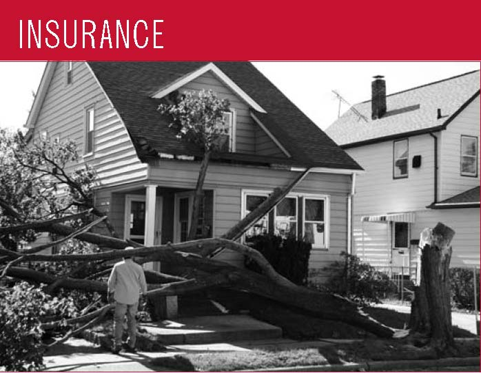
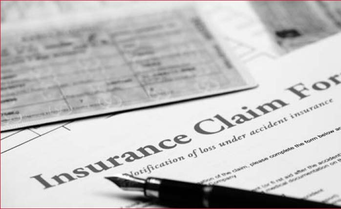
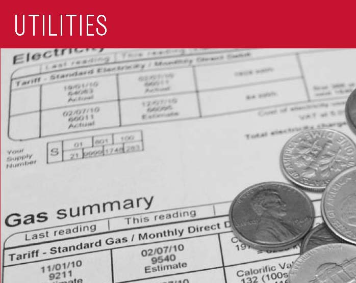

The Federal Citizen Information Center would like to express its
gratitude to the partners listed below who helped make possible the
publication of the 2013 Consumer Action
Handbook.
American Cleaning Institute
American Express Company
American Financial Services Association Education Foundation
The Colgate-Palmolive Company
Consumer Product Safety Commission
Department of Veterans Affairs
FanFreedom.org
Federal Deposit Insurance Corporation
Federal Trade Commission
Financial Industry Regulatory Authority
Kellogg Company
Money Management International
National Futures Association
The Procter & Gamble Company
Securities and Exchange Commission
Society of Consumer Affairs Professionals International
Quick Consumer Tips
Using This Handbook
This everyday guide to being a smart shopper is full of helpful tips
about preventing identity theft, understanding credit, filing a
consumer complaint, and more. The information and resources you’ll
need are arranged as follows:
Part I—Be A Savvy Consumer
Read this section for advice before you make a purchase. To
quickly locate specific topics and information, look in the Table
of Contents and Index.
Part II—Filing A Complaint
Turn to this section for suggestions on resolving consumer
problems. The sample complaint letter on page 57 will help you
present your case.
Part III—Key Information Resources
Look here for a list of public resources and contact information.
Part IV—Consumer Assistance Directory
Here you’ll find contact information for corporate offices,
consumer organizations, trade groups, government agencies, and
more.
Visit Us Online
A searchable version of this Handbook is
available online at www.USA.gov
and in Spanish at
www.GobiernoUSA.gov. You
can also order or download an electronic version of the
Handbook and hundreds of other consumer
publications at
Publications.USA.gov.
Quick Consumer Tips
As a savvy consumer, you should always be on the alert for shady
deals and scams. To avoid becoming a victim, keep these things in
mind:
A deal that sounds too good to be true usually is! Be wary of
promises to fix you credit problems, low-interest credit card
offers, deals that let you skip credit card payments,
work-at-home job opportunities, risk-free investments, and
free travel.
Don’t share personal information with someone you don’t trust.
Learn how to recognize fraud.
Beware of payday and tax refund loans. Interest rates on these
loans are usually excessive. A cash advance on a credit card
may be a better option.
Read and understand any contract or legal document you are
asked to sign. Do not sign a contract with blank spaces or
where the terms are incomplete. Some contracts include a
clause that prohibits you from taking legal action and require
you to engage in mandatory arbitration with a company in the
case of a dispute.
Get estimates from several contractors for home or car
repairs. Make sure the estimates are for the exact same
repairs for a fair comparison.
Before you buy, make sure you understand and accept the
store’s refund and return policies, especially for services
and facilities that charge monthly fees.
When paying for your purchases, double-check the final price.
If you think the price that has been charged is incorrect,
speak up. Remember, when shopping online, your purchase may
include additional fees, such as shipping, handling, and
convenience fees that are not calculated until you check out.
7. When shopping online, look for the padlock icon in the bottom
corner of your screen or a URL that begins with “https” to ensure
that your payment information is transmitted securely.
Don’t buy under stress. Avoid making big-ticket purchases
during times of duress (e.g., coping with a death or debt).
If you are having difficulty making payments on loans, notify
your lender immediately so that you can work out a payment
plan.
Be A Savvy Consumer
Buyer Beware
Before You Buy
To avoid problems and make better decisions, use this checklist
BEFORE you make a purchase:
Decide in advance exactly what you want and what you can
afford.
Do your research. Ask family, friends, and others you trust
for advice based on their experience. Gather information about
the seller and the item or service you are purchasing.
Review product test results and other information from
consumer experts. See Key Information Resources (p. 59) or
check the Handbook index (p. 147) for
specific information.
Get advice and price quotes from several sellers.
Make sure the seller has all appropriate licenses. Doctors,
lawyers, contractors, and other service providers must
register with a state or local licensing agency.
Check out a company’s complaint record with your local consumer
affairs office (p. 112) and Better Business Bureau (p. 67).
Get a written copy of guarantees and warranties.
Get the seller’s refund, return, and cancellation policies.
Ask whom to contact if you have a question or problem.
Read and understand any contract or legal document you are asked to
sign. Make sure there are no blank spaces. Insist that any extras
you are promised be put in writing.
Consider paying by credit card. If you have a problem, you can
dispute a charge made on your credit card (p. 13).
Don’t buy on impulse or under pressure; this includes donating to
charity.
Service Contracts And Extended Warranties
Service contracts or “extended warranties” can add hundreds of
dollars to your purchase price, but they are rarely worth the
cost. Some duplicate warranty coverage you get automatically from
a manufacturer or dealer. Ask these questions before you agree to
one of these contracts:
Does the dealer, the manufacturer, or an independent company
back the service contract?
How are claims handled? Who will do the work, and where will
it be done?
What happens to your coverage if the dealer or administrator
goes out of business?
Do you need prior authorization for repair work?
Are there any situations when coverage can be denied? You may
not have protection from common wear and tear, or if you fail
to follow recommendations for routine maintenance.
Product Safety Recalls
Before you buy a used vehicle or other second-hand product, check
to be sure that it hasn’t been recalled for safety reasons. Some
recalls ban the sale of an item, while others ask consumers to
return the item for replacement or repair. Sometimes, a seller
will provide a part that reduces the danger of using the product.
If you’re buying a product for a child, be especially careful.
Each year, there are approximately 100 recalls of children’s
products such as toys, clothing, cribs, and costume jewelry. Visit
the websites in the “Check Here for Recalls” box to find the
latest safety recalls. You can also sign up for free e-mail
notifications at
www.cpsc.gov/cpsclist.aspx or
download the app from
www.Recalls.gov on your
mobile phone.
Identifying And Stopping Fraud
Look for these warning signs to avoid fraud:
You are asked for your bank account or credit card number.
Someone you don’t know offers you the chance to receive a
credit card, loan, prize, lottery, or other valuable item, but
asks you for personal data to claim it.
The solicitation looks like a government document and suggests
that contest winnings or unclaimed assets are yours for a
small fee. (The government doesn’t solicit money from
citizens.)
Someone you don’t know asks you to send money or money orders
to claim a prize, lottery, credit card, loan, or other
valuable offer.
An unknown caller claiming to be a lawyer or in law
enforcement offers to help you get your money back (for a
fee).
The deal is only good “for today” or a short time.
A “repair person” suddenly finds a dangerous defect in your
car or home.
You are given little or no time to read a contract.
A sale item is suddenly unavailable, but a “much better item”
is available for slightly more money.
Someone is trying to scare you into making a purchase.
To learn more about avoiding identity theft and fraud, go to page
38.
Shopping From Home
Late delivery, shipment of wrong or damaged items, and hidden
costs are common complaints when consumers shop from home. To
avoid problems and resolve them more easily, follow the advice in
the Before You Buy checklist (p. 2). In addition, here are some
general tips:
Be wary of post office
boxes and sellers in other countries. It may be
difficult to find the seller to resolve a problem later.
Know the total price. Make
sure it includes all charges, shipping, handling, insurance,
and taxes. Coupons and other discounts should be deducted properly.
Make sure you are clear on what you are
buying. Watch for words such as “refurbished,”
“reconditioned,” “closeout,” or “discontinued.”
The security code on the back
of your credit card offers you extra protections on online
purchases.
Keep a record of your
purchase. Save any information the seller gives you,
such as order confirmation number, product description, delivery
date, cancellation policy, privacy policy, warranties, and order
confirmation numbers.
Keep track of your order. If
it’s late, you have the right to cancel and demand a refund.
Your Rights
When you order something by mail, phone, or online, the Federal
Trade Commission (FTC) requires the company to:
Ship the merchandise within the time promised, or if no specific
delivery time was stated, within 30 days of receiving your
order.
Notify you if the shipment cannot be made on time and give you
the option of waiting longer or getting a refund.
Cancel your order and return your payment if the new shipping
date cannot be met, unless you agree to another delay.
If you cancel your order, your money must be refunded within seven
days (or your account must be credited within one billing cycle if
you charged the order). The company can’t substitute a store credit.
If you applied for a charge account with the merchant at the same
time that you placed your order, the company has an extra 20 days to
ship the merchandise to allow time for processing your application.
These FTC rules only apply to the first shipment of magazine
subscriptions or other merchandise you receive repeatedly. Orders
for services (for example, photo finishing), sale of seeds and
growing plants, and collect-on-delivery (C.O.D.) orders, are covered by a different FTC
rule. Your state may also have rules that apply. Report suspected
violations to your state or local consumer protection agency (p.
112) and to the FTC (p. 107).
3-Day Cooling-Off Rule
This federal law, which dates back to 1972, protects consumers in
their homes during door-to-door sales pitches or at sales in
temporary business locations. According to the FTC, the 3-Day
Cooling-Off Rule does NOT apply to the purchase of new automobiles
or items sold online. It only applies when a company is selling
something that costs $25 or more at a location other than its
regular place of business.
To comply with the 3-Day Cooling-Off Rule, a seller must inform
buyers of their right to cancel the sale and receive a full refund
within three business days.
Be aware that there are situations in which the Cooling-Off Rule
does not apply:
You made the purchase entirely by mail, online, or telephone.
The sale was the result of prior contact you had at the seller’s
permanent business location.
You signed a document waiving your right to cancel.
Your purchase is not primarily for personal, family, or
household use.
You were buying real estate, insurance, securities, or a motor
vehicle.
You can’t return the item in a condition similar to how you
received it.
You bought arts or crafts at a fair, shopping mall, civic
center, or school. Remember, if you paid by credit card and are
having difficulty getting your refund, you may also be able to
dispute the charge with your credit card company
under the Fair Credit Billing Act. See Credit Card Billing Disputes
(p. 13).
Online shopping
Online shopping websites often offer great deals, variety, and
convenience. However, consumers need to be careful and make informed
decisions about their purchases. Some tips for shopping safely
online:
Stick to websites that are known or recommended.
Compare prices and deals, including free shipping, extended service
contracts, or other offers.
Search for online coupons, known as promo codes, which may offer
discounts or free shipping. Some sites offer promo codes for coupons
to be used in bricks-and-mortar stores.
Get a complete description of the item and parts included, and
the price, including shipping, delivery time, warranty
information, return policy, and complaint procedure.
Before you finalize the order, double check the quantity and total
price are correct.
Pay with a credit card. Federal law protects you if you need to
dispute charges, but it doesn’t apply to debit cards, checks, cash,
money orders, or other forms of payment.
Use a secure browser. Look for an address that starts with “https”
rather than “http.” Also look for a closed padlock icon, usually in
the lower right-hand corner of the screen.
Avoid making online purchases on public WiFi hotspots; these may
not be secure, and your payment information could be stolen over
the network. See WiFi (p. 41) for more information.
Print your purchase order with details of the product
and your confirmation number. For more information, go to
www.onguardonline.gov.
Online Auctions and Sellers
Many people sell items on the Internet through auctions, classified
ads, news groups, and chat rooms. Review the Internet section (p.
41) for safe shopping online as well as the general tips on shopping
from home (p. 3). When participating in an online auction, remember
to:
Check how the auction works. Can you cancel a bid? Don’t assume
that the rules one auction site uses apply to another. Some
sites offer step-by-step instructions that will take you through
the bidding process.
Find out what protections you have. Does the site provide free
insurance or guarantees for items that are not delivered or are
not what the seller claimed?
Follow the strategies used in any auction. Learn the value of
the item before you begin bidding, then establish your top price
and stick to it.
Read past customers’ ratings to determine if the seller is
reputable and delivered quality products, as promised.
Only bid on an item if you intend to buy. If you’re the highest
bidder, you have bought it. Auction companies often bar those
who back out of a deal from future bidding.
If the seller can’t accept payment by credit card, use an escrow
service. A third party holds your money until you get your
purchase and approve release of your payment to the seller.
There is a small fee, but the peace of mind is worth it.
For more tips, contact the Federal Trade Commission at
www.ftc.gov.
After You Buy
Even careful buyers can run into unforeseen problems later on. To
minimize them, follow these steps after you buy:
Save all papers that come with your purchase. Keep all
contracts, sales receipts, canceled checks, owner’s manuals,
and warranty documents.
Read and follow product and service instructions. The way you
use or take care of a product might affect your warranty
rights.
If you have a problem with the item you purchased, file a
complaint (p. 55).
Banking
Choosing a bank is a major decision, and there is no one right
choice for all consumers. When you shop for a bank, you have to
consider the actual products and services it provides as well as
the location of branches, size of the bank, fees, and interest
rates. Even if you conduct most transactions online or at
automated teller machines, you want to choose a bank with quality
customer service. Also, consider the variety of products that the
bank provides; some banks may specialize in checking and savings
accounts, while others are full-service banks, offering loans and
CDs. You don’t have to maintain all of your accounts at one bank;
you can have relationships with several to get the best rates on
different services.
ATM/Debit Cards
With a debit card and personal identification number (PIN), you
can use an Automated Teller Machine (ATM) to withdraw cash, make
deposits, or transfer funds between accounts. Some ATMs charge a
fee if you are not a member of the ATM network or are making a
transaction at a remote location.
Retail purchases can also be made with a debit card. You enter
your PIN or sign for the purchase. Although a debit card looks
like a credit card, the money for the purchase is transferred
immediately from your bank account to the store’s account. When
you use a debit card, federal law does not give you the right to
stop payment; you must resolve problems directly with the seller.
If you suspect your debit card has been lost or stolen, call the
card issuer immediately. While federal law limits your liability
for a lost or stolen credit card to $50, your liability for
unauthorized use of your ATM or debit card can be much greater,
depending on how quickly you report the loss.
If you report a debit card missing before it is used, you are
not responsible for any unauthorized withdrawals.
Your liability is limited to $50 if you report the loss within
two business days after you realize your debit card is missing
and increases to $500 if you report the loss between two and
60 days.
If you have not reported an unauthorized use of a debit or ATM
card within 60 days after your bank mails the statement
documenting the unauthorized use, you could lose all of the
money in your bank account as well as the unused portion of
your line of credit established for overdrafts.
Check the policies of your card issuer; some offer more
generous limits on a voluntary basis. Generally, banks may cover
your overdrafts under their overdraft service and impose a fee on
your account, or they may offer you a separate line of credit that
includes interest charges. If your bank offers an overdraft
service, you must opt into this service for most ATM and debit
card transactions before the bank may impose any fees. Banks must
disclose this option, the amount of the overdraft coverage fee,
and the customer’s right to cancel this service. For more
information, go to
www.consumerfinance.gov.
Savings And Checking
When it comes to finding a safe place to put your money,
there are a lot of options. Savings accounts, checking
accounts, certificates of deposit (CD), and money market
accounts are popular choices. Each has different rules
and benefits that fit different needs. The bank must
provide you with the account terms and conditions when
you open your account. When choosing the one that is
right for you, consider:
Minimum deposit requirements.
Some accounts can only be set up with a minimum dollar amount.
If your account goes below the minimum, the bank may not pay
you interest on the money you deposited and you may be
charged extra fees.
Limits on withdrawals. Can you
take money out whenever you want? Are there any penalties for doing so?
Interest. How much
(if anything) is paid and when? Daily, monthly, quarterly, yearly?
To compare rates offered by local and national financial institutions,
visit www.bankrate.com.
Deposit insurance. Make sure
your bank is a member of the Federal Deposit Insurance Corporation
(FDIC). This agency protects the money in your checking and savings
accounts, certificates of deposit (CDs), and Individual
Retirement Accounts (IRAs) up to $250,000. For more
information, see page 106 or visit
www.fdic.gov.
Credit unions. A credit union
is a nonprofit, cooperative financial institution owned and run
by its members. Like the FDIC does for banks, the National Credit
Union Share Insurance Fund (NCUSIF) insures a person’s savings up
to $250,000.
Convenience. How easy is it to
put money in and take it out? Are there branches or ATMs close to
where you work and live? Can you bank by phone or Internet?
If you are considering a checking account or another type
of account with check-writing privileges, add these
items to your list of things to think about:
Number of checks. Is there a
maximum number of checks you can write per month without incurring
a charge?
Check fees. Is there a monthly
fee for the account or a charge for each check you write?
Holds on checks.Is
there a waiting period for checks to clear before you can withdraw
the money from your account?
Overdrafts. If you write a
check for more money than you have in your account, what happens?
You may be able to link your checking account to a savings account
to protect yourself.
Debit card fees. Are there fees
for using your debit card?
Account fees. Banks can charge
fees on your checking or savings account to cover things like maintenance,
withdrawals, or minimum balance rules. However, the bank must inform you
of the fees up front as part of your account agreement and notify you
when changes occur. Practices vary from bank to bank, but each must inform
you of the fee change on your statement, in a separate letter, or in a
pamphlet. For more information, visit www.federalreserveconsumerhelp.gov/findananswer/can-a-bank-really.cfm.
Bounced checks. It’s
your responsibility to have sufficient funds in your account to
cover the checks you write. If you try to cash a check, withdraw money, or
use your debit card for an amount greater than the amount
of money in your account, you can face a bounced check
or overdraft fee. Your bank may pay for the item, but
charge you a fee or deny the purchase and still charge
you a fee. In addition, the business to which you wrote
the check may charge you an additional returned check
fee. Bounced checks can also blemish your credit
record, so you may want to talk to your bank about overdraft
protection. For more information, visit
www.federalreserve.gov/pubs/bounce.
Unsolicited Checks and Credit Offers
If you cash an unsolicited check, you could be agreeing to pay for
products or services you don’t want or need. In addition, those
“guarantees” for credit cards or loans, without consideration of
credit history, are probably a scam. Legitimate lenders never
guarantee credit. For more information on how to identify
fraudulent solicitations, visit
www.ftc.gov.
Legitimate offers of credit often come in the form of “convenience
checks,” which credit card companies enclose with your monthly
statement. However, convenience checks may carry higher fees, a
higher interest rate, and other restrictions. If you don’t want
the checks, be sure to shred them to protect yourself from
“dumpster divers” and identity thieves.
Watch out for checks from someone in a foreign country claiming
that you won a lottery, for an investment, or to pay for an item
you sold online. This could be a scam. Even if you deposit the
check, the check may not be legal. Don’t rely on money from a
check, especially foreign or unsolicited, until your bank says the
check has cleared or if you know and trust the person who sent it
to you.
Prepaid Cards
Prepaid cards, also known as prepaid debit, stored value, or gift
cards, are convenient ways to pay for your purchases. Banks and
retailers issue them to offer consumers a way to make payments and
conduct other financial transactions. You do not need to have a
bank account or a credit history to use a prepaid card. There are
plenty of situations where a prepaid card might be the most
convenient choice, but be sure you understand the key terms and
conditions BEFORE you buy.
Many cards carry protections similar to credit and debit cards. To
obtain these benefits, you must follow the instructions for
registering and activating your card. Be sure to record your card
information, including the customer service telephone number
listed on the back of the card in a separate place, so you can get
a replacement if yours is lost or stolen. Some prepaid card
issuers may charge fees for card activation, maintenance, and cash
withdrawals.
If you have a problem with a prepaid card, first contact the
customer service number. If the problem still isn’t resolved, you
may want to file a complaint with the proper authorities:
For cards issued by retailers, contact the FTC (p. 107). You
may also file a complaint with your local consumer protection
office (p. 112).
For cards issued by national banks, contact the Office of the
Comptroller of the Currency (p. 105).
For cards issued by state banks, contact the FDIC (p. 106) or
state banking authority (p. 126). For more information, visit
www.nbpca.com.
Government Benefits on Prepaid Cards
Many government agencies deliver financial benefits using prepaid
cards. All Supplemental Nutrition Assistance Program (SNAP)
benefits are paid via electronic benefit cards. Beginning in March
2013, all Social Security benefits must be paid via direct deposit
or a prepaid debit card, which comes with federal consumer
protections. Visit
www.godirect.gov for more
information.
Contact the proper regulatory agency below:
State-chartered banks and trust companies
Federal Deposit Insurance Corporation (p. 106) and state banking authorities (p. 126)
Banks with National in their name or N.A. after their name
Office of the Comptroller of the Currency, U.S. Department of the Treasury (p. 105)
Federal savings and loans and federal savings banks
Office of the Comptroller of the Currency, Department of the Treasury (p. 105)
Federally chartered credit unions
National Credit Union Administration (p. 107)
State-chartered banks that are members of the Federal Reserve System
Federal Reserve System (p. 106)
Cars
Whether you are buying or leasing a vehicle, these tips will help
you get the best deal and avoid problems:
Decide what kind of vehicle best suits your needs and budget.
Check out the seller. For car dealers, check with your state
or local consumer protection agency (p. 112) and Better
Business Bureau (p. 67). If you’re buying from an individual,
check the title to make sure you’re dealing with the vehicle’s
owner.
Take a test drive. Drive at different speeds and check for
smooth right and left turns. On a straight stretch, make sure
the vehicle doesn’t pull to one side.
Handle trade-ins and financing separately from your purchase
to get the best deal on each. Get a written price quote before
you talk about a trade-in or dealer financing.
Shop in advance and compare financing options at your credit
union, bank, or finance company. Look at the total finance
charges and the Annual Percentage Rate (APR), not just the
monthly payment.
Read and understand every document you are asked to sign.
Don’t take possession of the car until all paperwork is final.
Choose an auto insurance policy that is right for you (p. 32).
Buying a New Car
Do your research first and compare vehicles. Four key resources
that offer vehicle performance, service, and safety information
are: Consumer
Reports (),
Motor
Trend (),
Car and
Driver (),
and Edmunds automotive books and network ().
Research the dealer’s price for the car and options. It’s easier
to get the best price when you know what the dealer paid for a
vehicle. The dealer invoice price is available on a number of
websites and in printed pricing guides. Consumer
Reports offers the wholesale price; this figure factors
in dealer incentives from a manufacturer and is a more accurate
estimate of what a dealer is paying for a vehicle.
Find out whether the manufacturer is offering rebates that
will lower the cost. For more information, visit
www.autopedia.com/html/Rebate.html.
Get price quotes from several dealers. Find out if the amounts
quoted are the prices before or after rebates are deducted.
Avoid low-value extras such as credit insurance, extended
warranties, auto club memberships, rustproofing, and
upholstery finishes. You do not have to purchase credit
insurance to get a loan. See Service Contracts and Extended
Warranties (p. 2).
Hybrid cars are popular among consumers interested in fuel
economy and reducing their negative impact on the environment.
These cars combine the benefits of gasoline engines and
electric motors and can be configured to achieve different
objectives, such as improved fuel economy, increased power, or
additional auxiliary power. For more information about
hybrids, electric vehicles, and alternative fuels, visit
www.fueleconomy.gov.
Buying A Used Car
To learn what rights you have when buying a used car, contact
your state or local consumer protection office (p. 112).
Find out in advance what paperwork you will need to register a
vehicle. Contact your state’s motor vehicle department. See
www.usa.gov/Topics/Motor_Vehicles.shtml.
Check prices of similar models using the NADA Official
Used Car Guide ()
published by the National Automobile Dealers Association or the
Kelley Blue Book ().
These guides are usually available at local libraries.
Research the vehicle’s history. Ask the seller for details
concerning past owners, use, and maintenance. Next, find out
whether the car has been damaged in a flood, involved in a
crash, been labeled a “lemon,” or had its odometer rolled
back.
Your state motor vehicle department can research the car’s
title history.
The National Highway Traffic Safety Administration’s
(NHTSA) website ()
lets you search an online database
of manufacturer service bulletins and review crash test
ratings.
The website
www.vehiclehistory.gov
and the National Insurance Crime Bureau’s free database
() are
centralized places for consumers to buy information on the
history of vehicles gathered from state motor vehicle
departments and other sources. These reports are helpful but
do not guarantee that a vehicle is accident-free.
The Center for Auto Safety () provides information on safety
defect recalls, complaints and service bulletins.
Make sure any mileage disclosures match the odometer reading
on the car.
Check the warranty. If a manufacturer’s warranty is still in
effect, contact the manufacturer to make sure you can use the
coverage.
Ask about the dealer’s return policy. Get it in writing and
read it carefully.
Have your mechanic inspect the car. Talk to the seller and
agree in advance that you’ll pay for the examination if the
car passes inspection, but the seller will pay if significant
problems are discovered. A qualified mechanic should check the
vehicle’s frame, tires, air bags, and undercarriage as well as
the engine.
Examine dealer documents carefully. Make sure you are
buying—not leasing—the vehicle. Leases use terms such as
“balloon payment” and “base mileage” disclosures.
Dealer Versus Private-party Purchases
In general, buying a used car from a dealer is a safer option
because you are dealing with an institution, which means you are
better protected by law. The FTC requires dealers to post a
Buyer’s Guide in the window of each used car or truck on their
lot. This guide specifies whether the vehicle is being sold “as
is” (in the vehicle’s current condition, without a warranty) or
with a warranty, and what percentage of repair costs a dealer will
pay under the warranty. Keep in mind that private sellers
generally have less responsibility than dealers do for defects or
other problems. FTC rules do not apply to private-party sales.
Expect to pay higher prices at a dealer than if you buy from an
individual. Many dealers inspect their cars and provide an
inspection report with each one. However, this is no substitute
for your own inspection. Some dealers provide limited warranties,
and most sell extended warranties. Watch out for dealer warranties
that are “power train” warranties only, and not “bumper-tobumper,”
full-coverage warranties. It’s best to compare warranties that are
available from other sources.
Some dealers sell “certified” cars. This generally means that the
cars have had a more thorough inspection and come with a limited
warranty. Prices for certified cars are generally higher. Be sure
to get a list of what was inspected and what is covered under the
warranty.
Purchasing a car from a private seller may save you money, but
there are risks. The car could be stolen, damaged, or still under
a finance agreement. If a private seller lies to you about the
condition of the vehicle, you may sue the individual if you have
evidence and you can find him or her. An individual is very unlikely
to provide a written warranty.
Financing
Most car buyers today need some form of financing to purchase a
new vehicle. Many use direct lending, that is, a loan from a
finance company, bank, or credit union. In direct lending, a buyer
agrees to pay the amount financed, plus an agreed-upon finance
charge, over a specified period. Once a buyer and a vehicle
dealership enter into a contract to purchase a vehicle, the buyer
uses the loan proceeds from the direct lender to pay the
dealership for the vehicle.
Another common form is dealership financing, which offers
convenience, financing options, and sometimes special,
manufacturer-sponsored, low-rate deals. Before you make a
financing decision, it’s important to do your research:
Decide in advance how much you can afford to spend and stick
to your limit.
Get a copy of your credit report and correct any errors before
applying for a loan.
Check buying guides to identify price ranges and best available deals.
When you lease, you pay to drive someone else’s vehicle. Monthly
payments for a lease may be lower than loan payments, but at the
end of the lease, you do not own or have any equity in the car. To
get the best deal, follow this advice in addition to the general
suggestions for buying a car (p. 8):
To help you compare leasing versus owning, the Consumer
Leasing Act requires leasing companies to give you information
on monthly payments and other charges. Check out
www.leaseguide.com and
www.leasecompare.com
for more information.
Consider using an independent agent rather than the dealer;
you might find a better deal. Most financial institutions that
offer auto financing also offer leasing options.
Ask for details on wear and tear standards. Dings that you
regard as normal wear and tear could be billed as significant
damage at the end of your lease.
Find out how many miles you can drive in a year. Most leases
allow 12,000 to 15,000 miles a year. Expect a charge of 10 to
25 cents for each additional mile.
Check the manufacturer’s warranty; it should cover the entire
lease term and the number of miles you are likely to drive.
Ask the dealer what happens if you give up the car before the
end of your lease. There may be extra fees for doing so.
Ask what happens if the car is involved in an accident.
Get all of the terms in writing. Everything included with the
car should be listed on the lease to avoid your being charged
for “missing” equipment later.
The Consumer Financial Protection Bureau offers a consumer guide
to auto leasing at
www.consumerfinance.gov.
Recalls, “Lemon” Laws, And Secret Warranties
Sometimes a manufacturer makes a design or production mistake on a
motor vehicle. A service bulletin notifies the dealer of the
problem and how to resolve it. Because these free repairs are not
publicized, they are called “secret warranties.” The National
Highway Traffic Safety Administration maintains a database of
service bulletins filed by manufacturers.
If you have a problem with a vehicle that is a safety hazard,
check whether the manufacturer has recalled your vehicle. You can
find information about service bulletins, recalls, and other
safety defects at www-odi.nhtsa.dot.gov/
recalls/recallsearch.cfm
or call DOT’s Vehicle SafetyHotline at 1-800-424-9393. You
should report hazards that aren’t listed to your dealer, the
manufacturer of the vehicle (p. 64), and NHTSA at
www-odi.nhtsa.dot.gov/ivoq.
If a safety-related defect exists, the maker must fix it at no
cost to you—even if your warranty has expired.
If you have a vehicle with a unique problem that just never seems
to get fixed, you may have a “lemon.” Some states have laws
concerning “lemons” that require a refund or replacement if a
problem is not fixed within a reasonable number of tries. These
laws might also go into effect if you haven’t been able to use
your vehicle for a certain number of days. Contact your state or
local consumer protection office (p. 112) to learn whether you
have such protections and what steps you must take to get your
problem solved. If you believe your car is a “lemon”:
Give the dealer a list of the problems every time you bring it
in for repairs.
Get and keep copies of the repair orders listing the problems,
the work done, and the dates the car was in the shop.
Contact the manufacturer, as well as the dealer, to report the
problem. Check your owner’s manual or the directory for the
auto manufacturer (p. 64).
The Center for Auto Safety (p. 109) gathers information and
complaints concerning safety defects, recalls, service bulletins,
and state “lemon” laws.
Renting
Before renting a car:
Ask what the total cost will be after all fees are included.
There may be an airport surcharge or fees for drop-off,
insurance, fuel, mileage, taxes, additional-drivers,
underage-driver, and equipment rental (for items such as ski
racks and car seats). See drip pricing on p. 2.
Ask whether the rental company checks the driving records of
customers when they arrive at the counter. If so, you could be
rejected, even if you have a confirmed reservation.
Check in advance to be sure you aren’t duplicating insurance
coverage. If you’re traveling on business, your employer may
have insurance that covers accidental damage to the vehicle.
You might also have coverage through your personal auto
insurance (p. 32), a motor club membership, or the credit card
you use to reserve the rental.
Carefully inspect the vehicle and its tires before renting and
when you return it. Try to return the car during regular hours
so you and the rental staff can look at the car together to
verify that you didn’t damage it.
Check refueling policies and charges.
Pay with a credit card rather than a debit card, to avoid
holds on the funds in your checking account. See “Before You
Swipe Your Debit Card” (p. 6).
Ask the rental company whether a deposit is required. If so,
ask for a clear explanation of the deposit refund policies and
procedures.
Some state laws cover short-term car and truck rentals. Contact
your state or local consumer protection office (p. 112) for information or to file a complaint.
Repairs
Whenever you take a car to the repair shop:
Choose a reliable repair shop. Family, friends, or an
independent consumer-rating organization should be able to help
you. Look for shops that display various certifications that are
current. You should also check out the shop’s record with your
state or local consumer protection office (p. 112) or the Better
Business Bureau (p. 67).
Describe the symptoms. Don’t try to diagnose the problem.
Make it clear that work cannot begin until you have an
estimate (in writing, preferably) and you give your okay.
Never sign a blank repair order. If the problem can’t be
diagnosed on the spot, insist that the shop contact you for
authorization once it has found the trouble.
Ask the shop to return the old parts to you.
Follow the warranty instructions if a repair is covered under
warranty.
Get all repair warranties in writing.
Keep copies of all paperwork.
Some states, cities, and
counties have special laws that deal with auto repairs. For
information on the laws in your state, contact your state or
local consumer protection office (p. 112). A consumer guide to
auto repair is available at
www.ftc.gov/bcp/edu/pubs/consumer/autos/aut13.shtm.
Car Repossessions
When you borrow money to buy a car or truck, the lender can take
your vehicle back if you miss a payment or in some other way
violate the contract. You should also be aware that the lender:
Can repossess with cause without advance notice
Can insist you pay off the entire loan balance to get the
repossessed vehicle back
Can sell the vehicle at auction
Might be able to sue you for the difference between the
vehicle’s auction price and what you owe
Cannot break into your home or physically threaten someone while taking the vehicle
If you know you’re going to be
late with a payment, talk to the lender. If you and the lender
reach an agreement, be sure to get the agreement in writing.
Contact your state or local consumer protection office (p. 112) to
find out whether your state gives you any additional rights.
Credit
Like everything else you buy, it pays to comparison shop for
credit. For up-to-date interest rate reports on mortgages, auto
loans, credit cards, home equity loans, and other banking
products, visit
www.bankrate.com. The Equal
Credit Opportunity Act protects you when dealing with anyone who
regularly offers credit, including banks, finance companies,
stores, credit card companies, and credit unions. When you apply
for credit, a creditor may not:
Ask about or consider your sex, race, national origin, or
religion
Ask about your marital status or your spouse—unless you are
applying for a joint account or relying on your spouse’s
income, or you live in a community property state (Arizona,
California, Idaho, Louisiana, Nevada, New Mexico, Texas,
Washington, or Wisconsin)
Ask about your plans to have or raise children
Refuse to consider public assistance income or regularly
received alimony or child support
Refuse to consider income because of your sex or marital
status or because it is from part-time work or retirement
benefits
You have the right to:
Have credit in your birth name, your first name and your
spouse/partner’s last name, or your first name and a combined
last name
Have a co-signer other than your spouse if one is necessary
Keep your own accounts after you change your name or marital
status or if you retire, unless the creditor has evidence that
you are unable or unwilling to pay
Know why a credit application is rejected—the creditor must
give you the specific reasons or tell you where and how you
can get a copy of the credit report it used to determine its
rejection, if you ask within 60 days
Have accounts shared with your spouse reported in both of your
names
Know how much it will cost to borrow money
For additional information on credit, see Buying a Home (p. 27)
and Cars (p. 8). Other sources of information include the
HUD Housing Counseling Clearinghouse at 1-800-569-4287, the FTC
(p. 107), and the National Consumer Law Center (p. 110). You have
the right to a FREE annual Credit Report (see Free Credit Reports
box below).
Credit Cards
There are many types of credit cards with various features, but
there is no one best credit card. The card you use depends
entirely on how you plan to use it. Are you going to use it for
everyday purchases or larger purchases? Do you plan to pay your
balance off each month?
When you apply for a credit card, consider:
Annual Percentage Rate
(APR). If the interest rate is variable, how is it
determined, and when can it change?
Periodic rate. This is the
interest rate used to determine the finance charge on your
balance each billing period.
Annual fee. While some
cards have no annual fee, others expect you to pay an amount
each year for being a cardholder.
Rewards programs.Can you
earn points for flights, hotel stays, and gift certificates to
your favorite retailers? Use the tool on
www.creditcardtuneup.comto
find the card that offers the best rewards for you.
Grace period. This is the
number of days you have to pay your bill before finance
charges start. Without this period, you may have to pay
interest from the date you use your card or the date the
purchase is posted to your account.
Finance charges. Most
lenders calculate finance charges using an average daily
account balance, which is the average of what you owed each
day in the billing cycle. Look for offers that use an adjusted
balance, which subtracts your payment from your beginning
balance. This method usually has the lowest finance charges.
Check whether there is a minimum finance charge.
Other fees. Ask about fees
when you get a cash advance, make a late payment, or go over your
credit limit. Some credit card companies also charge a monthly
fee. Be careful: sometimes companies may also try to upsell by
offering other services such as credit protection, insurance, or
debt coverage. Visit
www.federalreserve.gov/creditcard/fees.html
for more information.
The Fair Credit and Charge Card Disclosure Act requires credit and
charge card issuers to include this information on credit
applications. The Federal Trade Commission (p. 107) offers a wide
range of free publications on credit and consumer rights at
www.ftc.gov.
There are many websites available to help you compare credit cards;
www.bankrate.com provides
free credit card tips and information and
www.cardratings.com lists
and reviews credit cards, and offers tips and credit card calculators.
The Consumer Financial Protection Bureau (CFPB) provides useful
information for consumers on selecting a credit card appropriate
for their needs. See “How do I Shop for a Credit Card,” on the
CFPB website, www.consumerfinance.gov/how-do-i-shop-for-a-credit-card.
Complaints
To complain about a problem with your credit card company, call
the number on the back of your card or try to resolve it with the
CFPB (p. 96). If you fail to resolve the issue, ask for the name,
address, and phone number of the card company’s regulatory agency.
See the chart on page 7 to find the best federal or state
regulatory agency to contact.
To complain about a credit bureau, contact the CFPB; for
complaints about a department store that offers credit, or other
Federal Deposit Insurance Corporation (FDIC)-insured financial
institution, write to the agency’s Consumer Response Center (p.
106). You may also file a complaint with the FTC at
www.ftc.gov.
Credit Card Billing Disputes
Under the Fair Credit Billing Act, you have the right to dispute
charges on your credit card that you didn’t make, are incorrect,
or are for goods or services you didn’t receive.
Send a letter to the creditor within 60 days of the statement
date of the bill with the disputed charge.
Include your name and account number, the date and amount of
the disputed charge, and a complete explanation of why you are
disputing the charge. To ensure it’s received, send your
letter by certified mail, with a return receipt requested.
The creditor or card issuer must acknowledge your letter in
writing within 30 days of receiving it and conduct an
investigation within 90 days. You do not have to pay the
amount in dispute during the investigation.
If there was an error, the creditor must credit your account
and remove any fees.
If the bill is correct, you must be told in writing what you
owe and why. You must then pay it, along with any related
finance charges.
If you don’t agree with the creditor’s decision, file an appeal
with the CFPB (p. 96).
Credit Reports And Scores
A credit report contains information on where you work and live,
how you pay your bills, and whether you’ve been sued or arrested
or have filed for bankruptcy. Credit reporting agencies (CRAs)
gather this information and sell it to creditors, employers,
insurers, and others. The most common type of CRA is the credit
bureau. There are three major credit bureaus:
Equifax: 1-800-685-1111 or
www.equifax.com. To place
a fraud alert on your credit report, call 1-888-766-0008.
TransUnion: 1-877-322-8228 or
www.transunion.com or
fraud alert 1-800-680-7289
The CFPB is now responsible for
overseeing the credit reporting agencies and receive complaints
about them (p. 96).
FICO
The information in your credit report is used to calculate your
FICO score, a number generally between 300 and 850. The acronym
stands for Fair, Isaac and Company. The higher
your score, the less risk you pose to creditors. A high score, for
example, makes it easier for you to obtain a loan, rent an
apartment, or lower your insurance rate. Your FICO score is
available from
www.myfico.comfor a fee. Free
credit reports do not contain your credit score, although you can
purchase it when you request your free annual credit report
through
www.annualcreditreport.com.
Tips for Building a Better Credit Score
Pay your bills on time. Delinquent payments and collections
negatively affect your score.
Keep balances low on credit cards and other “revolving
credit.” High outstanding debt lowers your score.
Apply for and open new credit accounts only as needed. Don’t
open an account just to have a better credit mix; it probably
won’t raise your score.
Pay off debt instead of moving it around. Owing the same
amount, but having fewer open accounts, may lower your score.
You don’t rebuild your credit score; you rebuild your credit
history. Time is your ally in improving credit. There is no “quick
fix” for a bad credit score, so be suspicious of any deals that
offer you a fast, easy solution.
Negative Information in Your Credit Report
Negative information concerning your use of credit can be kept in
your credit report for seven years. A bankruptcy can be kept for
10 years, and unpaid tax liens for 15 years. Information about a
lawsuit or an unpaid judgment against you can be reported for
seven years or until the statute of limitations runs out,
whichever is longer. Inquiries remain on your report for two
years.
Anyone who denies you credit, housing, insurance, or a job as a
result of a credit report must give you the name, address, and
telephone number of the CRA that provided the report. Under the
Fair Credit Reporting Act (FCRA), you have the right to request a
free report within 60 days if a company denies you credit based on
the report.
If there is inaccurate or incomplete information in your credit
report:
Contact the CRA and the company that provided the information.
Tell the CRA in writing what information you believe is
inaccurate. Keep a copy of all correspondence.
Under the FCRA, the information provider is required to
investigate and report the results to the CRA. If the information
is found to be incorrect, FCRA must notify all nationwide CRAs to
correct your file. If the investigation does not solve your
dispute, ask that your statement concerning the dispute be
included in your file. A notice of your dispute must be included
whenever the CRA reports the negative item.
If the information is accurate, only time, hard work, and a
personal debt repayment plan will improve your credit report.
Credit repair companies advertise that they can erase bad credit
for a hefty fee. Don’t believe it. Under the Credit Repair
Organizations Act, credit repair companies can’t require you to
pay until they have completed promised services. They must also
give you:
A copy of the “Consumer Credit File Rights Under State and
Federal Law” before you sign a contract
A written contract that spells out your rights and obligations
Three days to cancel without paying any fees
Some credit
repair companies promise to help you establish a whole new
credit identity. You can be charged with fraud if you use the
mail or telephone to apply for credit with false information.
It is also a federal crime to make false statements on a loan
or credit application, to give a false Social Security number,
or to obtain an Employer Identification Number from the
Internal Revenue Service under false pretenses. If you have
lost money to a credit repair scam, contact your state or local
consumer affairs office (p. 112).
Dealing with Debt
If you want to reduce your amount of debt, you can do some work on
your own. First, develop a realistic budget so you can see your
income and expenses in one place and look for ways to save money.
For help in creating a budget, visit
www.mymoney.gov or
www.consumer.gov/articles/1002-making-budget#!what-it-is.
Also, contact your creditors and inform them that you are having
difficulty making payments; they may be able to modify your
payment plan.
Debt Collection
The Fair Debt Collection Practices Act applies to those who
collect debts owed to creditors for personal, family, and
household expenditures. These debts include car loans, mortgages,
charge accounts, and money owed for medical bills. A debt
collector is someone hired to collect money you owe.
Within five days after a debt collector first contacts you, the
collector must send you a notice that tells you the name of the
creditor, how much you owe, and what action to take if you believe
you don’t owe the money. If you owe the money or part of it,
contact the creditor to arrange for payment. If you believe you
don’t owe the money, contact the creditor in writing and send a
copy to the collection agency with a letter telling it not to
contact you.
A debt collector may not:
Contact you at unreasonable times, for example, before 8 am or
after 9 pm, unless you agree
Contact you at work if you tell the debt collector your
employer disapproves
Contact you after you write a letter telling the collector to
stop, except to notify you if the collector or creditor plans
to take a specific action
Contact your friends, relatives, employer, or others, except
to find out where you live and work
Harass you with repeated telephone calls, profane language, or
threats to harm you
Make any false statement or claim you will be arrested
Threaten to have money deducted from your paycheck or to sue
you, unless the collection agency or creditor intends to do so
and it is legal
To file a complaint about a debt collection company, contact your
state or local consumer protection agency (p. 112) and the FTC (p. 107).
Credit Counseling Services
Counseling services are available to help people budget money and
pay bills. Credit unions, extension offices, military family
service centers, and religious organizations are among those that
may offer free or low-cost credit counseling.
Local, nonprofit agencies that provide educational programs on
money management and help in developing debt payment plans operate
under the name Consumer Credit Counseling Service (CCCS). Make
certain that the agency is accredited by the Council on
Accreditation (COA) or the International Organization for
Standardization (ISO). The counselor should also be certified by
the National Foundation for Credit Counseling (NFCC), an
organization that supports a national network of credit
counselors.
Typically, a counseling service will negotiate lower payments with
your creditors, and then make the payments using money you send to
it each month. The cost of setting up this debt-management plan is
paid by the creditor, not you. Ask these questions to find the best
counselor for you:
What services do you offer? Look for an organization that
offers budget counseling and money management classes as well
as debt-management planning.
Do you offer free information? Avoid organizations that charge
for information or make you provide a lot of details about
your problem first.
What are your fees? Are there set-up and/or monthly fees? A
typical set-up fee is $10. Beware of agencies that charge
large up-front fees.
How will the debt-management plan work? What debts can be
included in the plan, and will you get regular reports on your
accounts?
Ask whether the counselor can get creditors to lower or
eliminate interest and fees. If the answer is yes, contact
your creditors to verify this.
Ask what happens if you can’t afford to pay. If an
organization won’t help you because you can’t afford to pay,
go somewhere else for help.
Will your counselor help you avoid future problems? Getting a
plan for avoiding future debt is as important as solving the
immediate debt problem.
Ask for a contract. All verbal promises should be in writing
before you pay any money.
Are your counselors accredited or certified? Legitimate credit
counseling firms are affiliated with the NFCC (p. 145) or the
Association of Independent Consumer Credit Counseling Agencies
(p. 143).
Check with your local consumer protection agency
(p. 112) and the Better Business Bureau (p. 67) to see whether any
complaints have been filed about the counseling service you’re
considering.
If you have concerns about approved credit counseling agencies or
credit counseling providers, please contact the U.S. Trustee
Program at
www.justice.gov/ust or
call 202-514-4100.
Personal Bankruptcy
Bankruptcy generally is considered the debt management option of
last resort because the results are long-lasting and far-reaching.
The Bankruptcy Abuse and Prevention Act of 2005 established more
stringent rules for consumers and attorneys.
The filing process may be difficult for debtors:
Debtors must file documents, including itemized statements of
monthly net income, proof of income (pay stubs) for the last 60
days, and tax returns for the preceding year (four years for
Chapter 13 bankruptcies).
Debtors must take a pre-filing credit counseling and post-filing
education course to have debts discharged. To find an approved
credit counseling provider, visit
www.justice.gov/ust.
Debtors face increased filing fees, plus fees for credit
counseling/education.
The bankruptcy petition and process are complicated, so it’s
very difficult to file without an attorney. However, attorneys
are more apprehensive about filing bankruptcy because of
sanctions.
The filing process for lawyers:
An attorney’s signature on a petition certifies that the attorney
has performed reasonable investigation into circumstances giving
rise to the petition.
Attorneys must carefully review documents such as tax returns and
pay stubs and ask clients for credit reports.
Loans
There are different types of loans. Some are secured loans. This
mean that your property and things you own are used as collateral,
and if you cannot pay back the loan, the lender will take your
collateral to get their money back. Other types of loans,
unsecured loans, don’t use property as collateral. Lenders
consider these as more risky than secured loans, so they charge a
higher interest rate for them. Most credit cards are unsecured
loans, although some consumers have secured credit cards. Two very
common secured loans are home equity and installment loans.
Home Equity Loans
A home equity loan is a form of credit where your home is used as
collateral for the loan. This type of loan is often used to pay
for major expenses, such as education, medical bills, and home
repairs. Consider carefully before taking out a home equity loan.
If you are unable to make payments on time, you could lose your
home.
Home equity loans can be either a revolving line of credit or a
lump sum. Revolving credit lets you withdraw funds when you need
them. A lump sum is a one-time, closed-end loan for a particular
purpose, such as remodeling or tuition. Apply for a home equity
loan through a bank or credit union first. These loans are likely
to cost less than those offered by finance companies.
Please see Housing (p. 27) for helpful information about
buying, leasing, renting, or repairing a home.
Installment Loans
Installment loans are loans that are repaid over time with
a set number of scheduled payments; the most common
installment loans are home or car loans. Before you sign
an agreement for a loan to buy a house, a car, or other
large purchase, make sure you fully understand all of the
lender’s terms and conditions, including:
The dollar amount you are borrowing
The payment amounts and when they are due
The total finance charge, including all interest and fees
you must pay to get the loan
The APR, the rate of interest you will pay over the full
term of the loan
Penalties for late payments
What the lender will do if you can’t pay back the loan
Penalties if you pay the loan back early
The Truth in Lending Act requires lenders to give you this
information so you can compare different offers.
Education
Financing Your Education
The U.S. Department of Education’s website,
www.studentaid.ed.gov, provides information on
preparing for and funding education beyond high school
with details on the federal aid programs. Another source
of information on financial assistance is www.finaid.org.
Both sites offer calculators to help you determine how
much school will cost, how much you need to save, and
how much aid you will need.
Before selecting a college, you must understand the
earning potential of your chosen career. You need to
make sure that your annual salary after you graduate
will be high enough to cover any student loan payments
you may need to make in addition to your other living
expenses. The Department of Labor has a web-based
career search tool that will give you information
concerning the average annual salary for various career
options at
www.studentaid.ed.gov/prepare-for-college/careers/search.
Paying For College 101
Many state governments have created 529 plans that
make it easier for families to save for their child’s
education. These plans, which can be sponsored by
states or institutions of higher learning, encourage saving
for future college costs, and the earnings grow tax-free.
There are two main types: “pre-paid tuition plans” and
“college savings plans.” Pre-paid plans allow you to pay
for your child’s college tuition based on today’s costs,
and then pay out at the future (higher) cost once your
child is in college. College savings plans allow you to
invest money in several investment funds, ranging in risk
level, to pay for your child’s college education. For more
information about the different types of 529 plans and
the plans available in each state, visit
www.collegesavings.org.
Financial Aid
Student financial aid is available from a variety of sources,
including the federal government, individual states, colleges and
universities, and other public and private agencies and
organizations. The four basic types of college aid are:
Grants.Gift aid that does
not have to be repaid and is generally awarded according to
financial need.
Work-Study. The Federal
Work-Study Program (FWS) is a federally funded source of
financial assistance used to offset financial education costs.
Students who qualify earn money by working while attending
school. This money does not have to be repaid.
Loans. Funds are borrowed
and must be repaid with interest. As a general rule, federal
student loans have more favorable terms and lower interest
rates than traditional consumer loans do.
Scholarships. Funds are
offered by the school, local/ community organizations, private
institutions, and trusts. Scholarships do not have to be
repaid and are generally awarded based on specific criteria.
Applying for Aid
You must complete and submit a Free Application for Federal
Student Aid (FAFSASM) to apply for
federal student aid. FAFSA on the WebSM
is the quickest and easiest method of applying. Go to
www.fafsa.gov to apply.
Education Tax Benefits
The federal government allows you to receive tax credits,
deductions, and savings plans that can help with your expenses for
higher education. The tax credits can reduce the amount of income
tax you have to pay, while deductions reduce the amount of your
income that is taxable. Visit
www.irs.gov/uac/Tax-Benefits-for-Education:-Information-Center
for information on specific types of credits and deductions.
Federal Student Aid Information Center
The Federal Student Aid Information Center (FSAIC) can answer your
federal student financial aid questions and can give you all the
help you need for free. You can also use the FSAIC automated
response system to find out whether your
FAFSASM has been processed and to
request a copy of your Student Aid Report (SAR). For FSAIC contact
information, see page 97.
Federal Loan Program Repayment Information
Public Service Loan Forgiveness Program. Offers forgiveness
for outstanding federal loans for individuals working full
time in public service jobs.
Income-Based Repayment
Plan. Helps to make repaying education loans more
affordable for low-income borrowers.
Both programs offer generous benefits, but the rules may seem
complex, so it is important to get all of the details. types of
credits and deductions. For more information on these programs as
well as other repayment options:
National Association of Student Financial Aid
Administrators: www.nasfaa.org
Comparing Student Loans
The Consumer Financial Protection Bureau (CFPB) has a
Know Before You Owe Student Loan website, developed
in partnership with the Department of Education. It
provides financial aid shopping sheets that help schools
communicate the financial aid options available to
students. Visit www.consumerfinance.gov/students/knowbeforeyouowe.
Defaulting on Student Loans
You can take steps to avoid defaulting on your student
loan. Before you get the loan, determine how much
money you need to borrow and only borrow that amount.
When you get the loan, make certain that you understand
the details such as the payment terms and what type of
loan you have. Once your student loan becomes due:
Maintain accurate records of your loan, including the
loan agreement, interest rates, and account numbers.
Track your loans to stay updated on how much you
owe.
Make certain that the loan servicer has your current
contact information and bank account (if payments are
withdrawn automatically).
If you default, it means you failed to make payments on
your student loan as scheduled. Your loan becomes
delinquent the first day after you miss a payment.
However, the loan isn’t in default until 270 days have
passed without a payment. The consequences of default
can be severe, including:
The entire unpaid balance of your loan and any interest
is immediately due and payable.
Your loan account is assigned to a collection agency.
The loan will be reported as delinquent to credit
bureaus, damaging your credit.
Your federal and state taxes may be withheld through
a tax offset. This means that the Internal Revenue
Service can take your federal and state tax refund to
collect any of your defaulted student loan debt.
Your employer can withhold money from your pay and
send the money to the government. This process is
called wage garnishment.
If you are having difficulty making your payments, contact
your loan servicer immediately. The servicer may be
able to help by changing your repayment plan, switching
the due date, getting a deferment or forbearance, or
consolidating your student loans.
Times have changed for job searching, and numerous
websites are now available that post private industry
jobs. Many companies also offer a way to apply online.
However, these sites and new methods do not replace
traditional and proven job-hunting approaches such as
networking, personal contacts, business organizations,
and interviewing.
Employment Agencies and Recruiters
If you’re looking for a job, you may come across ads from
employment agencies or receive calls from recruiters that
promise wonderful opportunities. While some companies
honestly want to help you, others are more interested in
taking your money. Be wary of:
Promises to get you a job and a guaranteed income
Up-front fees, even when you are guaranteed a refund if
you are dissatisfied
Employment agencies whose ads read like job ads
Promotions of “previously undisclosed” government
jobs. All federal jobs are announced to the public at
www.usajobs.gov.
Get a copy of the employment agency contract and review
it carefully before you pay any money. Check with your
local consumer protection agency (p. 112) and the Better
Business Bureau (p. 67) to see whether any complaints
have been filed about a company.
The FTC (p. 107) investigates businesses that fraudulently
advertise employment openings and guarantee job placement. Contact
the FTC if you have a complaint.
Work-at-Home Companies
Not all work-at-home opportunities deliver on their promises. Some
classic work-at-home schemes are medical billing, envelope
stuffing, and assembly or craftwork. Ads for these businesses say,
“Be part of one of America’s Fastest-Growing Industries. Earn
thousands of dollars a month from your home!” Legitimate
work-at-home program sponsors should tell you, in writing, what’s
involved in the program they are selling. Here are some questions
you might ask a promoter:
What tasks will I have to perform? (Ask the program sponsor to
list every step of the job.)
Will I be paid a salary, or will my pay be based on
commission?
When will I get my first paycheck?
What is the total cost of the work-at-home program, including
supplies, equipment, and membership fees? What will I get for
my money?
The answers to these questions may help you determine whether a
work-at-home program is appropriate for your circumstances and
whether it is legitimate.
Multilevel Marketing
Some multilevel marketing plans are legitimate; however, others
are illegal pyramid schemes. In pyramids, commissions are based on
the number of distributors recruited. Most of the product sales
are made to these distributors, not to consumers in general. The
underlying goods and services, which vary from vitamins to car
leases, only make the schemes look legitimate. Most people end up
with nothing to show for their money except the expensive products
or marketing materials they were pressured to buy for resale.
If you’re thinking about joining what appears to be a legitimate
multilevel marketing plan, take time to learn about the plan:
What is the company’s track record?
What products does it sell?
Does it sell products to the public at large?
Does it have the evidence to back up the claims it makes about
its product?
Is the product competitively priced?
Is it likely to appeal to a large customer base?
How much does it cost to join the plan?
Are monthly minimum sales required to earn a commission?
Will you be required to recruit new distributors to earn your
commission?
Net-Based Business Opportunities
The FTC says that many Internet business opportunities are scams
that promise more than they can possibly deliver. These companies
lure would-be entrepreneurs with false promises of big earnings
for little effort. Some tips for finding a legitimate opportunity:
Consider the promotion carefully.
Study the business opportunity’s franchise disclosure document.
Get earnings claims in writing and compare them with the
experience of previous franchise and business opportunity owners.
Visit previous franchise and business opportunity owners in
person, preferably at their places of business.
Check out the company with the local consumer protection
agency (p. 112) and Better Business Bureau (p. 67) to see
whether there have been any complaints.
If the business opportunity involves selling products from
well-known companies, verify the relationship with the legal
department of the company whose merchandise you would promote.
Consult an attorney, accountant, or other business advisor before
you put any money down or sign any papers.
Take your time. Promoters of fraudulent business opportunities are
likely to use high-pressure sales tactics to get you to buy in. If
the business opportunity is legitimate, it will still be around
when you’re ready to decide.
Unemployment
The government’s Unemployment Insurance Program
provides benefits to eligible workers who become
unemployed through no fault of their own and who meet
other eligibility requirements. Each state administers
its own program under federal guidelines. Eligibility
requirements, benefit amounts, and length of benefits are
determined by the states. For more information,
go to www.dol.gov/dol/topic/unemployment-insurance/index.htm.
In addition, some states are extending unemployment
benefits for eligible recipients for up to 13 additional
weeks. Visit workforcesecurity.doleta.gov for the latest
information regarding your state’s benefit programs.
Food and Nutrition
Consumers have a wide variety of food choices available.
You want food that is safe, nutritious, and won’t break
your budget, but it’s important to remember that making
healthier choices can help you feel your best and stay
strong. You can also reduce the risk for many diseases,
including heart disease, cancer, stroke, and diabetes.
Healthy Food Choices
To help you make healthy food choices, the federal
government posts dietary guidelines at www.health.gov/dietaryguidelines.
Federal regulations also require many
foods to identify fat content, fiber, and nutrients on their
labels. For more information about food labels, visit www.fda.gov/Food/ResourcesForYou/Consumers/NFLPM.
Check out these resources for advice, tips, and
information on food shopping and nutrition:
U.S. Department of Agriculture (p. 96)
U.S. Food and Drug Administration (p. 100)
Nutrition.gov ()
MedlinePlus.gov ()
Center for Nutrition Policy and Promotion ()
Food Safety
Food safety in the home revolves around three main
functions: food storage, food handling, and cooking. By
practicing a few simple rules for cleaning, separating,
cooking, and chilling, you can prevent most food-borne
illness in the home. The website www.foodsafety.gov
is your gateway to government food safety information,
including publications you can download or request. You
can also visit www.recalls.gov for the latest food safety
alerts and recalls.
For more information, here are some additional
resources:
Centers for Disease Control and Prevention (p. 99)
FDA’s Food Information Hotline,
1-888-SAFEFOOD (723-3366)
It can be a challenge to make healthy food choices and
stay within your food budget. Here are some tips to help
you get the most from your grocery budget:
Take an inventory of the food you already have in your
home. Plan your meals for the week, keeping in mind
what you already have.
Make a shopping list and stick to it.
Compare unit prices (cost per ounce or pound) to get
the best deal.
Buy the generic store brand versions of foods.
Take advantage of store loyalty savings programs
as well as clipping coupons and online discounts.
Remember that stores retain your purchase habits and
use them for marketing purposes. See Protecting Your
Privacy (p. 38) for more information.
Only take advantage of the deal if you know you will eat
the discounted item. It’s not a deal if the food goes to
waste.
Shop the perimeter of the store for nutrient-dense
foods. Processed and packaged foods tend to be more
expensive.
Visit your local farmer’s market to find fresh produce.
Arrive early to get the best selection or late to get the
best deals. Fresh food spoils quickly, so don’t buy more
than you can eat or freeze. Find your local farmers
market at search.ams.usda.gov/farmersmarkets.
Shop for foods that are in season. When the supply is
plentiful, the prices tend to be lower.
Some stores offer discounts to customers for bringing
their own bags.
Buying organic food is a way to eat in a healthy manner and
protect the environment. These foods are grown and processed
according to USDA regulations and follow specific rules concerning
pest control, raising animals, and the use of additives. Keep in
mind that organic and natural foods tend to be more expensive than
conventionally grown foods, and that the USDA does not claim that
organic food is safer or more nutritious than other foods.
To make sure a product is certified organic, look for the USDA
organic seal. You can also tell whether produce was grown
organically by checking the price look up code (PLU); if the first
number starts with a 4, then the food was grown conventionally, if
it starts with a 9, it was grown organically.
Other common labels that help you choose certain types of food
products include:
Free-Range or
Cage-Free. The flock was provided shelter in a
building, room, or area with unlimited access to food, fresh
water, and the outdoors during its production cycle.
Natural. As required by USDA,
meat, poultry, and egg products labeled as “natural” must be
minimally processed and contain no artificial ingredients.
Grass-Fed. Grass-fed animals
receive a majority of their nutrients from grass throughout their
life, while organic animals’ pasture diet may be supplemented with
grain.
For more information about organic foods, visit
www.ams.usda.gov.
Going Green
“Going Green” means practicing an environmentally friendly and
ecologically responsible lifestyle as well as making decisions to
help protect the environment and sustain natural resources. There
are lots of reasons to consider going green—too much trash,
greenhouse gases, air and water pollution, damage to the ozone
layer, and saving money. For example, switching all of the light
bulbs in a home from conventional incandescent light bulbs to
compact fluorescent light (CFL) bulbs could save about $40 over
the life of the bulb. Other examples include:
Turn your thermostat down two degrees in winter and up two
degrees in summer.
Make sure your walls and ceilings are well insulated.
Replace bathroom and kitchen faucets with low-flow models.
For more ideas to help the environment and your wallet, check the
EPA Pick 5 at
www.epa.gov/pick5.
Buying Green
The U.S. Environmental Protection Agency (EPA)
has a green products web
portal (www.epa.gov/greenerproducts) to help you navigate
the complex world of green products. The EPA also has a number of
eco-labeling partnership programs to help you identify greener,
safer, and more efficient products. Look for these EPA program
labels when buying:
Design for the
Environment(DfE)—For
household cleaners and other products that have been
determined to be safer for both your health and the
environment
()
SmartWay Certified
Vehicle—For cleaner, more
fuel efficient cars
and trucks ()
You can also choose to buy organic or locally produced food and
eco-friendly clothing. For more information about national
standards covering organic food, go to the
U.S. Department of Agriculture’s Agricultural Marketing Service at
www.ams.usda.gov/AMSv1.0.
There are no national standards for organic clothing, but
some fabrics to consider include organic cotton, bark cloth,
bamboo, and organic wool.
By making greener product choices, you are saving money on
utilities and fuel, and protecting public health and the
environment.
Reusing and Recycling
You can make a big impact by using the products you buy in ways
that respect the environment:
Use fewer products and follow instructions for product use.
Conserve energy, water, and materials.
Recycle items made of materials such as glass, metal, plastic,
or paper.
Dispose of products properly.
Many utility companies now offer
curbside recycling programs that provide U.S. households with
a responsible and convenient way to recycle materials. To
locate information on recycling services and efforts in
your area, visit Earth 911’s website
() or call its toll-free hotline,
1-800-CLEANUP (253-2687).
It is easy to dispose of many products safely. Others, such
as car batteries, cell phones, televisions, paints, oils, and
solvents, require special handling. You can dispose of these
products responsibly through your local household hazardous waste
(HHW) collection facility or at your local government’s annual HHW
collection day. Some items may be given to charitable
organizations or even dropped off at electronics retailers.
Contact the EPA (p. 105) to help you make the right decisions about the best way
to dispose of waste.
Health Care
There are plenty of resources available to help you make health
care decisions. Be wary of websites sponsored by companies that
are trying to sell you a particular treatment. It’s better to
contact reputable associations or visit sites run by government
agencies and recognized organizations such as the Mayo Clinic or
the American Medical Association (AMA). This information should
complement, not replace, what you receive from a doctor. Here are
some sites that are generally recognized as reliable information
sources:
HealthFinder.gov and MedlinePlus ()
provide information on health issues, health care
programs, and organizations.
Mayo Clinic ()
offers an index of diseases and much more.
Medical Library
Association ()
links to websites suggested by librarians.
National Institute of Mental Health () provides
information on research about understanding and treating mental illness.
Substance Abuse and Mental Health Services Administration
()
provides information on prevention, treatment, and
recovery from substance abuse or mental health issues.
HealthCare.gov () provides
tools that help compare doctors, hospitals, and nursing homes.
Choosing A Doctor
When searching for a primary care doctor, dentist, specialist, or
other health care professional:
Find out whether the health care professional is licensed in
your state. A state or local occupational and professional
licensing board will be able to give you this information.
Research whether the health care professional is
board-certified in the appropriate specialty. Visit
www.ama-assn.org and
www.abms.org for more
information.
Ask how often the health care professional has done the procedure
you need or has treated your condition. You may be able to find
some of this information on the Internet. For example, the Centers
for Disease Control and Prevention (CDC) reports the success rates
and number of procedures performed by fertility clinics at
www.cdc.gov. Some states also
collect and post data on the success of heart-bypass surgery.
Find out what doctors participate in your health insurance
plan. If you are having surgery, check that all providers
(radiologists, anesthesiologists) are also covered by your
plan, to avoid surprise bills.
Consider these questions regarding your health care provider
and his or her practice:
Does the doctor participate in your insurance plan?
Is the office in an area that you can get to easily or does it
have hours during times when you can make an appointment?
Does the doctor have privileges at the hospital you prefer?
Do you get along well with the doctor? Do you feel that you
communicate well with each other and that he or she listens to
your concerns and explains diagnoses and benefits of new
treatments and prescriptions clearly?
What is the doctor’s cancelation policy?
Will you have to pay for the visit if you cancel your appointment?
Filing a Complaint
If you have a complaint about the medical services you received
from a physician, you may file a complaint with your state medical
board. For a complete directory from
the Federation of State Medical Boards, visit .
You can also call the Federation at 817-868-4000 to get the
phone number of your state’s medical board.
Choosing A Health Care Facility
Report cards on the Internet can help you compare health care
facilities. Compare doctors and health care facilities at
www.healthcare.gov/compare.
In addition, www.usnews.com
and www.healthgrades.com
rate hospitals based on information collected from Medicare
records and other sources. As of October 2012, the Affordable Care
Act requires all hospitals to report performance publically.
When determining the best health care facility for you,
consider these factors:
Does the facility accept payment from your insurance
plan?
Does your doctor have privileges to provide treatment
to patients at the facility?
What is the quality of the facility?
Does the facility specialize in services and procedures
that fit with your medical needs?
Is the facility in an area you can travel to and from
easily? Find health care facilities in your area at
findahealthcenter.hrsa.gov.
Elder Care
As people live longer, the need for services for
seniors has become more important. The Eldercare
Locator (), a public service of the
Administration on Aging, U.S. Department of Health and
Human Services, is a nationwide service that connects
older Americans and their caregivers with information on
senior services. Visit www.aoa.gov/Elders_Families for
a list of resources to connect older persons, caregivers,
and professionals with important federal, national, and
local programs.
The Joint Commission (p. 145) accredits hospitals as
well as nursing homes and other health care
organizations. Specially trained investigators assess
whether these organizations meet set standards.
At www.qualitycheck.org, you can check on a local
facility, including how it compares with others.
The Joint Commission also accepts consumer
complaints. You can post a complaint on its website,
www.jointcommission.org.
If you are looking for a nursing home or other assisted-
living facility, these organizations can help:
Nursing Home Compare, operated by the U.S.
Department of Health and Human Services, will help
you compare the facilities in many states.
Go to www.medicare.gov/nhcompare/home.asp or call
1-800-MEDICARE (633-4227).
Eldercare Locator () provides
information and referral services for those seeking
local and state support resources for the elderly (p. 99).
LeadingAge () is a trade group
that represents many nonprofit facilities that serve and
support the elderly (p. 145).
The Assisted Living Federation of America
() represents both for-profit and nonprofit
assisted-living facilities; call 703-894-1805 (p. 143).
The Commission on Accreditation of Rehabilitation
Facilities () gives its seal of approval to
qualifying facilities; call 1-888-281-6531 (p. 143).
Prescription Drugs
Your pharmacist oversees an important part of your
health care by providing the medications prescribed
by other health care professionals. It’s important that
you are proactive and communicate honestly with
your pharmacist. Topics you should discuss with your
pharmacist include:
What other medications you take
Whether you have allergic reactions to any medications
Whether there is a generic version of the medication
you can take instead
Any questions about the medication you are receiving
Whether there is a risk that your medications don’t mix
well with each other
Whether there any side effects to the medications
Remember to finish your entire prescription, since some illnesses
require treatment to continue past the time when symptoms go away.
Make certain that your pharmacy has your current health and
prescription insurance on record so you get the best price
possible. If you have difficulty paying for your medications,
contact the manufacturer; some pharmaceutical companies have
patient assistance programs to help you afford your medication.
An increasing number of consumers are replacing a trip to the
pharmacy with a visit to the Internet. While there are online
pharmacies that provide legitimate prescription services, there
are also some questionable sites that make buying medicines online
risky. Do business only with a licensed U.S. pharmacy. Check with
the National Association of Boards of Pharmacy to determine
whether the site is licensed and in good standing. Visit
www.nabp.net or call
847-391-4406.
Want to know the side effects of a particular
medication? Curious whether a drug has been approved by the FDA?
For answers to these questions and other information on approved
prescription and over-the-counter and discontinued
drugs, visit www.accessdata.fda.gov/scripts/cder/drugsatfda.
For general drug information, you can also contact the FDA (p. 100).
Medicare Prescription Drug Coverage
Medicare offers prescription drug coverage to help senior citizens
and others who need medical assistance get the prescription drugs
they need, under Part D of the program (or Part C if you are
enrolled in the Medicare Advantage Plan). Everyone with Medicare
can join a drug plan to get this coverage. Not all Medicare drug
plans are the same, however. If you aren’t sure whether a drug
plan is approved by Medicare, call 1-800-MEDICARE (6334227). Look
for the “Medicare Approved” seal on drug discount cards to make
sure you are getting the best deal.
Medicare prescription drug coverage pays expenses up to $2,800;
once your prescription costs exceeds that amount, you will no
longer have coverage and will be responsible for the full cost of
your drugs. However, once your out-of-pocket spending reaches
$4,550, your prescription coverage will kick back in. Any amount
of prescription drug spending between $2,800 and $4,550 is called
the coverage gap or “Medicare donut hole.” Beginning in 2013, if
you reach the coverage gap, you will automatically get a 52.5%
discount on covered brand-name drugs and a 14% discount on generic
drugs. If you have limited income and resources, you may get extra
help to cover prescription drugs for little or no cost. For more
information, contact the Centers for Medicare & Medicaid
Services (p. 100).
We all face the possibility that we may become incapacitated
sometime during our lifetime. This often happens when nearing
death, but it can also be the result of a temporary condition.
Many people assume their spouses or children will automatically be
allowed to make financial and/or medical decisions for them, but
this is not necessarily true.
Advance directives are written documents that tell your doctors
what kind of treatment you want if you become unable to make
medical decisions (for example, if you’re in a coma). Forms and
laws vary from state to state, so it’s a good idea to understand
the laws of the state where you live when you write advance
directives. It’s also a good idea to make them before you are very
ill. Federal law requires hospitals, nursing homes, and other
institutions that receive Medicare or Medicaid funds to provide
written information regarding advance medical directives to all
patients upon admission.
A living will is one type of advance directive that goes into
effect when a person is terminally ill. A living will does not
give you the opportunity to select someone to make decisions for
you, but it does allow you to specify the kind of treatment you
want in specific situations. For example, you might choose to
specify that you do not want to be treated with antibiotics if
death is imminent. You can, if you choose, include an advance
directive that you do not wish to be resuscitated if your heart
stops or if you stop breathing. In this case, a Do Not Resuscitate
(DNR) order would be entered on your medical chart.
Naming a Durable Power of Attorney for Health Care
A durable power of attorney for health care (sometimes called a
durable medical power of attorney) specifies the person you’ve
chosen to make medical decisions for you. It is activated when
you’re unconscious or unable to make medical decisions, or when
you have specified. You need to choose someone who meets the legal
requirements in your state for acting as your agent. State laws
vary, but most states disqualify anyone under the age of 18, your
health care provider, or employees of your health care provider.
The person you choose as your agent must:
Be willing to speak and advocate on your behalf
Be willing to deal with conflict among friends and family
members, if it arises
Know you well and understand your wishes
Be willing to talk with you about these issues
Be someone you trust with your life
Housing
When choosing among housing options, there are many decisions you
must make. Should you rent or buy? If you buy, what sort of
financing should you choose, and what type of mortgages is best
for you? The U.S. Department of Housing and Urban Development
(HUD) funds housing counseling agencies throughout the country to
help you make these decisions. These organizations can give you
advice on buying a home, renting, defaults, foreclosures, credit
issues, and reverse mortgages. To contact the agency nearest you,
call 1-800-569-4287 or visit
www.hud.gov. Homeowners with
problems that could result in default on their mortgage or
foreclosure on their property are encouraged to contact a
HUD-approved housing counseling agency immediately.
If you believe you are being discriminated against during your
housing search because of your race, color, nationality, religion,
sex, familial status, or disability, contact HUD’s Office of Fair
Housing and Equal Opportunity (p. 102).
Buying A Home
Buying a home is one of the most complex financial decisions
you’ll ever make. In addition to the financial and legal issues
involved, real estate agents and lenders may not be acting in your
best interest.
Real estate agents represent the seller, not the buyer.
Consider hiring a buyer’s agent who works for you, not for the
seller.
Get prices on other homes. Knowing the price of other homes in
a neighborhood will help you avoid paying too much.
Have the property inspected. Use a licensed home inspector to
inspect the property carefully before you agree to buy it.
When shopping for a home mortgage, make sure you obtain all of the
relevant information:
Research current interest rates. Check the real estate section
of your local newspaper, use the Internet, or call at least
six lenders for information.
Check the rates for 15-year, 20-year, and 30-year mortgages.
You may be able to save thousands of dollars in interest
charges by getting the shortest-term mortgage you can afford.
Ask for details on the same loan amount, loan term, and type
of loan from multiple lenders so you can compare the
information. Be sure to get the APR, which takes into account
not only the interest rate, but also points, broker fees, and
other credit charges expressed as a yearly rate.
Ask whether the rate is fixed or adjustable. The interest rate
on adjustable-rate mortgages (ARMs) can vary a great deal over
the lifetime of the mortgage. An increase of several percentage
points might raise payments by hundreds of dollars per month.
If a loan has an adjustable rate, ask when and how the rate
and loan payment can change.
Find out how much of a down payment is required. Some lenders
require 20% of the home’s purchase price as a down payment.
But many lenders now offer loans that require less. In these
cases, you may be required to purchase private mortgage
insurance (PMI) to protect the lender if you fall behind on
payments.
If PMI is required, ask what the total cost of the insurance
will be. How much will the monthly mortgage payment be when
the PMI premium is added, and how long you will be required to
carry PMI?
Ask whether you can pay off the loan early, and whether there
is a penalty for doing so.
There is a long list of sources
for mortgage loans: mortgage banks, mortgage brokers, banks,
thrifts and credit unions, home builders, real estate agencies,
and Internet lenders.
CFPB rules help mortgage borrowers by requiring that mortgage
companies notify them when their loans are transferred to another
company. The rules ensure that you know who owns your loan, which
is important information if you have questions or payment disputes
or want to discuss loan modifications.
Under these rules, the company that takes over your loan must send
you a notice within 30 days of acquiring it. Even with a new loan
owner, the company that “services” or handles your loan might not
change, and you might continue to send your mortgage payments to
the same address. If that loan servicer changes, you will receive
a separate notice.
For more information about servicing companies, read the FTC’s
publication, Mortgage Servicing: Making Sure Your Payments Count
at
www.ftc.gov/bcp/edu/pubs/consumer/homes/rea10.shtm.
Avoiding Foreclosure
If you miss your mortgage payments, foreclosure may occur. This is
the legal means your lender can use to repossess your home. If you
owe more than your property is worth, a deficiency judgment is
pursued. Both foreclosures and deficiency judgments have a
negative impact on your future credit. You should avoid
foreclosure if at all possible.
These steps can help:
Do not ignore letters from your lender. If you’re having
problems making your payments, call or write to your lender’s
Loss Mitigation Department immediately. Explain your
situation. Be prepared to provide financial information, such
as your monthly income and expenses. Without this information,
the lender may not be able to help you.
Stay in your home for now; you may not qualify for assistance
if you abandon your property.
Contact a HUD-approved housing counselor. Call 1-800-569-4287
or TDD 1-800-877-8339 for the housing counseling agency
nearest you. These agencies are valuable resources.
Contact Making Home Affordable for help. Call 1-888-995-4673,
or 1-877-304-9709 for hearing-impaired homeowners, to talk to
a HUD-approved credit counselor who will guide you through
your options for free.
HUD counselors frequently have information on services and
programs offered by government agencies as well as private and
community organizations that could help you. The housing
counseling agency may also offer credit counseling. These services
are usually free of charge.
For more information, contact The U.S. Department of
Housing and Urban Development (p. 102). Additional advice,
resources, and tips for homeowners can be found under Home Equity
Loans (p. 16), Insurance (p. 33), and Home Improvement and Repairs (p. 29).
Moving Companies
Not all moving companies are the same. Although many are
legitimate, some attempt to take advantage of their clients.
Follow these guidelines to help you choose the right mover:
Get a written estimate from several
movers. Be wary of very low estimates. Some companies
quote a low price to get a contract and later ask for more money
before they will remove your belongings from their truck.
Make sure the mover has an operating license.
For moves from one state to another, visit
www.protectyourmove.gov
to verify a mover’s license. For moves within a state, check your
state, county, or local consumer affairs agency (p. 112).
Make sure the mover has
insurance. If furniture is damaged during the move, the
mover’s insurance should cover it. Ask how to file a complaint if
there are limits to the coverage. For more information about the
levels of mover’s insurance coverage, visit www.protectyourmove.gov/consumer/awareness/valuation/valuation-insurance.htm.
Check
the mover’s record. Contact your state or local
consumer protection agency (p. 112) or the Better Business Bureau
(p. 67) to see whether there is a history of complaints.
If you have a dispute with a moving company, you can file a
complaint with the Federal Motor Carrier Safety Administration by
calling 1-888-368-7238 or by visiting
www.fmcsa.dot.gov.
Home Improvement And Repairs
Home improvements and repairs can cost thousands of dollars and
are the subject of frequent complaints. When selecting a
contractor:
Get recommendations and references. Talk to friends, family,
and others who have used the contractor for similar work.
Get at least three written estimates. Insist the contractors
come to your home to evaluate what needs to be done. Be sure
the estimates are based on the same work so you can make
meaningful comparisons.
Check contractor complaint records with your state or local
consumer protection agency (p. 112) or the Better Business
Bureau (p. 67).
Make sure the contractor meets licensing and registration
requirements. Your state or local consumer protection agency
(p. 112) can help you determine the necessary requirements.
Get the names of suppliers and ask them whether the contractor
makes timely payments.
Contact your local building inspection department to check for
permit and inspection requirements. Be wary if the contractor
asks you to get the permit; it could mean the firm is not
licensed.
Be sure your contractor is insured. The contractor should have
personal liability, property damage, and workers’ compensation
insurance for workers and subcontractors. Also check with your
insurance company to find out whether you are covered for any
injury or damage that might occur.
Insist on a written contract that states exactly what work
will be done, the quality of materials that will be used,
warranties, timetables, the names of any subcontractors, the
total price of the job, and the schedule of payments.
Try to limit your down payment. Some states have laws limiting
the amount of down payment required.
Understand your payment options. Compare the cost of getting
your own loan versus contractor financing.
Don’t make a final payment or sign a final release until you
are satisfied with the work and know that subcontractors and
suppliers have been paid. Some state laws allow unpaid
subcontractors and suppliers to put a lien on your home for
bills the contractor failed to pay.
Pay by credit card when you can. You may have the right to
withhold payment to the credit card company until problems are
corrected (see p. 13).
Be especially cautious if the contractor:
Comes door-to-door or seeks you out
Just happens to have material left over from a recent job
Offers you discounts for finding other customers
Quotes a price that’s out of line with other estimates
Pressures you for an immediate decision
Can only be reached by leaving messages with an answering
service
Asks you to pay for the entire job up front
With most home
improvements, federal law gives you three business days to cancel
without penalty. See the 3-Day Cooling-Off Rule (p. 4). Of course,
you would be liable for any benefit already received. State laws
may also provide some protection. And remember, if you finance
home improvements with a home equity loan (p. 16) and don’t make
your payments, you could lose your home.
Renting/Leasing
A lease is an agreement that outlines the obligations of the owner
and the tenants of a house or apartment. It is a legally binding
document that courts will generally uphold in legal proceedings,
so it is important for you to know the exact terms of the lease
agreement before you sign it. Before agreeing to lease an
apartment to you, a landlord may review your credit report, so you
may want to get a copy before you start your apartment search.
Some things to look for in a lease:
Clauses that allow the landlord to change the terms of the
lease after it is signed
Requirements/responsibilities of the tenants to do routine
repairs such as lawn maintenance, cleaning, or notification
about needed repairs
Restrictions that would prevent you from living normally or
comfortably in the home
Terms of the lease and any important dates such as when the
rent is due or garbage pickup days
Extra fees for parking spaces or storage, garbage collection,
and pets
Information regarding utility providers, how to arrange for
service and whether the landlord or tenant is responsible for
paying the bills (see Utilities, p. 52)
Read the lease carefully and discuss anything you don’t understand
or any issues you might have. All landlord responsibilities should
be stated clearly. Always get a copy of the signed lease to keep
in your records. Any clause or terms in the agreement affects ALL
parties who sign.
Check with the Better Business Bureau (p. 67) or your local
consumer protection office (p. 112) to determine if your
prospective landlord has any existing complaints from previous
tenants.
The Fair Housing Act protects tenants who lease or rent property.
If you think your rights have been violated, you may write a
letter to or call the HUD office nearest you (p. 102). You have
one year after the alleged violation to file a
complaint with HUD, but you should file as soon as possible.
Each state has its own set of tenant rights, laws, and
protections. For a state-by-state directory, visit
www.hud.gov/local. You can also
find available public housing at
www.hud.gov. HUD (p. 102) offers
several housing assistance programs for tenants and landlords as
well as information on rights of residents and displaced tenants.
Ten Tips for Renters
The best way to win over a prospective landlord is to be
prepared by bringing a completed rental application with
you; written references from previous landlords, employers,
friends, and colleagues; and a current copy of your credit
report.
Carefully review all of the important conditions of the
tenancy before you sign.
To avoid disputes or misunderstandings with your landlord,
get everything in writing.
Ask about your privacy rights before you sign the lease.
Know your rights to live in a habitable rental unit— and
don’t give them up.
Keep communication open with your landlord.
Purchase renters insurance to cover your valuables. See more
information under Homeowners/Renters Insurance (p. 33).
Make sure the security deposit refund procedures are spelled
out in your lease or rental agreement.
Learn whether your building and neighborhood are safe, and
what you can expect your landlord to do if they aren’t.
Know when to fight an eviction notice and when to move. Unless
you have the law and provable facts on your side, fighting an
eviction notice is usually shortsighted.
Insurance

General sources of insurance information include the American
Council of Life Insurers (p. 142), the Insurance Information
Institute (p. 144), the National Association of Insurance
Commissioners (p. 145), and your state insurance department (p.
130). You can also visit
www.insure.com.
When buying any type of insurance (home, life, auto, rental, or
other), you should:
Find out whether your state insurance department (p. 130) offers
any information concerning insurance companies and
rates. This is a good way to get a feeling for the range of prices
and the lowest-cost providers in your area.
Check several sources for the best deal. Try getting quotes
online, but be aware that many online services may provide
prices for just a few companies. An independent insurance
agent who works with several insurers in your area may be able
to get you a better deal.
Make sure the insurance company is licensed and covered by the
state’s guaranty fund. The fund pays claims in case the
company defaults. Your state insurance department (p. 130) can
provide this information.
Check the financial stability and soundness of the insurance
company. Ratings from A.M. Best
(), Standard
& Poor’s (),
and Moody’s Investors Services
() are available online and at most
public libraries.
Research the complaint record of the company. Contact your
state insurance department (p. 130), or visit the website of
the National Association of Insurance
Commissioners (),
which has a database of complaints filed with state
regulators.
Find out what others think about the company’s customer
service. Consumers can rate homeowner insurance companies at
www.jdpower.com/insurance.
Once you pay your first insurance premium, make sure you receive
a written policy. This tells you that the agent forwarded your
premium to the insurance company. If you don’t receive a policy
within 60 days, contact your agent and the insurance company.
If you suspect fraud, call the National Insurance Crime Bureau’s
hotline, 1-800-835-6422. For more information, check out
www.insurancefraud.org.
Auto Insurance
The requirements for auto insurance vary from state to state.
Check with your state insurance regulator (p. 130) to learn more
about individual requirements as well as insurers you may be
considering for your policy.
To get the best coverage at the best price, get several quotes
from insurance companies; it may save you hundreds of dollars a
year. Other ways to reduce your insurance premium include:
Raise your deductible on collision and comprehensive coverage.
If you have an older car, you might want to drop this coverage
altogether.
Take advantage of discounts. You may be eligible for a
discount based on the number of miles you drive; your age
(turning 25 or 50); your good grades if you are a student;
your driving record (no moving vehicle violations or accidents
in three years); or if you’ve taken a safe-driving course. You
might also be able to get discounts if you insure more than
one vehicle, insure your vehicle and your home with the same
company, have anti-theft devices, or have safety features such
as air bags or anti-lock brake system.
You can also find valuable information about car ownership in Cars
(p. 11), as well as information about insurance for rental cars.
Disability Insurance
Disability can be more disastrous financially than death. If you
are disabled, you lose your earning power, but you still have
living expenses and often huge fees for medical care. Disability
insurance helps you replace lost income. Many employers offer some
type of disability insurance coverage for employees, or you can
get an individual disability insurance policy. There are two types
of disability policies: short-term disability (STD) and long-term
disability (LTD). Short-term disability policies have a maximum
benefit of two years, while long-term disability policies have
benefits that can last the rest of your life. When purchasing
disability insurance, ask:
How is disability defined?
Some policies consider you disabled if you are unable to
perform the duties of any job. Better plans pay benefits if
you are unable to do the usual duties of your own occupation.
When do benefits begin?
Most plans have a waiting period after an illness before
payments begin.
How long do benefits last?
After the waiting period, payments are usually available until
you reach age 65, though shorter or longer terms are also
available.
What dollar amount is
promised? Can benefits be reduced by Social
Security disability and workers’ compensation payments? Are
the benefits adjusted for inflation? Will the policy provider
continue making contributions to your pension plan so you have
retirement benefits when the disability coverage ends?
For more information on disability insurance, visit
www.iii.org.
Health Insurance
Affordable Care Act
The 2010 Affordable Care Act (ACA) puts in place comprehensive
health insurance reforms that will roll out over several years.
Most provisions will take effect by 2014; a timeline is available
at
healthcare.gov/law/timeline. The
law is intended to lower health care costs, provide more health
care choices, and enhance the quality of health care for all
Americans. Major provisions affecting consumers include:
Coverage for seniors who hit the Medicare Prescription Drug
“donut hole,” including a rebate for those who reach the gap
in drug coverage.
Expanded coverage for young adults, allowing them to stay on
their parents’ plan until they are 26 years old.
Providing access to insurance for uninsured Americans with
pre-existing conditions.
Expanded preventive care (for example, wellness visits and
mammograms) to Medicare and Medicaid participants.
Medical coverage to children not eligible for care under
Medicaid.
In 2013, you can set aside up to $2,500 in a flexible spending
account (FSA) for medical expenses that aren’t covered by
insurance.
For more information about the law as well as basic information
about health insurance, go to
www.healthcare.gov.
Group Policies
Many consumers have health care coverage from their employers.
Others have medical care paid through a government program such as
Medicare (p. 100), Medicaid (p. 100), or the Veterans Health
Administration (p. 105).
If you have lost your group coverage from an employer as the result of
unemployment, death, divorce, or loss of “dependent child” status,
you may be able to continue your coverage temporarily under the
Consolidated Omnibus Budget Reconciliation Act (COBRA). You, not
the employer, pay for this coverage. When one of these events
occurs, you must be given at least 60 days to decide
whether you wish to purchase the coverage.
Some states offer an
insurance pool to residents who are unable to obtain coverage
because of a health condition. To find
out whether a pool is available in your state, check with your
state department of insurance (p. 130).

Medicare and Medicaid
There are also health insurance programs for people who are
seniors, disabled, or have low incomes.
Medicaid provides health
insurance for people with low incomes, children, and pregnant
women. Eligibility is determined by your state.
Medicare provides health
insurance for people who are 65 years or older, some younger
people with disabilities, and those with kidney failure.
Contact the Centers for Medicare & Medicaid Services
(p. 100) for more information on benefits.
Most states also offer
free or low-cost coverage for children who do not have health
insurance. Visit
www.insurekidsnow.gov
or call 1-877-KIDS-NOW (543-7669) for more information.
Health Care Plans
When purchasing health insurance, your choices typically will fall
into one of three categories:
Traditional fee-for-service
health insurance plans are usually the most expensive choice,
but they offer you the most flexibility in choosing health
care providers.
Health maintenance organizations (HMOs)
offer lower co-payments and cover the costs of more preventive
care, but your choice of health care providers is limited. The
National Committee for Quality Assurance evaluates and accredits
HMOs. You can find out whether one is accredited in your state by
calling 1-888-275-7585. You can also get this information, as well
as report cards on HMOs, by visiting
www.ncqa.org.
Preferred provider organizations
(PPOs) offer lower co-payments like HMOs, but give you
more flexibility in selecting a provider. A PPO gives you a list
of providers you can choose from.
WARNING: If you go outside the HMO or PPO network of providers,
you may have to pay a portion or all of the cost.
When choosing among different health care plans, you’ll need to
read the fine print and ask lots of questions, such as:
Do I have the right to go to any doctor, hospital, clinic, or
pharmacy I choose?
Are specialists such as eye doctors and dentists covered?
Does the plan cover special conditions or treatments such as
pregnancy, psychiatric care, and physical therapy?
Does the plan cover home care or nursing home care?
Will the plan cover all medications my physician may
prescribe?
What are the deductibles? Are there any co-payments?
What is the most I will have to pay out of my own pocket to
cover expenses?
If there is a dispute about a bill or service, how is it
handled? In some plans, you may be required to have a third
party decide how to settle the problem.
Homeowners/Renters Insurance
You may be able to save hundreds of dollars a year on homeowners
insurance by shopping around. You can also save money by following
these tips:
Consider a higher deductible. Increasing your deductible by
just a few hundred dollars can make a big difference in your
premiums.
Ask your insurance agent about discounts. You may be able to
get a lower premium if your home has safety features such as
dead-bolt locks, smoke detectors, an alarm system, storm
shutters, or fire-retardant roofing material. Persons over
55 years of age or long-term customers may also be offered discounts.
Insure your house, NOT the land under it. After a disaster,
the land is still there. If you don’t subtract the value of
the land when deciding how much homeowners insurance to buy,
you will pay more than you should.
Don’t wait until you have a loss to find out whether you have
the right type and amount of insurance.
Make certain you purchase enough coverage to replace what is
insured. “Replacement” coverage gives you the money to rebuild
your home and replace its contents. An “Actual Cash Value”
policy is cheaper but pays the difference between your
property’s worth at the time of loss minus depreciation for
age and wear.
Ask about any special coverage you might need. You may have to
pay extra for computers, cameras, jewelry, art, antiques,
musical instruments, stamp collections, etc.
Remember that flood and earthquake damage are not covered by a
standard homeowners policy. The cost of a separate earthquake
policy will depend on the likelihood of earthquakes in your
area. Homeowners who live in areas prone to flooding should
take advantage of the National Flood Insurance Program (p. 102).
If you are a renter, do not assume your landlord carries
insurance on your personal belongings. Purchase a separate policy
for renters.
Life Insurance
Your need for life insurance will change with changes in your
life. For example, the arrival of children usually triggers a
sharp increase in the amount you will need. As children grow older
and leave the nest, you will probably need less protection. You
should also consider your life insurance policies as you are
planning for retirement (p. 37).
Term life insurance policies are the least costly. They pay death
benefits but have no cash value if you decide to stop making
payments. As the word “term” suggests, these policies are in
effect for a specific period—one year or until you reach a certain
age are common. Visit
www.accuquote.com for
online comparisons of term life insurance.
Whole life, universal life, and other cash value policies combine
a long-term savings and investment product with life insurance.
Canceling these policies after only a few years can more than
double your life insurance costs.
If you have misplaced a life insurance policy, your state’s
insurance commission may be able to help you locate it. Or you can
search for it at
www.policylocator.org. If
the insurance company knows that an insured person has
died, but cannot locate the beneficiaries, the company must turn
the benefits over to the state’s unclaimed property office. Check
with that office if you believe that you are due a benefit.
You can avoid losing your life insurance policy by
alerting the policy beneficiaries and filing a copy with your
will.
Long-Term Care Insurance
Medical advances have resulted in greater need for nursing home
care and assisted living. Most health insurance plans and Medicare
severely limit or exclude long-term care. You should consider
these costs as you plan for your retirement (p. 37).
Here are some questions to ask when considering a separate
long-term care insurance policy:
What qualifies you for
benefits? Some insurers say you must be unable to
perform a specific number of the following activities of daily
living: eating, walking, getting from bed to a chair,
dressing, bathing, using the restroom, and remaining
continent.
What type of care is
covered? Does the policy cover nursing home care?
What about coverage for assisted-living facilities that
provide less client care than a nursing home? If you want to
stay in your home, will it pay for care provided by visiting
nurses and therapists? What about help with food preparation
and housecleaning?
What will the benefit amount
be? Most plans are written to provide a specific
dollar benefit per day. The benefit for home care is usually
about half the nursing home benefit, but some policies pay the
same for both forms of care. Other plans pay only for your
actual expenses.
What is the benefit period?
It is possible to get a policy with lifetime benefits, but
this can be very expensive. Other options for coverage are
from one to six years. The average nursing home stay is about
2.5 years.
Is the benefit adjusted for
inflation? If you buy a policy before age 60, you
face the risk that a fixed daily benefit will not be enough by
the time you need it.
Is there a waiting period before benefits begin?
A 20- to 100-day period is not unusual. See page 26 for more
information about advance medical directives.
Other Insurance
Travel Insurance. There are four kinds of travel insurance:
Travel Cancellation Insurance, Baggage or Personal Effects
Coverage, Emergency Medical Coverage, and Accidental Death. To
learn more, a helpful website is
www.insuremytrip.com.
See page 49 for additional insight on travel concerns and
problems.
Dental and Vision
Insurance. Some companies that offer health
insurance plans may also allow employees to purchase separate
dental and vision plans, which are not part of most standard
health plans. Contact your state insurance commission (p. 130)
or individual insurance companies to find out more about purchasing
dental and vision insurance.
Identity Theft Insurance.
This type of insurance provides reimbursement to crime victims
for the cost of restoring their identity and repairing credit
reports. Some companies now include this as part of their
homeowners insurance policy; others sell it as a standalone
policy. Ask your homeowner policy company for information.
International Health Care
Insurance. A policy that provides health coverage
no matter where you are in the world. The policy term is
flexible, so you can purchase it only for the time you will be
out of the country. Contact your current health care provider
for coverage information.
Catastrophic Health Care
Insurance. A health plan that only covers certain
types of expensive care, like hospitalizations.
Liability Insurance.
Insurance for what the policyholder is legally obligated to
pay because of bodily injury or property damage caused to
another person. Search online or ask your personal insurance
agent for more information.
Umbrella Insurance. A
policy that supplements the insurance you already have for
home, auto, and other personal property. Umbrella insurance
can help cover costs that exceed the limits of other policies.
Investing
If you have a financial goal in mind, such as saving for
retirement, paying for college, or buying a new house, then you
may decide to invest your money to earn enough to fund your goals.
Before you invest, do some homework. What is your tolerance for
risk? What do you want to invest in? Stocks? Bonds? Mutual funds?
Do you want to open an IRA or buy an annuity? Does your employer
offer a 401(k)? Remember, every investment involves some degree of
risk. Most securities are not insured by the federal government if
they lose money or fail, even if you purchase them through a bank
or credit union that offers federally insured savings accounts.
Make sure you have answers to all of these questions before you
invest:
How quickly can you get your money back?
Stocks, bonds, and shares in mutual funds usually can be sold at
any time, but there is no guarantee you will get back all the
money you paid for them. Other investments, such as limited
partnerships, certificates of deposit (CDs), or IRAs, often
restrict your ability to cash out your holdings.
What can you expect to earn on your money?
While bonds generally promise a fixed return, earnings on most
other securities go up and down with market changes. Keep in mind
that just because an investment has done well in the past, there
is no guarantee it will do well in the future.
What type of earnings can you
expect? Will you get income in the form of
interest, dividends, or rent? Some investments, such as stocks
and real estate, have the potential for earnings and growth in
value. What is the potential for earnings over time?
How much risk is involved?
With any investment, there is always the risk that you won’t
get your money back or the earnings promised. There is usually
a trade-off between risk and reward—the higher the potential
return, the greater the risk. The federal government insures
bank savings accounts and backs up U.S. Treasury securities
(including savings bonds). See FDIC on page 106 and the chart
on page 7 for regulatory information. Other investment options
are not protected.
Are your investments
diversified? Some investments perform better than
others in certain situations. For example, when interest rates
go up, bond prices tend to go down. One industry may struggle
while another prospers. Putting your money in a variety of
investment options can help to reduce your risk.
Are there any tax advantages to a
particular investment? U.S. Savings Bonds are exempt
from state and local taxes. Municipal bonds are exempt from
federal income tax and, sometimes, state income tax as well.
Tax-deferred investments for special goals, such as paying for
college and retirement, are available that let you postpone or
even avoid paying income taxes.
For more information about investing, check out the Securities and
Exchange Commission’s (SEC’s) website:
www.investor.gov. Be sure to
note specific tips at
investor.gov/Saving-and-Investing.
The SEC requires public companies to disclose financial and other
information to help you make sound decisions. View the text of
these files at
www.sec.gov/edgar.shtml,
or call the SEC toll-free Investor Information Service at
1-800-732-0330 to obtain free publications and investor alerts, or
to learn how to file a complaint.
The Financial Industry Regulatory Authority (FINRA) also provides
up-to-date market data and information for a wide range of stocks,
bonds, mutual funds, and other securities through its Market Data Center at
www.finra.org/marketdata.
The following companies rate the financial condition of
corporations and municipalities issuing bonds. Their
ratings are available online and at many public libraries:
Standard & Poor’s ()
Moody’s Investors Services ()
For ratings of mutual funds, consult
personal finance magazines such as Kiplinger’s
Personal Finance,Money,
Consumer Reports,Smart
Money, and Worth. To compare
expenses, use the FINRA Mutual Fund Expense Analyzer at
apps.finra.org/fundanalyzer/1/fa.aspx.
Online Trading
Stocks can be bought and sold with a mouse click from a wide range
of online brokers, often with low transaction fees. However, the
price of some stocks can instantly go from high to low. Online
trading is quick and easy, but online investing requires research
and takes time. Before you trade, ask questions and learn how to
limit losses in this fast-moving marketplace by:
Knowing what you’re buying
Understanding why you’re buying or selling
Being aware of how quickly trading changes during fast markets
Like other purchases, you should set a price limit, to
avoid buying or selling at prices above or lower than you wanted.
For more detailed information about online investing, visit
www.investor.gov.
Financial Brokers and Advisors
When selecting a broker or investment advisor, research the
person’s education and professional history as well as the firm
the person works for. Ask:
Has the person worked with others who have circumstances similar
to yours?
Is the person licensed in your state? Your state securities
regulator (p. 134) lists individuals and firms that are
registered in your state. Ask whether the regulatory office
has any other background information. You can find out how to
reach your state securities regulator by visiting
www.nasaa.org.
Has the person had any run-ins with regulators or received
serious complaints from investors? Call your local state
securities regulator or the SEC (p. 108). You can also check
out
www.finra.org/brokercheck to
find licensing, employment, and disciplinary information.
How is the person paid? Is it an hourly rate, a flat fee, or a
commission that depends on the investments you make? Does the
person get a bonus from his or her firm for selling you a
particular product?
What are the fees for setting up and servicing your account?
Additional organizations that could be helpful are:
The Commodity Futures Trading Commission (CFTC) provides consumer
alerts and advisories. Visit
www.cftc.gov/ConsumerProtection.
The CFTC oversees the Reparations Program that resolves disputes
between commodity customers and commodity professionals. You can
institute “reparations” proceedings against commodity
professionals registered with the CFTC if they violate the
anti-fraud or other provisions of the Commodity Exchange Act. To
ask a question, report information, or submit a complaint, contact
the CFTC (p. 108).
Both the North American Securities Administrators Association
and the National Futures Association (p. 146) can offer helpful information.
FINRA (p. 144) provides a dispute resolution program among
investors, brokers, and brokerage firms.
Investing in Gold and Commodities
Many financial experts recommend buying gold as part of a balanced
portfolio. Some suggest buying only a small amount because values
can fluctuate; others recommend larger investments.
There are a number of ways to invest in precious metals; common
ones include bullion, certificates, and coins. Most people depend
on an investment advisor or company to help them choose. Make sure
the person or company you choose is licensed with your state
securities administrator (p. 134). If you’re considering investing
in gold, check the U.S. Mint website at
www.usmint.gov. Before you
purchase coins or coin-related products, research the seller with
your state consumer protection office (p. 112) or Better Business
Bureau (p. 67).
Commodity futures are an agreement to buy or sell a specific
quantity of metals, grains, or other foods. Anyone who trades or
gives advice to the public about futures must be registered with
the National Futures Association (NFA). The CFTC also provides
additional information about investing in gold and other
commodities at
www.cftc.gov/ConsumerProtection/FraudAwarenessPrevention/CFTCFraudAdvisories.
Retirement Planning
Part of smart investing is planning for retirement. The average
American spends 20 years in retirement, but fewer than half of
Americans calculate how much they need to save for their
retirement years. Regardless of your age, it’s never too early or
too late to start.
The three major components of a retirement portfolio are generally
benefits from pensions, savings and investments, and Social
Security.
If you are still working and your employer offers a plan, find out
how it works. If your employer has a 401(k) plan and offers to put
some money in if you do (called a match), this should be the first
place where you save. Make sure you understand how a job change
might affect your employer-based retirement plan and what your
options are for saving that money. If you switch jobs before you
are fully vested, you may lose a significant amount of money.
Traditional IRA
Traditional IRA is a personal savings plan that gives tax
advantages for savings for retirement. Investments may
include a variety of securities. Contributions may be
tax-deductible; earnings are not taxed until distributed.
Risk levels vary according to the holdings in the IRA.
Roth IRA
A personal savings plan where earnings that remain in the
account are not taxed. Investments may include a variety
of securities. Contributions are not tax-deductible.
Risk levels vary according to the holdings in the IRA.
Money Market Funds
Mutual funds that invest in short-term bonds. Usually pay
better interest rates than a savings account but not as
much as a certificate of deposit (CD).
Low risk.
Bonds and Bond Funds
Also known as
fixed-income securities because the income they pay is
fixed when the bond is sold. Bonds and bond funds invest
in corporate or government debt obligations.
Low risk.
Index Funds
Invest in a
particular market index such as the S&P 500 or the
Russell 2000. An index fund is managed passively and
mirrors the performance of the designated stock or bond
index.
Risk level depends on which index the fund
uses. A bond index fund involves a lower risk level than
an index fund of emerging markets overseas.
Stocks
Stocks represent a share of a company. As the
company’s value rises or falls, so does the value of the
stock.
Medium to high risk.
Mutal Funds
Invest in a variety of securities, which may
include stocks, bonds, and/or money market securities.
Costs and objectives vary.
Risk levels vary according to the holdings in the
mutual fund.
Market-linked CDs (or structured cds)
Returns are linked to the
future performance of a market index and may include
stocks, bonds, foreign currency, or other assets. These
are designed for long-term commitment (up to 20 years).
Medium to high risk.
Commodities
Physical commodities, such as an agricultural product or a
natural resource (like gold). A futures contract is an
agreement to purchase or sell a commodity for delivery in
the future.
High risk.
As you approach retirement, there are many factors to consider.
Experts advise that you will need about 80% of your pre-retirement
income in your retirement years. The exact amount, of course,
depends on your individual needs (see Elder Care, p. 25). For
example:
Will your spouse or partner retire when you do?
Where do you plan to live? Will you downsize, own, or rent?
Will you have the same medical insurance you had while
working? Will coverage change?
Do you want to travel or pursue a new hobby that might be
costly?
If you have a financial advisor, talk to him or her about your plans.
In addition to planning to maintain your lifestyle
during retirement, you may need to purchase long-term health
insurance (p. 34) or to pay for assisted-living services (p. 25).
Identity thieves steal your personal information to commit fraud.
They can damage your credit status and cost you time and money to
restore your good name. To reduce your risk of becoming a victim,
follow these tips:
Don’t carry your Social Security
card in your wallet or write your number on your
checks. Only give out your SSN when absolutely necessary.
Protect your PIN. Never
write a PIN on a credit/debit card or on a slip of paper kept
in your wallet.
Watch out for “shoulder
surfers.” Use your free hand to shield the keypad
when typing your passwords on computers and at ATMs.
Collect mail promptly. Ask
the post office to put your mail on hold when you are away
from home for more than a day or two.
Pay attention to your billing
cycles. If bills or financial statements are late,
contact the sender.
Keep your receipts. Ask for
carbons and incorrect charge slips as well. Promptly compare
receipts with account statements. Watch for unauthorized
transactions.
Tear up or shred unwanted
receipts, credit offers, account statements, expired cards,
etc., to prevent “dumpster divers” (see p. 7) from getting
your personal information.
Store personal information in a safe
place at home and at work. Don’t leave it lying
around.
Don’t respond to unsolicited
requests for personal information in the mail, over
the phone, or online.
Install firewalls and
virus-detection software on your home computer.
Create complex
passwords that identity thieves cannot guess easily.
For tips on creating secure passwords, see p. 40.
Check your credit report once a
year. Check it more frequently if you suspect
someone has gained access to your account information. See
Free Credit Reports (p. 12).
Reporting Identity Theft
If you suspect or become a victim of identity theft, follow these
steps:
Report it to your financial
institution. Call the phone number on your account
statement or on the back of your credit or debit card.
Report the fraud to your local
police. Keep a copy of the police report, which
will make it easier to prove your case to creditors and
retailers.
Contact the credit reporting
bureaus (p. 13) and ask them to flag your account
with a fraud alert, which asks merchants not to grant new
credit without your approval.
If your identity has been stolen, you can use an ID Theft
affidavit to report the theft to most of the parties involved. All
three credit bureaus and many major creditors accept the
affidavit. Request a copy of the document by calling toll-free
1-877-ID-THEFT (438-4338) or visit
www.ftc.gov/idtheft. You
can also use this website to file a complaint with the FTC.
The FTC also publishes a series of publications about the
importance of personal information privacy. To download copies, go
to www.ftc.gov or request free
copies of brochures by calling 1-877-FTC-HELP (382-4357).
Protecting Your Privacy
Today, it’s quick and easy to get a credit card approved, transfer
money from one account to another, renew your driver’s license,
fill a prescription from your doctor at your local pharmacy, use
store loyalty cards, and purchase products online. But you pay for
this convenience by providing more opportunities for your personal
information to be changed, stolen, or reported inaccurately.
Companies can also use the information you have shared to direct
their future marketing efforts or can sell the information to
other companies.
To help protect your privacy, follow these tips:
Look for privacy statements on websites, sales materials, and
forms you fill out. If a website claims to follow a set of
established voluntary standards, read the standards. Don’t
assume it provides the level of privacy you want.
Ask how your personal information will be stored and used.
Only provide the purchase date, model/serial numbers, and your
contact information on warranty registration forms.
Discuss privacy with others in your home. Everyone, even
children, should understand what information is not
appropriate to share on the phone, while using a computer, and
in other situations.
Check with your state or local consumer agency (p. 112) to find
out whether any state laws help protect your privacy. Some
companies and industry groups have also adopted voluntary policies
that address privacy concerns.
Financial Privacy
The FDIC (p. 106) and other federal regulators require banks,
insurance companies, brokerage firms, and certain businesses that
share financial information to inform you of their privacy
policies. They must give you this information when you open an
account and at least once every year. This includes:
The kinds of information being collected
How the confidentiality and security of this information will
be protected
What types of businesses may be provided this information
If a business is going to share the information with
anyone outside its corporate family, it must also give you the
chance to “opt out” or say no to information sharing. Even if you
don’t opt out, your account numbers may not be shared with third
parties for marketing purposes.
You cannot prevent certain types of information from being shared,
including information needed to conduct normal business or protect
against fraud, or information that is
already publicly available. Also, a bank can share your
information with a partner company to market products.
Your credit information has additional privacy protections under
the FCRA. Only people with a legitimate business need can get a
copy of your report. An employer can only get your report with
your written consent. For more information on your rights under
this federal law, and to find out how you can get a copy of your
credit reports, see Credit Reports and Scores on page 13.
Medical Privacy
Personal information you give to your doctor is shared with
insurance companies, pharmacies, researchers, and employers based
on specific regulations. The privacy of your health records is
protected by federal law, specifically under the Health Insurance
Portability and Accountability Act, also known as HIPAA. HIPAA:
Defines your rights over your health information
Sets rules and limits on who is allowed to receive
and/or see your health information
The U.S. Department of Health and Human Services,
Office for Civil Rights
( or 1-800368-1019) is an excellent
resource for complete details and advice about the HIPAA ruling.
The Office for Civil Rights provides a listing of resources for
consumers, providers, and advocates, along with fact sheets and
other educational materials.
You can request a copy of your medical records from the provider
or from the hospital where medical services were provided. You
will probably be charged a fee to cover retrieving and mailing
copies to you.
If you believe that a person, agency, or organization covered
under the HIPAA Privacy Rule violated your health information
privacy rights or committed another violation of the Privacy Rule,
you may be able to file a written complaint with the Department of
Health and Human Services, Office for Civil Rights (p. 98).
For more information on how the federal government protects your
personal health information, visit the U.S. Department of Health
and Human Services, Office for Civil Rights website at
www.hhs.gov/ocr/privacy.
Online Privacy
In addition to following the general advice on protecting your
privacy, make sure you only use websites with acceptable privacy
policies.
Look for a privacy policy statement or seal that indicates the
site abides by privacy standards. Take the time to read how
your privacy is protected.
Look for signals that you are using a secure web page. A
secure site encrypts or scrambles personal information so it
cannot be intercepted easily. Signals include a screen notice
that says you are on a secure site, a closed padlock or
unbroken key in the bottom corner of your screen, or the first
letters of the Internet address you are viewing change from
“http” to “https.”
Another threat to your privacy is spyware, software that is
secretly installed when you download screensavers, games, music,
and other applications. Spyware sends information about your
online activities to a third party, usually to target you with
pop-up ads. Browsers like Internet Explorer and Firefox, and
search engines like Google and Bing, enable you to block pop-ups.
You can also install anti-spyware software to stop this threat to
your privacy. For more information, see Internet on page 41.
Telecommunications
Choices for phone service, Internet, and television have never
been greater. As devices have multiple functions, such as the
ability to watch television shows on your computer or surf the
Internet using your phone, your decisions about each of these
services may overlap. Most consumers are now able to bundle phone,
TV, and Internet service for a discount; however, buying a bundle
of services could make it more difficult to change providers for
any one service if you’re tied into a long-term contract. Before
you buy, compare services and prices and think about what you
really need.
Internet
Choosing Service Providers
To connect your computer to the Internet, you’ll need an Internet
Service Provider (ISP). Some ISPs are large and well known, while
others are literally one-person operations. Some companies limit
their service to providing Internet access only. Others, such as a
telephone or cable company, may offer Internet access as part of a
larger package of services. It is important to compare service
providers and options to make sure you are getting what you want
as well as the best deal possible to meet your needs.
If you have limited Internet expertise, you may want to start with
one of the well-known ISPs. They usually offer user-friendly
startup software that often includes features such as a browser,
instant messaging, parental controls, and pop-up blockers. Many
also offer 24-hour tech support. However, this convenience results
in higher monthly user fees. Once you are comfortable with how the
Internet works, you may decide you don’t need the “extras” and can
switch to a lower-cost ISP.
Consider these factors when selecting a provider:
Speed. If you only want to
check e-mail and read web pages, a dial-up connection may be
enough. But if you want to download music or television shows or
watch videos, you will need a faster connection with broadband
access, such as a digital subscriber line (DSL), cable modem, or
satellite.
Availability. Which
companies offer service in your area?
Wireless access. Can you
get a wireless connection for other computers in your home?
E-mail. Do e-mail accounts
come with the service? What will be the storage limit on your
mailbox?
Software. Is any software
required to activate the service?
Support. What kinds of
support are available—phone, e-mail, chat, etc.? Is the
support free?
Special features. What
services are provided for spam blocking, virus protection,
instant messaging, and chat rooms?
Terms of service. Is there
a limit to the amount of data you can use per month?
Cost. What is the monthly
fee for the service? Are there fees for renting a modem or set
up?
WiFi (Wireless)
Going wireless provides you with the freedom to use your computer
in multiple locations, without dragging cables and cords with you.
However, with the privilege of increased freedom comes the danger
of increased vulnerability. Wireless Internet requires that you
have access to a wireless network via a wireless router. It is
important that you secure your network so strangers (or neighbors)
can’t use your network without your knowledge (also known as
“piggybacking”). Also, computer hackers could use your network to
access personal information you save or send from your computer.
This is particularly important if you conduct financial
transactions online. If you use the wireless (Wi-Fi) network at
bookstores, airports, or other public places, there are other
precautions you should take to protect your privacy.
At home:
Turn on encryption. When
you buy a wireless router, it is important to turn on the
encryption feature. This scrambles information that you send
over the Internet so other people cannot access it.
Rename your router. Change
the name from the default to something only you would know.
Change the password.
Routers come with a standard password. Create a new one with a
mix of letters, numbers, and special characters. For help
creating passwords, see page 40.
Turn off your router when you
are not using it.
Be aware of cookies.Cookies
are small text files that some websites place on your computer
to collect information about the pages you view and your
activities on the site. They also allow the site to recognize
you when you return. For more information, visit
www.ftc.gov/ftc/cookies.shtm.
On public wireless networks:
Don’t assume the network is
secure. Most public wireless networks don’t encrypt
information you send. Avoid sending private information from
public locations.
Use encrypted websites.If you
must send sensitive information from a public network, make
certain that URL starts with “https” (“s” means secure). Look for
that on every page you visit.
Log offsites after you finish
using them rather than using “remember me” features. It is better
to log in again than give away your login credentials to someone
else on the network.
Every day, millions of computer users share files online. Whether
music, games, video, or software, peer-topeer (P2P) file sharing
allows users to share all kinds of content. To share files, you
download special software that connects your computer to an
informal network of other computers running the same software. The
software is often free and easy to access.
However, file sharing can have a number of risks. For example,
when you are connected to file-sharing programs, you unknowingly
could allow others to copy private files you never intended to
share. You could download material that is protected by copyright
laws and find yourself mired in legal issues; you could download a
virus or facilitate a security breach; or you could unwittingly
download pornography labeled as something else.
To secure the personal information stored on your computer, the
FTC suggests that you:
Set up the file-sharing software very carefully.
Be aware of spyware and use a good anti-spyware program.
Close your connection when you’re not using it.
Use an effective anti-virus program and update it regularly.
Quite simply, it’s illegal to make or download unauthorized copies
of software or online media, such as books, music, and videos.
Whether you are casually making a few copies for friends, lending
disks, distributing and/or downloading pirated software via the
Internet, or buying a single software program and then installing
it on 100 computers, you are committing a copyright infringement.
It doesn’t matter whether or not you make money doing it. If you
or your company is caught copying software, you may be held liable
under both civil and criminal law. If the copyright owner brings a
civil action against you, the owner can seek to stop you from
using its software immediately and can request monetary damages.
The copyright owner can sue for as much as $150,000 for each
program copied. In addition, the government can prosecute you
criminally for copyright infringement. If convicted, you can be
fined up to $250,000, sentenced to jail for up to five years, or
both.
For more information, visit the Business Software Alliance’s
online piracy site, www.bsa.org.
Preventing Online Fraud
The Internet gives you easy access to information,
entertainment, financial offers, and countless other
services. The flip side, however, is that it can leave
you vulnerable to online scammers, identity thieves, and criminals.
Online frauds are not limited to fake companies.
Thieves will often try to disguise a fraudulent website
by giving the site a URL close to the URL of a
legitimate, well-known site. Internet criminals try to trick
customers of these legitimate sites into sharing their personal
information on fake sites, so they can use that
information for identity theft or credit card fraud schemes. Some
scam artists have even used the IRS name and logo to collect
taxpayers’ personal information so they can
steal taxpayers’ identity. Visit www.irs.gov/uac/Suspicious-e-Mails-and-Identity-Theft
to learn more about tax-related online fraud and how to
identify a fraudulent e-mail or website. To guard against
Internet fraud, follow these tips:
Know your seller. If you
don’t, do some research.
Company websites often
provide information in a section called “About Us.” Some
online sellers participate in programs, such as BBBOnLine,
that help resolve problems. Look for a logo or endorsement
seal on the company website; this indication, however, is not
a guarantee of the seller’s reliability.
Check with state and/or
local consumer offices.
Reading comments from other
consumers is another way to check the integrity of
online sellers. Some Internet auction sites post ratings of
sellers based on buyers’ comments. Beware of too many glowing
stories the sellers themselves might have placed.
Protect your personal
information. Don’t provide it in response to an
e-mail, a pop-up, or a website you’ve linked to from an e-mail
or web page.
Take your time and resist
any urge to “act now” to keep your account open or take
advantage of a special offer.
Use anti-virus and anti-spyware
software, as well as a firewall, and update them
all regularly. Make sure your operating system and web browser
are set up properly and update them regularly as well.
Protect your passwords.
Don’t share your passwords with anyone. Memorize them.
Don’t take the bait. Don’t
reply to e-mail messages that claim your credit card
information or other personal information needs to be updated.
Back up important files.
Copy them onto another computer or a removable hard drive such
as a flash memory stick.
Learn whom to contact if something goes wrong online. Report
suspected fraud to your bank, credit card company, or relevant
authority.
The FTC (p. 107) provides tips to help secure your computer, guard
against Internet fraud, and protect your personal information. If
you have been the victim of an online fraud, report it to the
Internet Crime Complaint Center at
www.ic3.gov. Visit
www.onguardonline.gov
for more information.
To keep up to date with the latest computer threats, sign up for
alerts from the U.S. Department of Homeland Security at
www.uscert.gov.
Spam
E-mail spam is not just unwanted; it can be offensive. Decrease
the number of spam e-mails you receive by making it difficult for
spammers to get and use your e-mail address:
Don’t use an obvious e-mail address, such as JaneDoe@isp.com.
Instead use numbers or other digits, such as Jane4oe6@isp.com.
Use one e-mail address for close friends and family and
another for everyone else. Free addresses are available from
Yahoo!, Gmail, and Hotmail. You can also get a disposable
forwarding address from
www.spammotel.com. If
an address attracts too much spam, get rid of it and establish
a new one.
Don’t post your e-mail address on a public web page. Spammers
use software that harvests text addresses. Substitute
“jane4oe6 at isp.com” for “jane4oe6@isp. com,” or display your
address as a graphic image, not text.
Don’t enter your address on a website before you check its
privacy policy.
Uncheck any checked boxes. These often grant the site or its
partners permission to contact you.
Don’t click on an e-mail’s “unsubscribe” link unless you trust
the sender. This action tells the sender you are there.
Never forward chain letters, petitions, or virus warnings. All
could be a spammer’s trick to collect addresses.
Disable your e-mail “preview pane.” This stops spam from
reporting to its sender that you’ve received it.
Choose an ISP that filters e-mail. If you get lots of spam,
your ISP may not be filtering effectively.
Use spam-blocking software. Web browser software often
includes free filtering options. You can also purchase special
software that will accomplish this task.
Report spam. Alert your ISP that spam is slipping through its
filters. The FTC also wants to know about “unsolicited
commercial e-mail.” Forward spam to spam@uce.gov.
For more information, visit
www.ftc.gov/spam.
Phones
The choices for phone service have never been greater. Most
consumers are now able to buy local and long-distance phone
service from their telephone company, cable or satellite TV
provider, or ISP. Services such as voice mail, call waiting,
caller ID, and wireless may be offered as a package deal or sold
separately. Before you buy, compare services and prices and think
about what you really need:
Whom do you call most often?
What time of day or day of the week do you call?
Do you want to get messages? If so, do you need voice mail, or
will an answering machine do?
Do you want call waiting and/or caller ID?
How important is it for you to have your phone with you
when you are away from home? Find out how each company prices its
services. Are there minimum use, time-of-day, or distance
requirements; flat monthly fees; or special plans? For example,
wireless service may be cheaper than regular local service if you
don’t make many calls. Make sure you’re comparing prices on
similar plans and features. Understand that many service providers
offer contracts for specific periods. Read the fine print and ask
questions if there is anything you’re not clear about.
The FCC (p. 106) offers consumer information about choosing a
long-distance carrier, understanding new phone fees and taxes, and
more at www.fcc.gov/consumers.
The National Consumers League also maintains a web page
()
to help you understand phone charges and recognize fraud.
Slamming and Cramming
“Slamming” occurs when a phone company illegally switches your
phone service without your permission. If you notice a different
company name on your bill or see phone charges that are higher
than normal, contact the company that slammed you and ask to be
switched back to your original company. Tell the company you are
exercising your right to refuse to pay charges, then report the
problem to your original company and ask to be re-enrolled in your
previous calling plan.
“Cramming” occurs when companies add charges to your phone bill
without your permission. These charges may be for services such as
voice mail, ringtones, or subscriptions. You may not notice these
monthly charges because they are relatively small, $5 to $30, and
look like your regular phone charges.
Take These Steps to Avoid Slammers and Crammers:
Block changes to your phone service. Ask your telephone
service provider if it offers a blocking or account protection
service, which usually requires the company to notify you
before making any changes to your service.
Read the fine print on
contest entry forms and coupons. You could be agreeing to
switch your phone service or to buy optional services.
Watch out for impostors.
Companies could falsely claim to be your regular phone company
and offer some type of discount plan or change in billing.
They may also say they are taking a survey or they may pretend
to be a government agency.
Beware of “negative option
notices.” You can be switched or signed up for
optional services unless you say “NO” to telemarketers.
Examine your telephone bill
carefully, including pages that show the details, and look for
suspicious charges.
Your phone service cannot be shut off for refusal to pay for
unauthorized services. For help, contact your local or state
consumer protection agency (p. 112), state public utilities
commission (p. 138), or the FCC (p. 106).
Cell Phones
Before you sign a contract and choose a plan and a company that
meets your needs, you should ask these types of questions:
Where can you make and receive
calls? Most providers now offer a choice of local,
regional, or national plans. A local plan offers low-cost options
if most of your calls are near your home. Regional plans cover a
larger geographic area—sometimes several states. If you call
outside the area covered by these plans, you will pay
long-distance and roaming charges in addition to the airtime used.
National plans are the most expensive, but they let you use your
phone anywhere in the country for a single per-minute price.
How frequently will you use the
phone? If you just want a phone for emergencies, an
economy plan with a few minutes a month may be all you need. On
the other hand, if your cell phone is your primary phone, a plan
with the lowest airtime rate is a wiser choice. If you plan to use
texting, pick a plan that will meet your needs and avoid surprises
on your bills. Most services allow you to upgrade a plan without
an added one-time charge.
Is a family plan option
available?You can share one cellular service plan and a
pool of monthly usage minutes among several phone lines. The cost
of the additional numbers per month is usually less than if you
purchased individual accounts.
Is there a trial
period? There are “dead spots” where a cell phone doesn’t
work. A trial period lets you test your service and try the features
of the phone without incurring a termination fee.
Know your options.
Make sure you are only buying the options or features you really need.
It is always easier to upgrade a plan later if you feel you need another
feature.
What if you want to cancel your
service? Most providers have a penalty. This is a concern if you have
to move out of the area covered by your plan.
Be sure to keep track of your usage and understand your
cell phone bill to avoid “bill shock.” Visit
www.fcc.gov/encyclopedia/bill-shock
to learn more about reading your cell phone bill and how to better monitor your usage.
Smart Phones
Smart phones are like miniature computers; they provide basic
phone functions, along with advanced features, including browsing
the Internet, accessing e-mail, interacting on online social
networks, listening to music, watching videos, uploading pictures,
and using apps. They also allow use of a QWERTY keyboard to make
texting and e-mailing easy. (The keys are arranged the same way
they are on a computer keyboard.)
When shopping for a smart phone, consider these tips:
Consider the shape and size of the phone.
Make sure you can use the keypad easily to make calls and send
messages.
Do you need to access the Internet with your phone? If so, a
data plan is required. Find out how much it costs; compare
options carefully. Data plans govern use and costs associated
with mobile access for e-mail, text messaging, web browsing,
social networking, and other applications.
Take advantage of special pricing and promotions.
Is there a limit on the amount of data you can use each month?
Be wary of buying phone insurance, which may sound tempting;
consumer groups generally advise against it.
Since smart phones are like miniature computers, many of the same
privacy and safety concerns apply; however, unlike computers,
these devices do not have anti-virus software to protect them from
malware attacks. For more information on how to protect yourself
from these concerns, see Online Privacy (p. 40) and Internet (p.
41).
Pay-As-You-Go Plans
If you want cell phone service only for emergencies, or you aren’t
sure how much you will actually use a cell phone once you get it,
you may want to consider a prepaid cell phone before you commit to
a long-term wireless contract. With a prepaid cell phone, there is
no contract to sign and no monthly bill. You will know exactly how
much you spend. The downside of prepaid plans is that you pay more
per minute, and, if you don’t use the phone for an extended
period, you may lose the money in your account.
TV
There are many choices for consumers looking to buy new
televisions today. Before buying a new TV, do your homework. It is
important to see the monitors in person before buying to make sure
the one you select will meet your needs. For independent ratings
and reviews, check out Consumer Reports at
www.consumerreports.org.
Additional information is also available at
www.energystar.gov.
Cable
You can start with a basic lineup of channels and go from there.
The more channels you want, the more it will cost. You may want to
consider video on demand so you can order movies and sports events
and watch them when you like (usually within a 24-hour window).
You can also buy a bundle of services that includes digital TV,
digital phone, and broadband Internet access at discounted rates.
Bear in mind, however, that you may be asked to sign a contract
for bundled services.
Satellite
This requires a dish that’s mounted outside (service requires an
unobstructed view of the satellite) and a receiver that’s placed
by your television. Satellite TV offers comparable channels to
cable TV, and you can add a digital video recorder to record shows
for viewing later. One downside to satellite TV is occasional
interference during periods of rain or snow. Check with your
satellite TV provider for channel options and prices. As with
cable TV, you may be asked to sign a contract for a package of
services.
Internet TV
If you have a high-speed Internet connection, you’re already able
to watch thousands of videos on your computer. Movies and TV shows
are also available and becoming more prevalent as large online
companies start distributing TV programming. You may even be able
to connect your computer to your television so that shows you
would normally watch online can project on a larger screen.
Several services allow Internet streaming for a fee, along with
free access to shows on network websites.
Telemarketing
Telemarketing and Unwanted Mail
What can you do about the growing pile of unwanted mail in your
mailbox and unwelcome telemarketers on your phone? Actually,
there’s a lot you can do:
Tell companies you do business with to remove your name from
customer lists they rent or sell to others. Look for
information on how to opt out of marketing lists on sales
materials, order forms, and websites.
Use the services provided by the Direct Marketing Association
(p. 144) to remove your name from most national telemarketing,
mail, and e-mail lists.
Call the credit reporting agencies’ notification system at
1-888-567-8688. This will reduce the number of unsolicited
credit and insurance offers you get. All three major credit
bureaus participate in this program.
Under U.S. Postal Service (USPS) rules, it is illegal to send
mail that looks like it is from a government agency when it
isn’t. It is also illegal to send mail that looks like a bill
when nothing was ordered, unless it clearly states that it is
not a bill. Report violations of this rule to the USPS (p.
108).
National Do Not Call Registry
The federal government’s Do Not Call Registry allows you to
restrict telemarketing calls permanently by registering your phone
number at
www.donotcall.gov or by
calling 1-888-382-1222. If you receive telemarketing calls after
your number has been in the national registry for three months,
you can file a complaint using the same web page and toll-free
number.
Placing your number on this national registry will stop most
telemarketing calls, but not all of them. Calls that are still
permitted include those from political organizations, charities,
telephone surveyors, and some organizations with which you have a
relationship.
In addition, the standard has always been that telemarketers are
not allowed to call cell phones. Cell phone numbers can also be
added to the Do Not Call Registry (),
but it is not necessary, since
telemarketers are already forbidden to call them.
Pre-recorded Messages
Pre-recorded sales calls or robocalls are illegal. Companies
cannot transmit these messages to consumers who have not agreed,
in writing, to accept such messages. Pre-recorded calls may only
be made to residential telephone numbers in the following cases:
Emergency calls needed to ensure your health and safety
Non-commercial calls
Calls that don’t include any unsolicited advertisements
Calls by, or on behalf of, tax-exempt nonprofit organizations
Calls for which you have given prior consent
Calls from entities with which you have an established
business relationship If you receive pre-recorded telemarketing
calls but have not agreed to get them, file a complaint with the
FTC at www.donotcall.gov or
by calling 1-888-382-1222.
Telemarketing Sales Calls
An FTC rule defines what telemarketers can and cannot do when
making a sales call. Callers must:
Provide the seller’s name
Disclose that the call is a sales call
Tell you exactly what they’re trying to sell
Disclose the total cost and other terms of sale before you
make any payment for goods or services
Tell you if they don’t allow refunds, exchanges, or
cancellations
If a prize is involved, the caller must give you the odds of
winning, inform you that no purchase is necessary, and tell you
how to get instructions for entering without buying anything. It’s
illegal for telemarketers to:
Misrepresent what they’re offering
Call before 8 am or after 9 pm
Threaten, intimidate, or harass you, or call again if you
ask them not to
This FTC rule applies even when you receive a call
from a telemarketer in another state or country. It also applies
when you make a call to a company in another state or country in
response to a mail solicitation.
The rule generally does not apply when you call to order from a
catalog or in response to an ad on television or radio, or in a
magazine or newspaper. It also does not apply to solicitations you
receive by fax or e-mail. Beware that certain types of businesses,
including nonprofit organizations, investment brokers and
advisors, and banks and financial institutions, are exempt from
the rule.
If you get a phone call from someone who says he or she is with
your bank and/or credit company and the person asks you to provide
or confirm any personal information:
Do NOT answer any questions.
Hang up immediately.
Call your bank or credit company directly and describe what
happened.
Travel
Whether reserving a hotel room, buying plane tickets, or making
other travel arrangements, these tips will help you get the deal
you’ve been promised:
Plan as far ahead as you
can. Special deals on hotel rooms and airline seats
often sell out very quickly.
Be flexible in your travel
plans. Hotels usually offer better rates on days
when they expect fewer guests. Once you get a fare quote from
an airline, ask if you can save money by leaving a day earlier
or later, by taking a different flight on the same day, or by
using a different airport. Changing planes during your trip is sometimes cheaper
than a nonstop flight.
Check out the seller. Ask
tour operators and travel agents whether they belong to a
professional association, then check to see if they are
members in good standing. Contact your state or local consumer
protection agency (p. 112) and the Better Business Bureau (p.
67) to find their complaint history.
Comparison shop. Determine
the complete cost of the trip in dollars, including all
service charges, taxes, processing fees, etc.
Beware of unusually cheap prices and
freebies. These could be a scam, and you could end up
paying more than the cost of a regular package tour. See
information on Drip Pricing on p. 2.
Make sure you understand the terms of
the deal. If you hear you’ve won a free vacation, ask
whether you have to buy something in order to get it. If the
destination is a beach resort, ask the seller how far the hotel is
from the beach. Then ask the hotel.
Ask about cancellation
policies. You may want to look into travel
insurance for added protection (see 34). The website
www.insuremytrip.com
offers pricing and policy information on plans from different
companies and describes the different forms of policies
available.
Insist on written
confirmations. Ask for written proof of
reservations, rates, and dates.
Pay by credit card. It’s
not unusual to make a deposit or even pay in full for travel
services before the trip. Paying by credit card gives you the
right to dispute charges for services that were misrepresented
or never delivered. If a travel agent or service provider says
you can’t leave for at least two months, be very cautious— the
deadline for disputing a credit card charge is 60 days, and
most scam artists know this. (See Credit Card Billing
Disputes, p. 13).
In some states, travel sellers must be registered and insured.
Advance payments for travel must be placed in an escrow account
until services are provided. Prizes or “free” gifts may also be
regulated. Contact your state or local consumer protection agency
(p. 112) to find out about your rights and how to file complaints.
The American Society of Travel Agents (p. 143) also helps to
resolve disputes with member agents.
Resolving Air Travel Problems
No matter how well you plan, you might encounter these common air
travel hassles.
Delayed and Canceled Flights
Airline delays caused by bad weather, traffic control problems,
and mechanical repairs are hard to predict. If your flight is
canceled, most airlines will rebook you on the earliest flight
possible to your destination, at no additional charge. If you’re
able to find a flight on another airline, ask the first airline
to endorse your ticket to the new
carrier. This could save you from a fare increase, but there is no
rule requiring the airline to do this.
Each airline has its own policies about what it will do for
delayed passengers; there are no federal requirements. If your
flight is delayed or canceled, ask the airline whether it will pay
for meals or a phone call. Contrary to what many people believe,
airlines are not required to do so.
Delayed or Damaged Bags
If your bags aren’t on the conveyor belt when you arrive, file a
report with the airline before you leave the airport:
Insist the airline fill out a form and give you a copy, even
if personnel say the bag will be on the next flight.
Get the name of the person who filled out the form and a phone
number.
Confirm that the airline will deliver the bag to you without
charge when it’s found.
Some airlines will give you money
to purchase a few necessities. If they don’t provide you with
cash, ask what types of articles are reimbursable and keep all
receipts.
If a suitcase arrives damaged, the airline may pay for repairs if
you file a claim immediately (before you leave the airport). If an
item can’t be fixed, the airline will negotiate to pay you its
depreciated value. The same is true for belongings packed inside a
suitcase. However, airlines may refuse to pay for damage if it was
caused by your failure to pack something properly rather than by
the airline’s handling.
Lost Bags
If your bag is declared officially lost, you will have to submit a
second, more detailed form within a time period set by the
airline. The information on the form is used to estimate the value
of your lost belongings. Airlines can limit their liability for
delay, loss, and damage to baggage; however, they must prominently
display a sign that explains the limit. According to the Office of
Aviation Consumer Protection and Enforcement
(),
the maximum an airline pays on lost bags and their contents is
limited to $3,300 per passenger on domestic flights, and
approximately $1,500 per passenger for unchecked baggage on
international flights. See
www.thetravelinsider.info/travelaccessories/lostbaggagerights.htm
for more information on maximum liability, including special rates
that change daily.
If the airline’s offer doesn’t cover your loss fully, check your
homeowners or renters insurance to see whether it covers losses
away from home. Some credit card companies and travel agencies
also offer optional or even automatic supplemental baggage
coverage.
On those trips when you know you’re carrying more than the
liability limits, you may want to ask about purchasing “excess
valuation” from the airline when you check in. Of course, there is
no guarantee the airline will sell you this protection. The
airline may refuse, especially if the item is valuable or
breakable.
Overbooked Flights
Selling more tickets than there are seats is not illegal. Most
airlines overbook their flights to compensate for “no-shows.” If
there are more passengers than seats just before a plane is
scheduled to depart, you can be “bumped” or left behind against
your will. Whether you are bumped may depend on when you
officially checked in for your flight, so check-in early. The U.S.
Department of Transportation requires airlines to ask people to
give up their seats voluntarily, in exchange for compensation.
Airlines decide what to offer volunteers, such as money, a free
trip, food, or lodging.
Federal rules protect you if you are “bumped” on most flights
within the United States and on outbound international flights.
Passengers who are bumped involuntarily are protected under
Federal Aviation Administration
guidelines (). If you volunteer to be bumped,
your agreement with the airline is not regulated and will depend
on negotiating at the gate.
The airline must give you a written statement describing your
rights as well as the airline’s boarding priority rules and
criteria. If the airline is not able to get you to your final
destination within two hours of your original arrival time, you
may be entitled to a maximum of $800 compensation if you are
delayed (that is, more than two hours for domestic and four hours
for international) from your original arrival time. The amount
depends on the price of the ticket and the length of the delay. To
receive this payment, you must have a confirmed reservation. You
must also meet the airline’s deadlines for ticketing and check-in.
An airline may offer you a free ticket on a future flight in place
of a check, but you have the right to insist on a check.
Tarmac Delays
Under new federal rules, U.S. airlines operating domestic flights
must allow passengers to deplane after a tarmac delay of three
hours. The only exceptions allowed are for safety or security, or
if air traffic control advises the pilot otherwise. Carriers are
also required to provide adequate food and drinking water within
two hours of being delayed on the tarmac; they must also maintain
operable lavatories and, if necessary, provide medical attention.
There are other protections as well, such as prohibiting airlines
from scheduling chronically delayed flights. For more information,
go to
www.airconsumer.ost.dot.gov,
and search for Airline Passenger Protections.
Passports
A valid U.S. passport is required to enter and leave most foreign
countries. The Passport Services Office provides information and
services to American citizens about how to obtain, replace, or
change a passport. All American citizens must now have a valid
U.S. passport to re-enter the country, regardless of what nations
they have been visiting while traveling. For more information on
how to get a new passport, visit
www.travel.state.gov/passport.
Acceptance facilities include many federal, state, and probate
courts; post offices; some public libraries; and a number of
county and municipal offices. There are also 25 regional passport
agencies, and one Gateway City Agency, that serve customers who
are traveling within two weeks (14 days), or who need foreign
visas for travel. Appointments are required in such cases.
To obtain a passport for the first time, you need to appear in
person at one of 7,000 passport acceptance facilities located
throughout the United States with:
Two photographs of you taken within the last six months
Proof of U.S. citizenship
A valid form of photo identification (such as a driver’s
license)
Passports can be renewed by mail if the applicant is an adult;
however, passports for minors must be renewed in person.
Guidelines for renewing passports as well as the
appropriate forms can be found at www.travel.state.gov/passport/renew/renew_833.html.
Travel Safety
Several federal agencies offer advice and information on the
Internet or mobile apps available at
apps.usa.gov that can help
you have a safe trip. For advice on:
Airline, highway, and rail safety
information: Check out the U.S. Department of
Transportation (p. 104) at www.dot.gov. Look up
crash-safety reports on cars or find out how weather is affecting
air travel and road conditions at
www.fly.faa.gov or
www.faa.gov/passengers.
Safe travel by air, land, and
sea: Contact the Transportation Security
Administration (p. 101) at
www.tsa.gov/travelers.
This site posts tips on dealing with airline security
checks, traveling with kids, and warnings on prohibited items.
What to do before, during, and when
returning from a trip overseas: Visit the U.S.
Department of State (p. 104) at
www.state.gov/travel. You
can also getwarnings on locations to avoid and what to
do in an overseas emergency.
Health-related travel
information: Consult the Centers for Disease
Control and Prevention (p. 99) at www.cdc.gov/travel.
Research vaccination requirements, find information on how
to avoid illnesses caused by food and water, and review inspection
scores on specific cruise ships.
Utilities

In many states, consumers can choose their telephone and energy
service provider. Contact your state utility commission (p. 138)
to find out whether you have a choice. Some commissions will
provide a list of service providers and advice on making a choice,
and most state utility commissions will take any complaints you
have concerning utility sales and service.
Starting Utility Service
When you move into a new home or apartment, you may also be
required to have the utilities (electricity, gas, water, waste
removal, and cable) turned on in your name. Your city or county
government may handle some services, such as water, sewer, and
garbage collection. If you live in an apartment or are leasing a
house from a homeowner, the landlord may handle this for you, but
that is not required. If you request service, provide as much
advance notice to the utility company as you can, at least one
week in advance of the date you need service to start. Also, if
you are relocating, don’t forget to have service turned off at
your old address. Each company may require you to pay a fee to
start service. You may also be required to pay a deposit or allow
the company to check your credit to establish service at your
home. If any of these companies fails to meet its service
requirements, file a complaint with the company; you may be able
to get a refund of your installation fee. If that doesn’t work,
contact your state’s utility commission (p. 138).
Billing
Once you have established service, you should start receiving your
bills at regular intervals, normally monthly or quarterly. Utility
bills are based on the amount of energy or water you actually use.
However, if you live in an apartment complex, the amount you pay
for some utilities may be prorated or split, based on a
mathematical formula, among all of the residents in your
community, no matter how energy conscious you are; see Renting (p.
30). If the amount of energy varies by season, you may decide to
sign up for a budget billing program. These programs allow you to
smooth out your monthly payments by paying more in lighter-use
months, so your bills are still manageable in months with heavier
use. Contact your utility companies to sign up for these programs.
To learn ways to save on your energy bill, see Going Green (p.
22).
In addition to your actual service, you may have other fees on
your bill, such as administrative fees, public surcharges, or
local taxes. Contact the service provider if you see charges you
don’t understand or didn’t authorize, or if you have difficulty
making timely payments.
If you have difficulty paying your bills, especially for
electricity or gas, help is available. Contact the company to find
out if it has a program in place to help consumers. Also, your
state’s utility commission (p. 138) may sponsor a program to
either reduce your bill or make your payments based on a set
amount of your income each month. Programs like these from utility
companies and local government are usually based on your income.
Wills and Funerals
It’s unfortunate how many people believe that estate planning is
only for the wealthy. People at all economic levels benefit from
an estate plan. Upon death, an estate plan legally protects and
distributes property based on your wishes and the needs of your
family and/or survivors with the fewest tax consequences.
Wills
A will is the most practical first step in estate planning. It
makes clear how you want your property to be distributed after you
die. Writing a will can be as simple as typing out how you want
your assets to be transferred to loved ones or charitable
organizations after your death. If you don’t have a will when you
die, your estate will be handled in probate, and your property
could be distributed differently from what you would like.
It may help to get legal advice when writing a will, particularly
when it comes to understanding all of the rules of the estate
disposition process in your state. For information about legal
issues, see page 58. Some states, for instance, have
community-property laws that entitle your surviving spouse to keep
half of your wealth after you die, no matter what percentage you
leave him or her. Fees for the execution of a will vary according
to its complexity.
Choose an Executor
An executor is the person who is responsible for settling the
estate after death. Duties of an executor include:
Taking inventory of property and belongings
Appraising and distributing assets
Paying taxes
Settling debts owed by the deceased
Most important, the
executor is legally obligated to act in the interests of the
deceased, following the wishes provided by the will. Here
again, it can be helpful to consult an attorney to help with
the probate process or offer legal guidance. In most states,
any person over the age of 18 who hasn’t been convicted of a
felony can be named executor of a will. Some people choose a
lawyer, accountant, or financial consultant based on his or
her professional experience. Others choose a spouse, adult
child, relative, or friend. Since the role of executor can be
demanding, it’s often a good idea to ask the person if he or she
is willing to serve.
If you’ve been named executor in someone’s
will but are not able or do not want to serve, you need to file a
“declination,” which is a legal document that declines your
designation as an executor. The contingent executor named in the
will then assumes responsibility. If no contingent executor is
named, the court will appoint one.
Funerals
One of the most expensive purchases many consumers will ever make
is arranging for a funeral. A traditional burial, including a
casket and vault, costs about $7,000. Extras such as flowers,
obituary notices, cards, and limousines can add thousands of
dollars more. At such a highly emotional time, many people are
easily swayed to believe that their decisions reflect how they
feel about the deceased and wind up spending more than may be
necessary.
Most funeral providers are professionals who work to serve their
clients’ needs and best interests. Unfortunately, some do not.
They may take advantage of clients by insisting on unnecessary
services and overcharging consumers. That’s why there is a federal
law, called the Funeral Rule that regulates the actions of funeral
directors, homes, and services.
Many funeral providers offer a variety of package plans that
include products and services that are most commonly sold. Keep in
mind, you are not obligated to buy a package plan; you have the
right to buy the individual products and services you prefer. As
outlined by the Funeral Rule:
You have the right to choose the funeral goods and services
you want (with some exceptions).
The funeral provider must state this “Rule” in writing on the
general price list.
If state or local law requires you to buy any particular item,
the funeral provider must disclose it on the price list, with
a reference to the specific law.
The funeral provider may not refuse, or charge a fee, to
handle a casket that you bought elsewhere.
A funeral provider who offers cremations must make alternative
containers available.
When prepaying for funeral services, do not agree to give the
check from the life insurance company directly to the funeral
home. You are paying for specific goods and services, and
signing over the life insurance check might result in a
significant overpayment for services rendered.
Planning ahead is the best way to make informed decisions about funeral
arrangements. An advance plan also spares your family from having to
make choices in the middle of grief and under time constraints.
Every family is different, and funeral arrangements are influenced by
religious and cultural traditions, budgets, and personal preferences.
You are not legally required to use a funeral home to plan and conduct
a funeral, but most people find that the services of a professional
funeral home make the process easier.
Comparison shopping, either in person or by phone, can save you
money and is much easier when done in advance. Visit
www.funerals.org to learn
more about how to select a funeral home and research its history.
Many funeral homes will also send you a price list by mail, but
this is not required by law. If you have a problem concerning
funeral matters, it’s best to try to resolve it first with the
funeral director. If you are dissatisfied, the Funeral Consumers
Alliance (p. 110) may be able to advise you on how best to resolve
your issue. You can also contact your state or local consumer
protection agencies (p. 112) or the Funeral Service Consumer
Assistance Program at 1-800-662-7666. Most states have a licensing
board that regulates the funeral industry. You can contact the
board in your state for information or help.
Prepaying
Millions of Americans have entered into contracts to prearrange
their funerals and prepay some or all of the expenses involved.
Various states have laws to help ensure that these advance
payments are available to pay for the funeral products and
services when they’re needed; however, protections vary widely
from state to state. Some state laws require the funeral home or
cemetery to place a percentage of the prepayment in a
state-regulated trust or to purchase a life insurance policy with
the death benefits assigned to the funeral home or cemetery. For a
list of questions to consider before prepaying for a funeral,
visit
www.ftc.gov/bcp/edu/pubs/consumer/products/pro19.shtm.
Veterans Cemeteries
All veterans are entitled to a free burial in a national cemetery
and a grave marker. This eligibility also applies to some
civilians who have provided military-related service and some
Public Health Service personnel. Spouses and dependent children
also are entitled to a lot and marker when buried in a national
cemetery. There are no charges for opening or closing the grave,
for a vault or liner, or for setting the marker in a national
cemetery. For more information, visit the Department of Veterans
Affairs (p. 105) at
www.cem.va.gov.
Filing A Complaint
Filing A Complaint
Even the savviest consumer has problems with a good or service at
one time or another. It is your right to complain if you have a
genuine consumer problem. It is also your responsibility. A
problem can’t be fixed if no one knows it exists.
Contact The Seller
The first step in resolving a consumer problem is contacting the
seller. You can solve most consumer problems by talking to a
salesperson or customer service representative. Do this as soon as
possible because some retailers have time limits on returns and
refunds. If this doesn’t work, ask for a supervisor or manager. If
this fails, try going higher up to the national headquarters of
the seller or the manufacturer of the item. Many companies have a
special customer relations or consumer affairs division whose
primary function is solving consumer problems. Many companies
provide a toll-free number or address for this office on the
product label, warranty, or other papers you received at the time
of purchase. If this is not the case:
Check the Corporate Consumer Directory portion of this
Handbook for the contact information of several hundred
corporations (p. 72).
Visit the company’s website and look for a “Contact Us” link.
Dial the directory of toll-free numbers at 1-800-555-1212 to
see whether the company has a toll-free number listed.
Ask your local librarian to assist you. Most public libraries
have reference books with contact information.
As you do your search, keep in mind that the name of the
manufacturer or parent company is often different from the
brand name. The Thomas Register of American Manufacturers, a
book available at many public libraries, lists the
manufacturers of thousands of products.
With each person you contact, calmly and accurately explain
the problem and what action you would like to be taken. A
written letter is a good strategy because you will have a
record of your communication with the company. The sample
letter (p. 57) will help you prepare a written complaint.
Be brief and to the point. Note all important facts about your
purchase, including what you bought, serial or model numbers,
the name and location of the seller, and when you made the
purchase.
State exactly what you want done about the problem and how
long you are willing to wait for a response. Be reasonable.
Don’t write an angry, sarcastic, or threatening letter. The
person reading your letter probably was not responsible for
your problem but could be very helpful in resolving it.
Send your letter as certified mail or request delivery
confirmation.
Include copies of all documents regarding your problem. Keep
the originals.
Provide your name, address, and phone numbers. If an account
is involved, be sure to include the account number.
Keep a record of your efforts to contact the seller; include
the name of the person with whom you spoke and what was done,
if anything.
Contact Third Parties
Don’t give up if you are not satisfied with the seller’s response
to your complaint. Once you have given the seller a reasonable
amount of time to respond, consider filing a complaint with one or
more of these outside organizations:
State or local consumer protection offices
(p. 112). These government agencies mediate complaints, conduct
investigations, and prosecute those who break consumer laws.
State regulatory agencies that have jurisdiction
over the business. For example, banking (p. 126), insurance
130), securities (p. 134), and utilities (p. 138) are regulated at
the state level.
Local politicians. Your local
and state politicians may be able to help you get your complaint addressed.
State and local licensing
agencies. Doctors, lawyers, home improvement
contractors, auto repair shops, debt collectors, and child care
providers are required to register or be licensed. The board or
agency that oversees this process may handle complaints and have
the authority to take disciplinary action. Your state or local
consumer protection office (p. 112) can help you identify the
appropriate agency.
Better Business Bureaus (p.
67). This network of nonprofit organizations supported by local
businesses tries to resolve buyer complaints against sellers.
Records are kept on unresolved complaints as a source of
information for the seller’s future customers. The umbrella
organization for the BBBs assists with complaints concerning the
truthfulness of national advertising and helps to settle disputes
with automobile manufacturers through the BBB AUTO LINE program (p. 66).
Trade associations.
Companies selling similar products or services often belong to an
industry association that will help resolve problems between its
members and consumers (p. 142).
National consumer
organizations. Some of these organizations assist
consumers with complaints. Others may be
unable to help individuals but are interested in hearing about
problems that could influence their education and advocacy efforts
(p. 109).
Media programs. Local
newspapers, radio stations, and television stations often have
action lines or hotline services that try to resolve consumer
complaints they receive. Call for Action, Inc. is a nonprofit
network of consumer hotlines that educate and assist consumers
with consumer problems. For more information, visit
www.callforaction.org
to find your local action office, or call 240-747-0225.
Dispute Resolution Programs
Some companies and industries offer programs to address
disagreements between buyers and sellers. The auto industry (p.
66) has several of these programs. The Financial Industry
Regulatory Authority (FINRA) offers a program to resolve
investment-related disputes (p. 66). Some small claims courts also
offer a dispute resolution program as an alternative to a trial.
The American Bar Association (p. 142) also publishes a directory
of state and local dispute resolution programs.
Mediation, arbitration, and conciliation are three common types of
dispute resolution. During mediation, both sides involved in the
dispute meet with a neutral third party and create their own
agreement jointly. In arbitration, the third party decides how to
settle the problem. Conciliation is similar; however, you and the
other party meet with the conciliator separately (not a group
meeting). Request a copy of the rules of any program before
deciding to participate. You will want to know beforehand whether
the decision is binding; some programs do not require both parties
to accept the decision. Also ask whether participation in the
program places any restrictions on your ability to take other
legal action.
Some contracts include a clause that prohibits you from taking
legal action and require you to engage in mandatory arbitration
with a company in the case of a dispute. The clause may limit your
ability to take a case to court. Be sure to read contracts
carefully to see whether they include a mandatory arbitration
clause. If you do not wish to be prohibited from taking legal
action if needed, you can choose not to purchase an item from the
company. If you have no other option, write on the contract that
you don’t agree with the clause and initial next to the statement.
Small Claims Court
Small claims courts resolve disputes over small amounts of money.
While the maximum amount that can be claimed differs from state to
state, court procedures are generally simple, inexpensive, quick,
and informal. Court fees are minimal, and you often get your
filing fee back if you win your case. Typically, you will not need
a lawyer— some states do not permit them. If you live in a state
that allows lawyers, and the party you are suing brings one, don’t
be intimidated. Most judges make allowances for consumers who
appear without lawyers. Even though the court is informal, the
judge’s decision must be followed.
If you file a case and win, the losing party should give you what
the court says you are owed without further action on your part.
But some losers refuse to follow the court’s decision. When this
happens, you can go back to court and ask for the order to be
enforced. Depending on local laws, law enforcement officials might
sell a person’s property or take money from a bank account or
business cash register. If the person who owes the money receives
a salary, the court might order an employer to garnish (deduct
money from) each paycheck to pay you.
Check your local telephone book under the municipal, county, or
state government headings for small claims court offices. Ask the
clerk how to use the small claims court. Before taking your own
case to court, observe a small claims court session and ask the
court whether it has information that will help you prepare your
presentation to the judge.
Legal Help And Information
If you need an attorney to advise or represent you, ask friends
and family for recommendations. You can also contact the Lawyer
Referral Service of your state, county, or city bar association
listed in your local phone directory. Websites such as
www.americanbar.org
(American Bar Association) and
www.nolo.com can help you with
answers to general legal questions.
Tips for Choosing an Attorney
Many lawyers who primarily serve individuals and families are
general practitioners with experience in frequently needed legal
services, such as divorce and family matters, wills and probate,
bankruptcy and debt problems, real estate, and criminal and/or
personal injury. Some have a narrower focus. Be sure the lawyer
you are considering has experience in the area for which you are
seeking help.
Once you’ve identified some candidates:
Call each attorney on the telephone, describe your legal
issue, and find out whether he or she handles your situation.
Ask if you will be charged for an initial consultation.
Ask for an estimate of what the lawyer usually charges to
handle your kind of case.
Ask whether there are hourly charges or your attorney accepts
a percentage of the settlement as a fee contingency.
The initial consultation is an opportunity for you and the lawyer
to get to know each other. After listening to the description of
your case, the lawyer should be able to outline your rights and
liabilities as well as alternative courses of action. The initial
consultation is the lawyer’s opportunity to explain what he or she
can do for you and how much it will cost. You should not hesitate
to ask about the attorney’s experience in handling matters such as
yours. Also, do not hesitate to ask about the lawyer’s fees and
the likely results. If you are considering going beyond the
initial consultation and hiring the lawyer, request a written fee
agreement before proceeding.
What If You Can’t Afford a Lawyer?
If you cannot afford a lawyer, you may qualify for free legal help
from a Legal Aid or Legal Services Corporation (LSC) office. These
offices generally offer legal assistance for such things as
landlord-tenant relations, credit, utilities, family matters (for
example, divorce and adoption), foreclosure, home equity fraud,
Social Security, welfare, unemployment, and workers’ compensation.
If the Legal Aid office in your area does not handle your type of
case, it may refer you to other local, state, or national
organizations that can provide help. Additional resources may be
found at www.lawhelp.org or
www.freeadvice.com.
To find the Legal Aid office nearest to you, check a
local telephone directory or contact:
Free assistance may also be available from a law school program
where students, supervised by attorneys, handle a variety of legal
matters. Some of these programs are open to all; others limit
their service to specific groups, such as senior citizens or
low-income persons. Contact a law school in your area to find out
whether such a program is available.
Report Fraud And Safety Hazard
If you suspect a law has been violated, contact your local or
state consumer protection agency (p. 112). This agency may take
action or refer you to another state organization that has
authority where you live. A local law enforcement officer may also
be able to provide advice and assistance.
Violations of federal laws should be reported to the federal
agency responsible for enforcement. While federal agencies are
rarely able to act on behalf of individual consumers, complaints
are used to document patterns of abuse, allowing the agency to
take action against a company.
Throughout Part I of this Handbook, you will
find references to federal agencies you can contact for more
information, which is usually the same agency to contact with your
complaint. You can also find the appropriate federal agency by
using the Federal Agency Directory (p. 96).
People who have no intention of delivering what is sold,
misrepresent items, sell counterfeit goods, or otherwise
try to trick you out of your money are committing fraud.
If you suspect fraud, there are some additional steps to take:
Contact the Federal Trade Commission (p. 107). Please note—the
FTC does not handle individual consumer complaints.
Report scams that use the mail or interstate delivery service
to the U.S. Postal Inspection Service (p. 108). It is illegal
to use the mail to misrepresent or steal money.
Report scams that are Internet-based to the Internet Crime Complaint Center at
www.ic3.gov.
Reporting fraud
promptly improves your chances of recovering what you have lost
and helps law enforcement authorities stop scams before others are
victimized.
If you suspect you have a product that poses a safety hazard,
report the problem to the appropriate federal agency:
Animal Products. Food and
Drug Administration
Automobiles. National Highway
Traffic Safety Administration (p. 104)
Consumer Household
Products. U.S. Consumer Product Safety Commission (p.
96)
Drugs, Cosmetics, and Medical
Devices. Food and Drug Administration (p. 100)
Food. Food and Drug
Administration (p. 100), U.S. Department of Agriculture (p. 96)
Seafood. Food and Drug
Administration (p. 100), U.S. Department of Commerce (p. 97)
Toys, Baby, and Play
Equipment.U.S. Consumer Product Safety Commission (p.
96)
Key Information Resources
Key Information Resources
Federal Citizen Information Center (FCIC)
FCIC is a one-stop source that provides government information and
services directly to the public. FCIC offers information across
various channels, including websites
USA.gov and GobiernoUSA.gov
(in Spanish), telephone at 1-888-333-4636, print publications
available through the Consumer Information
Catalog and at
Publications.USA.gov, and
via social media on Facebook at
www.facebook.com/USAgov, and
Twitter @USAgov.
Center for the Study of Services
www.checkbook.org Evaluates
quality and price for local services in major metropolitan areas;
see page 109.
Consumer Reports
www.consumerreports.org
Researches and tests goods and services such as automobiles,
appliances, food, clothing, luggage, and insurance; see page 110.
Consumer World
www.consumerworld.org A
public service website with links to hundreds of consumer
resources, corporations and government agencies.
National Institute of Food and Agriculture (NIFA)
Programs cover food and nutrition, housing, gardening, budgeting,
using credit, saving for retirement, and more; visit
www.nifa.usda.gov or
www.extension.org. See page
96.
Libraries
Publications from many of the organizations mentioned on this page
are available at your local public library or by visiting
www.publiclibraries.com.
Emergency Preparedness
Disasters can strike in many forms—fires, floods, hurricanes,
tornadoes, and even national emergencies. Protecting yourself,
your family, your pets, and your home or your business requires
advance planning. It is equally important to know where to turn
for help and information. You may even be eligible for government
assistance.
There are numerous sources of information to help you prepare. To
get started, check out these sites:
In case of a disaster, make certain that you have your ID, cash, debit
and credit cards, and a list of your account numbers and
insurance policy numbers. It is also helpful to have a home
inventory; you can create one online that you can access
anywhere at
www.knowyourstuff.org.
For more detailed information about financial preparation in
disasters see the FDIC publication,
Teachers often use the Consumer Action
Handbook to teach essential information about credit,
insurance, major purchases, complaint letters, saving and
investing, and other consumer topics. For classroom copies of the
Handbook, e-mail action.handbook@gsa.gov;
include the name and
address of your school and the number of copies you would like to
receive.
For Persons With Disabilities
National Council on Disability
www.ncd.gov A federal agency whose
mission is to improve the quality of life for Americans with
disabilities and their families; see page 107.
National Disability Rights Network
www.ndrn.org Provides legally
based advocacy services for people with disabilities.
Department of Education
www.ed.gov Provides training and
information to parents of disabled children and to people who work
with them; see page 97.
Department of Housing and Urban Development
www.hud.gov/offices/fheo/disabilities
Learn more about the housing rights of people with disabilities,
and the responsibilities of housing providers and building and
design professionals; see page 102.
National Library Service for the Blind and Physically Handicapped
www.loc.gov/nls Administers a
free loan service of recorded and Braille books and magazines,
music scores in Braille and large print, plus specially designed
playback equipment.
For Military Personnel
Today’s military families face many common consumer challenges as
well as the additional stress associated with frequent separation.
To ease such difficulties, Family Centers, along with the other
programs described below, provide help and support for military families.
U.S. Military Family Centers
Located on most military installations, Family Centers provide
information, life skills education, and support services to
military members and their families. One key function of the
Family Center is to link customers with appropriate services
available in the local community and/or through state and federal
assistance programs such as those related to health and human
services, school systems, employment assistance, law enforcement,
and recreation.
If you cannot locate a Family Center, contact your respective
military branch’s headquarters office listed below. The
designation “DSN,” preceding some of the phone numbers, refers to
the military phone system and does not apply to the civilian
sector.
Air Force Crossroads is a comprehensive resource for Air Force
members and their families relating to nearly every aspect of
personal and professional life. With topics that cover, among
others, health and wellness, finances, family matters, and
recreation, the network includes access to the Air Force Spouse
Forum, chat rooms, an employment forum, a flea market, and links
to news sources.
The Personal and Family Readiness Division (MR) provides a number
of Marine Corps personnel service programs, such as Casualty
Assistance, DEERS Dependency Determination, Voting Assistance,
Postal Services, and Personal Claims.
Visit
ffsp.navy.mil and submit
questions to “Sailor and Family Information & Referral”.
Response will be provided within one business day. The Fleet and
Family Support Program delivered by Commander, Navy Installations
Command, provides support, references, information and a wide
range of assistance for members of the Navy and their families to
meet the unique challenges of the military lifestyle. Up-to-date
news, messages, links and resources are provided, including
assistance with relocation, employment, career and benefits,
healthy lifestyles, casualties, domestic violence, and retirement.
Family and Morale, Welfare and Recreation Command Family Programs
This portal is the single gateway to comprehensive information on
the support available to Army personnel and families, including
resources to strengthen home and family life, Army basic training,
lifelong learning, finances, employment, and relevant news, along
with links to other key resources.
The U.S. Coast Guard can provide key resources, including core
publications, career information, and related news, as well as
comprehensive background about its mission, community services,
history, photos, and reports.
Military HOMEFRONT is the official Department of Defense website
for information to help improve the quality of life for troops and
their families. Members of all branches of the military service
and their families will find reliable, up-to-date details and
advice on such topics as education, housing, legal matters,
parenting, personal finances, pay and benefits, relocation, and health care. Military
HOMEFRONT also makes it easier for leaders to locate official
quality-of-life program information and resources for its troops
and families. In addition, service providers can access desk
guides, policies, forms, and other resources.
Military Sentinel is a gateway to consumer education materials
covering a wide range of consumer protection issues, from auto
leasing to identity theft and work-at-home scams. It allows
members of the U.S. Armed Forces to enter consumer complaints
directly into a database that is immediately accessible by over
500 law enforcement organizations throughout the United States,
Canada, and Australia. These law enforcement agencies use these
complaint data to target cases for prosecution and other
enforcement measures. Members of the Judge Advocate General’s
staff and others in the Department of Defense can also use this
information to help protect armed services members and their
families from consumer protection–related problems.
Military OneSource is an excellent hub
of information and assistance for military personnel and their
families. This 24/7 resource offers a variety of services and
tools to meet the special needs and improve the lives of service
men and women, both personally and professionally. In addition to
in-person counseling and direct links to all armed services home
sites, Military OneSource offers advice and contact information on
matters such as health, education, training, moving, shopping,
legal issues, and finances. Podcasts, webinars, discussion boards,
and news feeds cover special topics and provide answers to help
resolve problems.
Commissaries and Exchanges
Consumers who shop at military commissaries and exchanges and who
have a question or problem should contact the local manager before
contacting the regional office. If your problem is not resolved at
the local level, write or call the regional office nearest you. Be
sure to discuss the problem with the local and regional offices of
a commissary or exchange before contacting the national
headquarters.
The Wounded Warrior Resource Center (WWRC) website provides
wounded service members, their families, and caregivers with
information they need concerning military facilities, health care
services, and benefits. It supports access to the Wounded Warrior
Resource Call Center and trained specialists who are available 24
hours a day, seven days a week by phone at 1-800-342-9647 or by
e-mail at wwrc@militaryonesource.com. Information is also
available on how to connect to other families for support and
recreation.
The National Resource Directory provides wounded, ill, and injured
service members; veterans; their families; and those who support
them, with a web-based “yellow book.” It has information on, and
access to, the full range of medical and non-medical services and
resources needed to achieve their personal and professional goals
across the transitions from recovery to rehabilitation to
community reintegration. The National Resource Directory, an
online partnership of the departments of Defense, Labor, and
Veterans Affairs, provides links to the services and resources of
federal, state, and local government agencies; veterans’ service,
nonprofit, community-based, and philanthropic organizations;
professional associations; and academic institutions.
Consumer Assistance Directory
Automotive Manufacturers
Acura
1919 Torrance Blvd. Mail Stop 500-2N7E Torrance, CA 90501-2746
Toll free: 1-800-382-2238
The CFPB supervises and accepts complaints related to your vehicle
loans and financing problems. Contact this agency if you
encountered problems while shopping for or managing your vehicle
loan.
DOT Auto Safety Hotline
1200 New Jersey Ave., SE., West Bldg. Washington, DC 20590 Toll
free: 1-888-327-4236 TTY: 1-800-424-9153
Consumers can contact the DOT Auto Safety Hotline to report safety
defects in vehicles, tires, and child safety seats. Information is
available about air bags, child safety seats, seat belts, and
general highway safety. Consumers who experience a safety defect
in their vehicle are encouraged to report the defect to the
Hotline in addition to the dealer or manufacturer.
Motorist Assurance Program (MAP)
201 Park Washington Ct. Falls Church, VA 22046 703-538-3557
MAP accredits those auto repair shops that apply and follow
industry developed standards for inspecting vehicles as well as
meet other requirements. MAP handles inquiries and disputes
between accredited shops and customers. MAP also offers
information to consumers about how to locate a repair shop, talk
to a technician, and work successfully with auto repair shops.
National Center for Dispute Settlement (NCDS)
43230 Garfield Rd., Suite 130 Clinton Township, MI 48038
586-226-2470
NCDS is a neutral administrator of the dispute resolution process.
NCDS facilitates the process under their rules, but is not the
decision maker, rather the decision is made by an independent
arbitrator.
Better Business Bureaus
Council
Arlington
3033 Wilson Blvd., Suite 600 Arlington, VA 22201 703-276-0100
Alabama
Birmingham
1210 S. 20th St. Birmingham, AL 35205 205-558-2222
Cullman
202 1st Ave., SE, Suite I Cullman, AL 35055 256-775-2917
Dothan
1971 S. Brannon Stand Rd., Suite 1 Dothan, AL 36305 334-794-0492
Huntsville
210A Exchange Pl. Huntsville, AL 35806 256-533-1640
Mobile
960 S. Schillinger Rd., Suite I Mobile, AL 36695 251-433-5494
Montgomery
4750 Woodmere Blvd., Suite D Montgomery, AL 36107 334-273-5530
Alaska
Anchorage
341 W. Tudor Rd., Suite 209 Anchorage, AK 99503 907-562-0704
Arizona
Phoenix
4428 N. 12th St. Phoenix, AZ 85014-4585 602-264-1721
Prescott
1569 W. Gurley St. Prescott, AZ 86305 928-772-3410
Tucson
5151 E. Broadway Blvd., Suite 100 Tucson, AZ 85711 520-888-5353
Arkansas
Little Rock
510-844-2000 12521 Kanis Rd.
Little Rock, AR 72211 550 W. Orangethorpe Ave.
California
Bakersfield
1601 H St., Suite 101 Bakersfield, CA 93301 661-322-2074
Culver City
6125 Washington Blvd., 3rd Floor Culver City, CA 90232
310-945-3166
Fresno
4201 W. Shaw Ave., Suite 107 Fresno, CA 93722 559-222-8111
Long Beach
3363 Linden Ave., Suite A Long Beach, CA 90807 562-216-9242
Los Angeles
315 N. La Cadena Dr. Colton, CA 92324 909-825-7280
Oakland
1000 Broadway, Suite 625 Oakland, CA 94607
Placentia
501-664-7274 Placentia, CA 92870 714-985-8922
Sacramento
3075 Beacon Blvd. West Sacramento, CA 95691 916-443-6843
San Diego
5050 Murphy Canyon Rd., Suite 110 San Diego, CA 92123 858-496-2131
San Jose
1112 S. Bascom Ave. San Jose, CA 95128 408-278-7400
Santa Barbara
PO Box 129 Santa Barbara, CA 93101 805-963-8657
Stockton
11 S. San Joaquin St., 8th Floor Stockton, CA 95202 209-948-4880
Colorado
Colorado Springs
25 N. Wahsatch Ave. Colorado Springs, CO 80903 719-636-1155
Denver
1020 Cherokee St. Denver, CO 80204-4039 303-758-2100
Fort Collins
8020 S. County Rd. 5, #100 Fort Collins, CO 80528 970-484-1348
Connecticut
Wallingford
706-210-7676 94 S. Turnpike Rd. Wallingford, CT 06492-4322 500 12th St.
Delaware
Wilmington
60 Reads Way New Castle, DE 19720 302-221-5255
District Of Columbia
Washington
1411 K St., NW, Suite 1000 Washington, DC 20005-3404 202-393-8000
Florida
Clearwater
2655 McCormick Dr. Clearwater, FL 33759 727-535-5522
Jacksonville
4417 Beach Blvd., Suite 202 Jacksonville, FL 32207 904-721-2288
Customer Service - North American Business Region 7575 Fulton St.,
E Ada, MI 49355-0001 Toll free: 1-800-253-6500 Toll free:
1-800-529-8772 (Personalized Health) TTY: 1-800-548-3878
Customer Service 399 Market St. Philadelphia, PA 19181 Toll free:
1-877-877-8052 (General Questions) Toll free: 1-800-523-9100
(Customer Service and Claims)
Card Customer Service PO Box 30943 Salt Lake City, UT 84130-0943
224-405-0900 (Headquarters) 801-902-3100 Toll free: 1-800-347-2683
TTY: 1-800-347-7449
Kodak Information Center/Consumer Contact Center
343 State St.
Rochester, NY 14650
Toll free: 1-800-235-6325
(Digital Cameras, Printer Docks, Photo Printers)
Toll free: 1-800-242-2424
Consumer Information PO Box 13398 Five Moore Dr. Research Triangle
Park, NC 27709 412-200-4000 Toll free: 1-888-825-5249
(Prescription Drugs) Toll free: 1-800-245-1040 (Non-Prescription)
Massachusetts Mutual Insurance Company (Mass Mutual)
Customer Relations 1295 State St. Springfield, MA 01111-0001 Toll
free: 1-800-272-2216 (Life Insurance) Toll free: 1-800-505-8952
(Long Term Insurance)
Consumer Affairs 1300 Walt Whitman Rd. Melville, NY 11747-3064
631-547-4200 310-414-8107 (Parts) Toll free: 1-800-645-6687
(Technical and Service Repair)
Customer Satisfaction Department One Old Country Rd., Suite 500
Carle Place, NY 11514 Toll free: 1-800-356-9377 Toll free:
1-800-716-4851 (Customer Service)
Consumer Affairs 235 E. 42nd St. New York, NY 10017 212-733-2323
Toll free: 1-800-879-3477 (Customer Response) Toll free:
1-800-438-1985 (Medical Questions)
Consumer Information Service Center
12451 Gateway Blvd.
Fort Myers, FL 33913
239-768-7547 (Consumer Eletronics)
Toll free: 1-800-345-7669 (Playstation)
Public Relations Dept. of Corporate Communication PO Box 70 Fort
Mill, SC 29716 803-547-1500 Toll free: 1-888-926-7888 Toll free:
1-800-221-6352 (Window Products)
The CFPB ensures that financial products and services work for
consumers. The Bureau helps consumers by providing educational
materials and accepts complaints. They supervise banks, lenders,
as well as large non bank entities, such as credit reporting
agencies and debt collection companies. CFPB also works to make
credit card, mortgage, and other loan disclosures clearer so
consumers can understand their rights and responsibilities.
Consumer Product Safety Commission (CPSC)
4330 East West Hwy.
Bethesda, MD 20814
Toll free: 1-800-638-2772 (8:00 am - 5:30 pm, ET)
TTY: 1-800-638-8270
The CPSC protects
the public from unreasonable risks of serious injury or death from
thousands of types of consumer products under its jurisdiction,
including products that pose a fire, electrical, chemical, or
mechanical hazard or can injure children.
Department of Agriculture (USDA)
Center for Nutrition Policy and Promotion (CNPP)
3101 Park Center Dr., 10th Floor Alexandria, VA 22302-1594
703-305-7600
The CNPP works to improve the health and
well-being of Americans by developing and promoting dietary
guidance that links scientific research to the nutrition needs of
consumers.
Food and Nutrition Service (FNS)
3101 Park Center Dr. Alexandria, VA 22302 1-800-424-9121 TTY:
202-690-1202
FNS provides children and low-income people access to food, a
healthful diet, and nutrition education. The agency works to
achieve this goal through several programs, including the
Supplemental Nutrition Assistance Program (SNAP), school meals,
and Women, Infants and Children (WIC).
Meat and Poultry Hotline
Food Safety and Inspection Service Toll free: 1-888-674-6854
(10:00 am - 4:00 pm, ET, English and Spanish) TTY: 1-800-256-7072
This toll free service helps prevent foodborne illness by
answering questions about the safe storage, handling, and
preparation of meat, poultry, and egg products.
National Institute of Food and Agriculture (NIFA)
1400 Independence Ave., SW Mail Stop 2201 Washington, DC
20250-2215 202-720-4423
NIFA responds to issues
that are critical to daily life (health, nutrition, parenting,
personal finances) by sharing relevant, research-based information
through a network of county extension offices. The educators in
extension offices conduct workshops, and create and distribute
publications. To find your local Cooperative Extension office,
consult the county government listings in your local telephone
directory or
visit www.csrees.usda.gov/Extension.
Department of Commerce (DOC)
Seafood Inspection Program
National Oceanic and Atmospheric Administration (NOAA) 1315 East
West Hwy. Silver Spring, MD 20910 301-713-2355 Toll free:
1-800-422-2750
NOAA oversees fisheries management in the United States and
provides a voluntary inspection service to the industry. The NOAA
Seafood Inspection Program offers product quality evaluation,
grading, and certification services. NOAA provides official marks
to eligible products, such as U.S. Grade A, Processed Under
Federal Inspection (PUFI), and Lot Inspection.
United States Patent and Trademark Office (USPTO)
PO Box 1450 Alexandria, VA 22313-1450 Toll free: 1-800-786-9199
TTY: 571-272-9950
The WMD promotes uniformity in U.S. weights and measures laws,
regulations, and standards to achieve equity between buyers and
sellers in the marketplace.
Department of Education (ED)
The Education Publications Center (EDPUBS)
PO Box 22207 Alexandria, VA 22304 Toll free: 1-877-433-7827 (9:00
am - 6:00 pm, ET, English and Spanish) TTY: 1-877-576-7734
Federal Student Aid provides over $150 billion in grants,
work-study, and federal loans for students attending career and
trade schools, community colleges, and four-year colleges or
universities. Visit the website to learn about planning and paying
for your postsecondary education and to apply for federal student
aid. The website also provides federal student loan information
such as descriptions of repayment plans and actions to take if you
are having trouble making loan payments.
OPE develops programs to
increase access to postsecondary education. This office works with
state accreditation agencies to recognize institutions of higher
learning that provide quality education.
Office of Special Education and Rehabilitative Services (OSERS)
400 Maryland Ave., SW Washington, DC 20202-7100 202-245-7468 Toll
free: 1-800-872-5327 (English and Spanish) TTY: 202-205-4208
OSERS provides support to parents and
individuals, school districts and states in three main areas:
special education, vocational rehabilitation, and research.
Office of Vocational and Adult Education (OVAE)
400 Maryland Ave., SW Washington, DC 20202-7100 202-245-7700 Toll
free: 1-800-872-5327 (English and Spanish)
The Office of Inspector General (OIG)
protects the integrity of HHS programs, as well as the health and
welfare of the beneficiaries of those programs.
National Health Information Center
PO Box 1133 Washington, DC 20013-1133 301-565-4167 Toll free:
1-800-336-4797
NHIC is a health information referral service that
links consumers and health professionals with organizations best
able to provide answers to their health-related questions.
Office for Civil Rights (OCR)
200 Independence Ave., SW Room 509F, HHH Building Washington, DC
20201 Toll free: 1-800-368-1019 TTY: 1-800-537-7697
SAMHSA helps people living with mental illness or dealing with
substance abuse. The agency works to connect mental health
professionals and treatment centers with people who need their
services through a referral hotline and provides an online
treatment center locator.
The ACF funds state, territory, local, and tribal organizations to
provide family assistance (welfare), child support, child care,
Head Start, child welfare, and other programs relating to children
and families.
Child Welfare Information Gateway
Administration for Children & Families (ACF) Children’s Bureau
/ ACYF 1250 Mayland Ave., SW, 8th Floor Washington, DC 20024 Toll
free: 1-800-394-3366 (8:30 am - 5:30 pm, ET)
Child Welfare Information Gateway connects child welfare and
related professionals to comprehensive information and resources
to help protect children and strengthen families.
Childcare.gov
Administration for Children & Families 370 L’Enfant Promenade,
SW Washington, DC 20447
Childcare.gov is a comprehensive website designed to link parents,
child care providers, and the general public to government
sponsored child care and early learning information.
National Runaway Switchboard (NRS)
Administration for Children & Families (ACF)
3080 N. Lincoln Ave.
Chicago, IL 60657
773-880-9860
Toll free: 1-800-786-2929 (24 hrs./7 days a week)
NRS helps keep America’s runaway and at-risk youth safe and off
the streets. The organization serves as the federally designated
national communication system for runaway and homeless youth.
Office of Child Support Enforcement (OCSE)
Administration for Children & Families (ACF) 370 L’Enfant
Promenade, SW Washington, DC 20447 202-401-9373
The OCSE assures that assistance in obtaining support (both
financial and medical) is available to children through locating
parents, establishing paternity and support obligations, and
enforcing those obligations.
Administration for Community Living (ACL)
Administration on Aging (AoA)
One Massachusetts Ave., NW Washington, DC 20001 202-619-0724
AoA is the federal focal point and advocate agency for older
persons and their concerns. In this role, AoA works to heighten
awareness among other federal agencies, organizations, groups, and
the public about the valuable contributions that older Americans
make to the nation. AoA also alerts others to the needs of
vulnerable older people. Through information, referral and
outreach efforts at the community level, AoA educates older people
and their caregivers about the benefits and services available to
help them.
Eldercare Locator
Administration on Aging (AoA)
Toll free: 1-800-677-1116 (M-F, 9:00 am - 8:00 pm, ET)
TTY: 1-800-677-1116
The Eldercare Locator is the first step to finding resources for
older adults in any U.S. community. It is a free national service
of the Administration on Aging that provides an instant connection
to resources that enable older persons to live independently in
their communities and offers support for caregivers. The Eldercare
Locator is administered by The National Association of Area
Agencies on Aging (n4a).
Centers for Disease Control and Prevention (CDC)
1600 Clifton Rd.
Atlanta, GA 30333
Toll free: 1-800-232-4636 (24 hrs./7 days a week)
TTY: 1-888-232-6348
CDC collaborates to create the expertise,
information, and tools that people and communities need to protect
their health through health promotion, prevention of disease,
injury and disability, and preparedness for new health threats.
CDC National STD Hotline
Toll free: 1-800-232-4636 (24 hrs./7 days a week,
in English and Spanish)
TTY: 1-888-232-6348 (in English and Spanish)
The Division of HIV/AIDS Prevention provides national
leadership and support for HIV prevention research and the
development, implementation, and evaluation of evidence-based HIV
prevention programs serving persons affected by, or at risk for,
HIV infection.
CMCS is the federal agency responsible for Medicaid and Child
Health Insurance Programs (CHIP). Medicaid and CHIP provide health
insurance for people with lower incomes, disabilities, children,
pregnant women, and the elderly. Eligibility is determined by each
state. Visit Medicaid.gov
to find the requirements in your state.
Medicare is a government
sponsored health care program for people 65 years of age and
older, some younger people with disabilities, and those with
permanent kidney failure. The Medicare Service Center answers your
questions about Medicare topics, manages your orders of Medicare
publications, provides detailed information about the Medicare
managed care plans in your area, and helps locate health care
providers that participate in Medicare.
Use mymedicare.gov, a
free, secure online service, to access personalized
information regarding your Medicare benefits, claims, and
services.
The FDA is responsible for protecting the public’s health by
assuring the safety, efficacy, and security of human and
veterinary drugs, biological products, medical devices, our
nation’s food supply, cosmetics, and products that emit radiation.
The FDA also provides accurate, science-based health information
to the public.
Center for Food Safety and Applied Nutrition Information Line
(CFSAN)
Food and Drug Administration (FDA)
Outreach and Information Center
10903 New Hampshire Ave.
Silver Spring, MD 20993-0002
Toll free: 1-888-723-3366 (M-F, 10:00 am - 4:00 pm, ET)
www.nih.gov
www.salud.nih.gov
(in Spanish) The National Institutes of Health (NIH) is the
primary federal agency responsible for conducting and supporting
medical research.
AIDSinfo
National Institutes of Health (NIH) PO Box 6303 Rockville, MD
20849-6303 301-315-2816 Toll free: 1-800-448-0440 (12:00 pm - 5:00
pm, ET, English and Spanish) TTY: 1-888-480-3739
AIDSinfo offers the latest federally approved
information on HIV/AIDS clinical research, treatment and prevention,
and medical practice guidelines for people living with
HIV/AIDS, their families and friends, health care providers,
scientists, and researchers.
National Cancer Institute (NCI)
National Institutes of Health NCI Office of Communications and
Education 6116 Executive Blvd., Suite 300 Bethesda, MD 20892-8322
Toll free: 1-800-422-6237 (M-F, 8:00 am - 8:00 pm ET, English and
Spanish)
NCI coordinates the National Cancer Program, which
conducts and supports research, training, health information
dissemination, and other programs with respect to the cause,
diagnosis, prevention, and treatment of cancer, rehabilitation
from cancer, and the continuing care of cancer patients and the
families of cancer patients.
National Institute of Allergy and Infectious Diseases (NIAID)
NIAID provides health information on allergic, infectious, and
immunologic diseases. Diseases include food allergy, sinusitis,
and genital herpes. Consumers can call or write to the institute
with questions and can order publications over the phone or on the
website.
National Institute of Mental Health (NIMH)
National Institutes of Health (NIH) 6001 Executive Blvd. Room
8184, MSC 9663 Bethesda, MD 20892-9663 301-443-4513 Toll free:
1-866-615-6464 TTY: 301-443-8431, 1-866-415-8051
NIMH is the federal agency that conducts and supports research
that seeks to understand, treat, and prevent mental illness.
Contact NIMH for information on the symptoms, diagnosis and
treatment of mental disorders, clinical trials and research. A
publication ordering system is available on the NIMH website. Some
publications are available in Spanish.
Department of Homeland Security (DHS)
Washington, DC 20528 202-282-8000 202-282-8495 (Comment Line)
The TSA can assist you with questions or concerns about travel
tips, permitted and prohibited items, and information on filing a
claim for items that were damaged or lost during a TSA screening.
U.S. Citizenship and Immigration Services (USCIS)
Information and Customer Service Division 111 Massachusetts Ave.,
NW Mail Stop 2260 Washington, DC 20529-2260 Toll free:
1-800-375-5283 (National Customer Service Center, M-F, 8:00 am -
8:00 pm, ET) TTY: 1-800-767-1833
CBP prevents individuals from entering the country illegally or
bringing harmful and illegal substances into the US. They also
protect agricultural products from pests and American businesses
from theft of their intellectual property.
Federal Emergency Management Agency (FEMA)
500 C St., SW Washington, DC 20472 Toll free: 1-800-621-3362 TTY:
1-800-462-7585
FEMA supports citizens and emergency
personnel to build, sustain, and improve the nation’s capability
to prepare for, protect against, respond to, recover from, and
mitigate all hazards.
FEMA Disaster Assistance provides information about how you can
get help before, during, or after a disaster and apply for
assistance from the federal government. This office also provides
information to help you prepare for, respond to, and recover from
disasters.
National Flood Insurance Program (NFIP)
Federal Emergency Management Agency 500 C St., SW Washington, DC
20472 Toll free: 1-888-379-9531 TTY: 1-800-427-5593
NFIP provides a means for property owners to financially protect
themselves. The NFIP offers flood insurance to homeowners,
renters, and business owners if their community participates in
the NFIP.
Department of Housing and Urban Development (HUD)
Office of Fair Housing and Equal Opportunity (FHEO)
451 7th St., SW, Room 5204 Washington, DC 20410-2000 202-708-4252
Toll free: 1-800-669-9777 (Complaints Hotline, English and
Spanish) TTY: 1-800-927-9275
FHEO enforces federal laws and establishes policies that make sure
all Americans have equal access to the housing of their choice. If
you believe that you have been the victim of housing
discrimination, file a complaint with this office.
Department of Housing
451 7th St., SW Washington, DC 20410 Toll free: 1-800-569-4287
(Find a HUD-approved housing counselor)
The Department of Housing provides public services through its
nationally administered programs. It oversees the Federal Housing
Administration mortgage insurance program and regulates the
housing industry business. This division oversees single family
and multifamily housing, helping qualified consumers find public
housing, or buy a home.
Federal Housing Administration (FHA)
451 7th St., SW Washington, DC 20410 Toll free: 1-800-225-5342
(English and Spanish) TTY: 1-877-833-2483
FHA provides mortgage insurance on single-family, multifamily, and
manufactured homes made by FHA-approved lenders throughout the
United States and its territories.
The Manufactured Housing Program is a consumer protection program
that regulates the construction of certain factory-built housing
units called “manufactured homes.” HUD works with 23 states to
respond to consumer complaints.
Department of the Interior (DOI)
Fish and Wildlife Service
1849 C St., NW Mail Stop 3351 Washington, DC 20240 Toll free:
1-800-344-9453
This service permits businesses, state and local governments, or
others to call and ask questions about general or specific ADA
requirements including questions about the ADA Standards for
Accessible Design.
U.S. Trustee Program
Executive Offices for U.S. Trustees 20 Massachusetts Ave., NW,
Suite 8000 Washington, DC 20530 202-307-1399
The Trustee Program
protects the integrity of the Federal bankruptcy system. The
Program monitors the conduct of bankruptcy parties and private
estate trustees. It also identifies and helps investigate
bankruptcy fraud and abuse. The Program also approves credit
counseling agencies and debtor education providers, both of which
are required for persons that are going through the bankruptcy
process.
Department of Labor (DOL)
Employee Benefits Security Administration (EBSA)
Office of Participant Assistance Department of Labor, Room N5623
200 Constitution Ave., NW Washington, DC 20210 Toll free:
1-866-444-3272 TTY: 1-877-889-5627
EBSA provides information and assistance on private sector,
employer-sponsored retirement benefit and health benefit plans.
The agency educates plan participants, beneficiaries, and sponsors
to ensure that they have access to documents related to their
benefit plan.
Job Corps
200 Constitution Ave., NW, Suite N4463 Washington, DC 20210
202-693-3000 Toll free: 1-800-733-5627 TTY: 1-877-889-5627
Job Corps is a no-cost education and vocational training program
that helps young people (ages 16 to 24) improve the quality of
their lives through vocational and academic training.
The Department of Labor National Contact Center provides employees
and employers a reliable resource to receive consistent, accurate,
and current information assistance for all DOL programs.
Occupational Safety and Health Administration (OSHA)
U.S. Department of Labor 200 Constitution Ave., NW Washington, DC
20210 Toll free: 1-800-321-6742 TTY: 1-877-889-5627
Contact the NPIC for information on U.S. passports, including the
status of pending applications, as well as the locations of the
over 9,400 passport acceptance facilities.
Overseas Citizens Services
Bureau of Consular Affairs 2201 C St., NW Washington, DC 20520
202-501-4444 (from overseas, M-F, 8:00 am - 8:00 pm, ET)
202-647-4000 (After hours emergencies, Sundays, and holidays. Ask
for the duty officer) Toll free: 1-888-407-4747 (Emergencies and
non-emergencies, M-F, 8:00 am - 8:00 pm, ET, except federal
holidays)
Contact the State Department for help with emergencies and
non-emergencies affecting private Americans abroad. This office
can also assist with sending money through US embassies to friends
and family overseas that have emergencies while abroad.
Visa Services
Washington, DC 20520
202-663-1225 (M-F, 8:30 am - 5:00 pm, ET)
202-647-1512 (Emergency after hours)
Contact Visa Services for information on U.S. visas for
foreigners.
Department of Transportation (DOT)
Aviation Consumer Protection Division (ACPD)
Office of Aviation Enforcement and Proceedings 1200 New Jersey
Ave., SE Washington, DC 20590 202-366-2220 (Airline Service
Complaints) Toll free: 1-800-778-4838 (Air travelers with
disabilities hotline) TTY: 1-800-455-9880
The ACPD receives complaints from members of the
public regarding air travel consumer issues. It verifies
compliance with the Department’s aviation consumer protection
requirements and provides guidance to the industry and members of
the public on consumer protection matters.
The FMCSA provides information about your
rights when moving across state lines (interstate moves).
Consumers should submit household goods commercial complaints or
dangerous safety violations involving a commercial truck or
passenger bus to this agency.
National Highway Traffic Safety Administration (NHTSA)
1200 New Jersey Ave., SE West Building Washington, DC 20590 Toll
free: 1-888-327-4236 (Vehicle Safety Hotline) TTY: 1-800-424-9153
NHTSA wants to hear from consumers regarding potential defects in
their cars. NHTSA’s hotline has information on safety recalls,
crash test ratings, child safety seats, bicycles, air bags,
distracted driving, and impaired driving prevention.
Department of the Treasury
Bureau of the Public Debt
Treasury Direct PO Box 7015 Parkersburg, WV 26106-7015 Toll free:
1-800-722-2678
This agency borrows moneys to make sure that the federal
government continues to operate. You can contact them to purchase
bonds or to check on the maturity of bonds you have already
purchased.
Internal Revenue Service (IRS)s
Toll free: 1-800-829-1040 (Help for Individuals)
Toll free: 1-800-829-4933 (Help for Businesses)
Toll free: 1-800-829-4477 (Refund Status)
TTY: 1-800-829-4059
Free tax help is available from the Internal Revenue Service at
www.irs.gov 24 hours a day, seven
days a week. Numerous on-line applications, resources and taxpayer
assistance services are available. Learn about electronic filing
options, look up the status of your refund, print tax forms and
instructions, look for preparers who can electronically file tax
returns and find ways to connect with the IRS through New Media.
If your personal tax questions require face-to-face assistance may
visit the Taxpayer Assistance Centers closest to you. Locations
are listed on irs.gov.
The Office of the Comptroller of the Currency (OCC) charters,
regulates, and supervises all national banks and federal savings
associations. It also supervises the federal branches and agencies
of foreign banks.
United States Mint
Customer Service Center 2799 Reeves Rd. Plainfield, IN 46168
1-800-872-6468 TTY: 1-888-321-6468 (M-F, 8:30 am - 5:00 pm, ET)
The VA oversees and administers
benefits for veterans and their families. Some programs include
home loans, life insurance policies, financing education through
the GI bill, job training, and health resources. For information
about VA medical care or benefits, write, call or visit your
nearest VA facility.
National Cemetery Administration (NCA)
810 Vermont Ave., NW Washington, DC 20420 202-461-6240 TTY:
1-800-829-4833
Contact the NCA for information about burials, headstones or
markers, the State Cemetery Grants Program, and presidential
memorial certificates for veterans.
The ENERGY STAR label is awarded to products for the home and
office that are highly energy-efficient. The program encourages
the use of energy efficient products that both protect the
environment and save consumers money.
Indoor Environments Division
1200 Pennsylvania Ave., NW Mail Code 6609J Washington, DC 20460
202-343-9370 Toll free: 1-800-438-4318
This agency is a central source of information on indoor air
quality. It is responsible for implementing the Indoor
Environments Program, a voluntary (non-regulatory) program to
address indoor air pollution.
National Pesticide Information Center (NPIC)
Oregon State University 333 Weniger Hall Corvallis, OR 97331-6502
Toll free: 1-800-858-7378 (7:30 am - 3:30 pm, PT, Multiple
languages)
NPIC is a service that provides objective, science-based
information about a wide variety of pesticide-related subjects,
including pesticide products, pesticide poisonings, toxicology,
and environmental chemistry.
National Service Center for Environmental Publications (NSCEP)
PO Box 42419 Cincinnati, OH 45242-0419 Toll free: 1-800-490-9198
NSCEP distributes EPA’s publications to the public. Consumers can
order copies by phone, email, and postal mail or download digital
versions of the publications.
Office of Pollution Prevention and Toxics (OPPT)
1200 Pennsylvania Ave., NW Mail Code 7401-M Washington, DC 20460
www.epa.gov/dfe
(Design for the Environment labeling program for household
chemicals)
OPPT promotes environmental stewardship and manages the
risk of chemicals in the marketplace to keep pollutants out of the
environment. OPPT also creates tools and provides information to
the public so that they can make smart chemical choices.
Safe Drinking Water Hotline
1200 Pennsylvania Ave., NW 4606M Washington, DC 20460 703-412-3330
Toll free: 1-800-426-4791 (10:00 am - 4:00 pm, ET, English and
Spanish)
The EEOC enforces laws that make discrimination illegal in the
workplace. The commission oversees all types of work situations
including hiring, firing, promotions, harassment, training, wages,
and benefits.
Federal Communications Commission (FCC)
Consumer and Governmental Affairs Bureau (CGB)
445 12th St., SW Washington, DC 20554 Toll free: 1-888-225-5322
(English and Spanish) TTY: 1-888-835-5322
The CGB develops and implements FCC’s
consumer policies and serves as the agency’s connection to
consumers. FCC accepts public inquiries, informal complaints, and
questions regarding cable, radio, satellite, telephone, television
and wireless services.
Federal Deposit Insurance Corporation (FDIC)
Division of Depositor and Consumer Protection
Consumer Response Center 1100 Walnut St., Box #11 Kansas City, MO
64106 Toll free: 1-877-275-3342 (M-F, 8:00 am - 8:00 pm, ET;
Sat-Sun, 9:00 am - 5:00 pm, ET) TTY: 1-800-925-4618
FDIC responds to questions about
federal deposit insurance coverage and handles complaints and
inquiries about FDIC-insured state banks, which are not members of
the Federal Reserve System.
Federal Maritime Commission (FMC)
Office of Consumer Affairs and Dispute Resolution Services
800 N. Capitol St., NW Washington, DC 20573 202-523-5807 Toll
free: 1-866-448-9586
This division receives and tracks consumer complaints and
questions regarding practices by banks and other financial
institutions supervised by the Board of Governors of the Federal
Reserve System.
Federal Trade Commission (FTC)
Bureau of Consumer Protection
Consumer Response Center 600 Pennsylvania Ave., NW Washington, DC
20580 Toll free: 1-877-382-4357 TTY: 1-866-653-4261
The FTC works for the consumer to
prevent fraudulent, deceptive, and unfair business practices in
the marketplace and to provide information to help consumers spot,
stop, and avoid them. To file a complaint or to get free
information on consumer issues, visit ftc.gov or call the toll
free number above. The FTC records consumer complaints (Internet,
telemarketing, identity theft, and other fraud-related complaints)
into the Consumer Sentinel Network, a secure, online database and
investigative tool available to hundreds of civil and criminal law
enforcement agencies. The FTC does not investigate individual
consumer complaints, but will investigate trends that they see
from the complaints they receive.
General Services Administration (GSA)
Federal Citizen Information Center (FCIC)
Office of Citizen Services and Innovative Technologies 1800 F St.,
NW, 2nd Floor Washington, DC 20405 For Catalog Orders: Send your
name and address to: Catalog, Pueblo, CO 81009 202-501-1794 Toll
free: 1-800-333-4636 (8:00 am - 8:00 pm, ET, in English and
Spanish)
www.USA.gov
(U.S. government’s official web portal)
FCIC publishes the free Consumer
Information Catalog, which lists more than 150 free and
Federal booklets on a wide variety of consumer topics, and
maintains a family of websites to help provide free, timely, and
useful information to citizens. Consumers can get the information
they need in three ways: through printed publications, by calling
toll free 1-800-333-4636, or by
visiting www.USA.gov, the
U.S. government’s official web portal. You can also follow FCIC on
social media on Facebook:
www.facebook.com/USAgov and
on Twitter: @USAgov.
Surplus Federal Property Sales
1800 F St., NW Washington, DC 20405 Toll free: 1-866-333-7472
option 3
GSA helps federal agencies dispose of unneeded property by selling
directly to the public. It sells personal property, real estate,
and vehicles to the public through online auctions.
National Council on Disability (NCD)
1331 F St., NW Suite 850 Washington, DC 20004 202-272-2004 TTY:
202-272-2074
The NCD is an independent federal agency making recommendations to
the President and Congress on policies affecting Americans with
disabilities. NCD works to empower individuals with disabilities
and to promote equal opportunity.
National Credit Union Administration (NCUA)
1775 Duke St.
Alexandria, VA 22314-3428
703-518-6300
Toll free: 1-800-827-9650 (Fraud Hotline)
NCUA is the federal agency that charters and supervises
federal credit unions and insures savings in all federal and most
state-chartered credit unions across the country through the
National Credit Union Share Insurance Fund.
Office of Personnel Management (OPM)
1900 E St., NW Washington, DC 20415 202-606-1800 TTY: 202-606-2532
OPM manages the civil service of the federal
government, coordinates recruiting of new government employees,
and manages their health insurance and retirement benefits
programs. OPM also provides resources for locating student jobs,
summer jobs, scholarships, and internships.
Pension Benefit Guaranty Corporation (PBGC)
Customer Contact Center
PO Box 151750 Alexandria, VA 22315-1750 Toll free: 1-800-400-7242
(M-F, 8:00 am - 7:00 pm, ET) TTY: 1-800-877-8339 (Federal Relay
Service, ask to be connected to 1-800-400-72420)
The PBGC protects the retirement incomes of workers in private
sector defined pension benefit plans. When you call, it helps to
have your Social Security number and your plan’s name or number.
Securities and Exchange Commission (SEC)
Office of Investor Education and Advocacy (OIEA)
100 F St., NE Washington, DC 20549-0213 Toll free: 1-800-732-0330
The SBA helps Americans start, build and grow businesses. Through
an extensive network of field offices and partnerships the SBA
aids, counsels, assists and protects the interests of small
business concerns.
The Social Security Administration provides retirement,
survivors and disability benefits, as well as
administers Supplemental Security Income (SSI) payments.
U.S. Commodity Futures Trading Commission (CFTC)
Office of External Affairs
Three Lafayette Center 1155 21st St., NW Washington, DC 20581
202-418-5000 TTY: 202-418-5514
CFTC protects market users and the public from fraud,
manipulation, and abusive practices related to the sale of
commodity and financial futures and options, and to foster open,
competitive, and financially sound futures and option markets. In
pursuit of its mission, the CFTC investigates and prosecutes
commodities fraud, including foreign currency schemes, energy
manipulation and hedge fund fraud, and works with other federal
and state agencies to bring criminal and other actions. The CFTC
also engages in public education and outreach by participating in
consumer groups and issuing Consumer Advisories and other
educational materials.
The USPS is the federal agency responsible for the delivery of
mail across the nation. You can your visit your local post office
to ship packages, purchase money orders, and apply for a passport
(at select locations). The USPS has also made many of their
services available online, such as purchasing and printing
postage, tracking packages, and changing you address.
United States Postal Inspection Service
Criminal Investigations Service Center Attn: Mail Fraud 433 W.
Harrison St., Room 3255 Chicago, IL 60699-3255 Toll free:
1-877-876-2455
If you believe you have been the victim of a crime involving the
U.S. mail or need assistance with postal-related problems of a law
enforcement nature, you should contact your nearest Postal
Inspection Service office. Addresses and telephone numbers can be
found in the government pages of your telephone book or by
visiting the Postal Inspection Service website.
National Consumer Organizations
AARP
601 E St., NW Washington, DC 20049 Toll free: 1-888-687-2277 Toll
free: 1-800-646-2283 (Fraud Fighter Call Center) TTY:
1-877-434-7598
AARP is committed to addressing those consumer problems and issues
that especially impact the financial security of people 50 years
and older. Through advocacy at the federal and state levels, AARP
works to make the marketplace safer for all consumers. AARP also
employs a variety of strategies to help AARP members protect
themselves from fraud and deceptive practices.
ACCI is a consumer policy research and education organization
consisting of a worldwide community of researchers, educators, and
related professionals.
American Council on Science and Health (ACSH)
1995 Broadway, Suite 202 New York, NY 10023-5882 212-362-7044
ACSH provides consumers with up-to-date scientifically sound
information on the relationship between human health and
chemicals, foods, lifestyles, and the environment. Booklets and
special reports on a variety of topics are available.
Center for Auto Safety (CAS)
1825 Connecticut Ave., NW, Suite 330 Washington, DC 20009-5708
202-328-7700
CSPI conducts research, education, and advocacy on nutrition,
health, food safety, and related issues. It also provides
consumers with current information about their health and well
being via their monthly Nutrition Action
Healthletter.
Center for the Study of Services (CSS)
1625 K St., NW, 8th Floor Washington, DC 20006 Toll free:
1-800-213-7283
The Coalition is an alliance of consumer groups, government
agencies, and insurance companies dedicated to combating all forms
of insurance fraud through advocacy and public information.
Consumer Action
221 Main St., Suite 480 San Francisco, CA 94105 415-777-9635
(Consumer Complaints) TTY: 415-777-9456
Consumer Action is an education and advocacy organization
specializing in credit, finance, and telecommunications issues.
Consumer Action offers a multi-lingual consumer complaint hotline,
and consumer education materials in several languages.
Community-based organizations can receive these free publications
in bulk.
Consumer Federation of America (CFA)
1620 I St., NW, Suite 200 Washington, DC 20006 202-387-6121
CFA is a consumer advocacy and education organization. It
represents consumer interests on issues such as, telephone
service, insurance and financial services, product safety, indoor
air pollution, health care, product liability, and utility rates.
It develops and distributes studies of various consumer issues, as
well as printed consumer guides.
Consumer Reports publishes a magazine of the same name. It is an
independent, nonprofit testing and information organization
serving only consumers. Consumer Reports is a
comprehensive source for unbiased advice about products and
services, personal finance, health and nutrition, and other
categories based on their independent tests.
Families USA
1201 New York Ave., NW, Suite 1100 Washington, DC 20005
202-628-3030
Families USA is a national, nonprofit membership organization
committed to affordable, high quality health and long-term care.
Families USA creates materials to educate and mobilize consumers
on healthcare issues.
Funeral Consumers Alliance (FCA)
33 Patchen Rd. South Burlington, VT 05403 802-865-8300
FCA protects a consumer’s right to choose a dignified, meaningful,
affordable funeral. In addition to informing the public about
their available options and rights, FCA will assist in mediating
complaints. The local affiliates around the country conduct
funeral price surveys, and counsel the general public.
Jump$tart Coalition for Personal Financial Literacy
919 18th St., NW, Suite 300 Washington, DC 20006 202-466-8604 Toll
free: 1-888-453-3822
Jump$tart is a national coalition of organizations dedicated to
improving the financial literacy of prekindergarten through
college-age youth by providing advocacy, research standards, and
educational resources. Jump$tart strives to prepare youth for
life-long successful financial decision-making.
Kids in Danger (KID)
116 W. Illinois St., Suite 4E Chicago, IL 60654 312-595-0649
The Medicare Rights Center works to ensure access to affordable
health care for older adults and people with disabilities through
counseling, advocacy, and educational programs. It works with
clients nationwide through a phone hotline, Internet services, a
large volunteer network and community programs.
National Community Reinvestment Coalition (NCRC)
727 15th St., NW, Suite 900 Washington, DC 20005-2112 202-628-8866
NCRC works to end discriminatory banking practices in underserved
communities. It also offers a housing counseling network to help
prospective and current homeowners.
National Consumer Law Center (NCLC)
Seven Winthrop Square Boston, MA 02110-1245 617-542-8010
NCLC is an advocacy and research organization focusing on the
needs of low-income and other disadvantaged consumers. The NCLC
works for fairness in financial services, ending predatory
lending, and stopping consumer fraud. The NCLC doesn’t work with
individual consumers, but offers consumer brochures on their
website.
The National Consumer Protection Technical Resource Center
Senior Medicare Patrol Resource Center (SMP) PO Box 388 Waterloo,
IA 50704-0388 Toll free: 1-877-808-2468
The Center is funded by the U.S. Administration on Aging to
support community based Senior Medicare Patrol Programs (SMP). The
SMP projects help Medicare and Medicaid beneficiaries avoid,
detect and prevent healthcare fraud and abuse.
National Consumers League (NCL)
1701 K St., NW, Suite 1200 Washington, DC 20006 202-835-3323
The NCL provides government, businesses, and other organizations
with the consumers perspective on consumer issues and workplace
concerns. The League sponsors the LifeSmarts competition, which is
designed to develop consumer and marketplace knowledge of
teenagers. NCL also works to provide consumers with the
information they need to avoid becoming victims of telemarketing
and Internet fraud and to help them get their complaints to law
enforcement.
National Council on the Aging (NCOA)
1901 L St., NW, 4th Floor Washington, DC 20036 202-479-1200 Toll
free: 1-800-424-9046 TTY: 202-479-6674
Consumer Information and Complaints 400 W. Congress St. South
Bldg., Suite 315 Tucson, AZ 85701-1367 520-628-6504 Toll free:
1-800-352-8431 (AZ, except Maricopa and Pima)
Consumer Information Division 1625 N. Market Blvd., Suite N 112
Sacramento, CA 95834 916- 445-1254 Toll free: 1-800-952-5210 TTY:
916-928-1227, 1-800-326-2297
9821 Business Park Dr. Sacramento, CA 95827 916-255-3900
(Headquarters) 916-255-2924 (Northern CA) 562-345-7600 (Southern
CA) Toll free: 1-800-321-2752
Consumer and Environmental Protection Unit Hall of Justice and
Records 400 County Center, 3rd Floor Redwood City, CA 94063
650-363-4651 650-363-4636 (Complaints)
Florida Department of Agriculture and Consumer Services
Division of Consumer Services Terry Lee Rhodes Building 2005
Apalachee Pkwy. Tallahassee, FL 32399-6500 850-410-3800 Toll free:
1-800-435-7352 (FL) Toll free: 1-800-352-9832 (in Spanish)
Illinois Office of the Attorney General - Carbondale
Consumer Fraud Bureau
601 S. University Ave.
Carbondale, IL 62901
618-529-6400
Toll free: 1-800-243-0607
(Fraud Hotline, IL)
Toll free: 1-866-310-8398 (in Spanish)
TTY: 1-877-675-9339 (IL)
Consumer Fraud Bureau
100 W. Randolph St.
Chicago, IL 60601
312-814-3000
Toll free: 1-800-386-5438
(Fraud Hotline, IL)
Toll free: 1-866-310-8398 (in Spanish)
TTY: 1-800-964-3013 (IL)
Illinois Office of the Attorney General - Springfield
Consumer Fraud Bureau
500 S. 2nd St.
Springfield, IL 62706
217-782-1090
Toll free: 1-800-243-0618
(Fraud Hotline, IL)
Toll free: 1-866-310-8398 (in Spanish)
TTY: 1-877-844-5461 (IL)
Consumer Protection Division Government Center South, 5th Floor
302 W. Washington St. Indianapolis, IN 46204 317-232-6330 Toll
free: 1-800-382-5516 (Consumer Hotline)
Consumer Protection Division Old Post Office Building 815 Olive
St., Suite 200 St. Louis, MO 63101 314-340-6816 Toll free:
1-800-392-8222 (MO, Hotline)
Office of the Attorney General- New York City Office
Bureau of Consumer Frauds and Protection 120 Broadway, 3rd Floor
New York, NY 10271-0332 212-416-8000 Toll free: 1-800-771-7755
(Hotline) TTY: 1-800-788-9898
Consumer Protection and Antitrust Division Gateway Professional
Center 1050 E. Interstate Ave., Suite 200 Bismarck, ND 58503-5574
701-328-3404 Toll free: 1-800-472-2600 TTY: 1-800-366-6888
Consumer Protection Division (N. King, Snohomish, Clallam and Jefferson Counties, and
Bainbridge Island) 800 5th Ave., Suite 2000 Seattle, WA 98104
206-464-7744 Toll free: 1-800-551-4636 (WA) TTY: 1-800-833-6384
Department of Commerce, Community and Economic Development Robert
B. Atwood Building 550 W. 7th Ave., Suite 1560 Anchorage, AK
99501-3567 907-269-7900 Toll free: 1-800-467-8725 TTY:
907-465-5437
320 W. Washington St. Springfield, IL 62767-0001 217-782-4515 Toll
free: 1-877-527-9431 (Office of Consumer Health Insurance) Toll
free: 1-866-445-5364 (Consumer Assistance Hotline) TTY:
217-524-4872
Bureau of Insurance PO Box 1157 Richmond, VA 23218 804-371-9741 Toll free: 1-800-552-7945 (VA) Toll free: 1-877-310-6560 (Nationwide) TTY: 804-371-9206
Securities Division Consumer Protection and Education 85 7th Pl.
E, Suite 500 St. Paul, MN 55101 651-282-5064 Toll free:
1-800-657-3602 (MN) TTY: 651-296-2860
Consumer Protection and Information Section 701 W. 8th Ave., Suite
300 Anchorage, AK 99501-3469 907-276-6222 Toll free:
1-800-390-2782 TTY: 907-276-4533
Office of Consumer Services 3 Empire State Plaza Albany, NY 12223
518-474-7080 Toll free: 1-800-342-3377 (NY - General Complaints)
Toll free: 1-888-342-3355 (Termination) TTY: 1-800-662-1220
ASRC fosters truth and accuracy in national advertising through
voluntary self-regulation. As an effort between the advertising
industry and the Council of Better Business Bureaus, ASRC helps
solve disputes over advertising claims.
America’s Health Insurance Plans (AHIP)
601 Pennsylvania Ave., NW, South Bldg., Suite 500 Washington, DC
20004 202-778-3200
America’s Health Insurance Plans (AHIP) is the national
association representing companies that provide health insurance
coverage to more than 200 million Americans. Member companies
offer medical, long-term care, disability income, dental,
supplemental, stop-loss insurance and reinsurance to consumers,
employers and public purchasers.
American Financial Services Association (AFSA) Education
Foundation
919 18th St., NW, Suite 300 Washington, DC 20006-5517 202-466-8611
The AFSAEF mission is to educate consumers on personal finance
concepts and to help consumers realize the benefits of responsible
money management and understand the credit process. Their
MoneySKILL®program educates young
adults on personal finance concepts in the areas of income,
expenses, assets, liabilities and risk management.
American Arbitration Association
1633 Broadway, 10th Floor New York, NY 10019 Toll-free:
1-800-778-7879
This association is a not-for-profit public service organization
committed to the resolution of disputes through arbitration,
mediation, conciliation and other voluntary procedures.
American Bankers Association (ABA)
1120 Connecticut Ave., NW Washington, DC 20036 Toll-free:
1-800-226-5377
ABA represents the concerns of banks and their employees. The
ABA’s Education Foundation offers personal finance resources to
help consumers understand their financial choices.
The Bar Association is an association of lawyers. The ABA
accredits law schools, and provides the public with information
about the law, courts and guides for legal issues.
American Cleaning Institute® (ACI)
1331 L St., NW, Suite 650 Washington, DC 20005 202-347-2900
ACI is the consumer source for free/low cost educational
materials, designated to help individuals, families and
communities stay clean, safe and healthy at home, work and school.
American Council of Life Insurers
101 Constitution Ave., NW, Suite 700 Washington, DC 20001-2133
202-624-2000
The American Council of Life Insurers is a trade association of
over 500 insurance companies that provide life insurance, pensions
and annuities, long-term care, and disability income insurance.
AMSA offers a wealth of information on its consumer website,
including a Mover Referral Service. It also sponsors a dispute
settlement program to help consumers resolve loss and damage
claims on interstate moves.
American Pharmacists Association (APhA)
2215 Constitution Ave., NW Washington, DC 20037 202-628-4410
Toll-free: 1-800-237-2742
ASTA is an association of travel industry professionals. It
provides training and education to professionals. They offer
travel tips for consumers and accept consumer complaints about
poor travel service.
Assisted Living Federation of America (ALFA)
1650 King St., Suite 602 Alexandria, VA 22314 703-894-1805
ALFA sets best practices for senior living. They also provide a
directory of senior living communities and other materials to help
consumers determine their assisted living needs.
Association of Credit and Collection Professionals (ACA
International)
AICCCA represents non-profit credit counseling companies. AICCCA
sets industry standards to ensure that member companies provide
quality service to consumers. The organization also provides
information directly to consumers (budgeting tips and a searchable
database to locate a credit counseling company) on their website.
Automotive Recyclers Association (ARA)
9113 Church St. Manassas, VA 20110 571-208-0428 Toll-free:
1-888-385-1005
The CFP Board works to ensure that the public benefits from
competent financial planning. The CFP Board certifies financial
planners who meet its requirements by granting use of their
trademarks.
Commission on the Accreditation of Rehabilitation Facilities
(CARF)
6951 E. Southpoint Rd. Tucson, AZ 85756 Toll-free: 1-888-281-6531
CARF is an independent accrediting body of rehabilitation,
addiction, substance abuse, and retirement living services. The
organization provides an online search tool to find services that
match your rehabilitiation needs, as well as links to consumer
resources.
Consumer Electronics Association (CEA)
1919 S. Eads St. Arlington, VA 22202 703-907-7600 Toll-free:
1-866-858-1555
CEA represents corporations involved in the design, development,
manufacture and distribution consumer electronics. They offer free
guides for buying electronics to consumers.
Credit Union National Association (CUNA)
5710 Mineral Point Rd. Madison, WI 53705-0431 Toll-free:
1-800-356-9655
The DMA is the trade association for organizations involved in
direct marketing. via direct mail, catalogs, the Internet,
telemarketing, magazines, newspaper and TV ads. DMAs consumer
website offers consumers options (free of charge) to better manage
their mail.
Direct Selling Association (DSA)
1667 K St., NW, Suite 1100 Washington, DC 20006 202-452-8866
FINRA is the largest independent regulator for all securities
firms doing business in the US. The organization operates the
largest dispute resolution forum in the securities industry for
disputes between investors and securities firms. Consumers may
check the background of individual investment professionals and
firms using the BrokerCheck tool on the FINRA website.
Financial Planning Association (FPA)
7535 E. Hampden Ave., Suite 600 Denver, CO 80231 Toll-free:
1-800-322-4237
The Financial Planning Association is a leadership and advocacy
organization connecting those who provide the services with
consumers they serve. This organization is a resource for the
public to find educational resources and a financial planner who
will deliver advice using an ethical, objective, client-centered
process.
Food Marketing Institute (FMI)
2345 Crystal Dr., Suite 800 Arlington, VA 22202 202-452-8444
The III is a nonprofit, communications organization supported by
the property/casualty insurance industry that works to improve
public understanding of insurance.
International Association of Movers (IAM)
5904 Richmond Hwy., Suite 404 Alexandria, VA 22303 703-317-9950
IAM is a global association of movers and forwarders committed to
providing customers with the highest level of service available.
IAM offers consumer tips for moving, domestically or
internationally, on their website.
International Cemetery, Cremation and Funeral Association (ICCFA)
107 Carpenter Dr., Suite 100 Sterling, VA 20164 703-391-8400
Toll-free: 1-800-645-7700
ICCFA is the trade association dedicated to funerals, and final
resting places. They provide management guidance to members and
advocate for consumer choice and dispute resolution in
circumstances surrounding final arrangements.
Joint Commission
One Renaissance Blvd. Oakbrook Terrace, IL 60181 630-792-5000
LeadingAge represents not-for-profit nursing homes, continuing
care retirement communities, assisted living and senior housing
facilities, and community service organizations. Consumers may
search LeadingAge’s online database for providers and facilities
that fit their needs.
Mortgage Bankers Association of America (MBA)
1717 Rhode Island Ave., NW, Suite 400 Washington, DC 20036
202-557-2700
The MBA is the national association representing the real estate
finance industry, including mortgage banking firms, commercial
banks, life insurance companies, title companies, and savings and
loan associations.
The MSPA is dedicated to improving service quality using anonymous
shoppers. MSPA does not hire mystery shoppers, but they do provide
a voluntary certification program for mystery shoppers.
National Association of Attorneys General (NAAG)
2030 M St., NW, 8th Floor Washington, DC 20036 202-326-6000
NAAG facilitates communication among attorneys general, who are
responsible for enforcing civil laws in their respective states.
The AG offices often oversee state government regulation agencies
and represent the public interest.
National Association of Home Builders (NAHB)
1201 15th St., NW Washington, DC 20005 202-266-8200 Toll-free:
1-800-368-5242
NAIC is a national organization of insurance regulators. The
organization helps insurance regulators facilitate the fair and
equitable treatment of insurance consumers and promote competitive
markets.
National Association of Professional Insurance Agents (PIA)
400 N. Washington St. Alexandria, VA 22314 703-836-9340
The NFCC promotes the national agenda for financially responsible
behavior and builds capacity for its members to deliver the
highest quality financial education and counseling services.
Contact NFCC to locate an affiliated financial counseling agency
in your area.
National Funeral Directors Association (NFDA)
13625 Bishops Dr. Brookfield, WI 53005-6607 262-789-1880
Toll-free: 1-800-228-6332
NFDA helps consumers make informed decisions about funeral
services and offers a third party dispute resolution program for
complaints regarding funeral homes.
National Futures Association (NFA)
300 S. Riverside Plaza, Suite 1800 Chicago, IL 60606-6615
312-781-1300
NFA is the industry-wide self-regulatory organization for the U.S.
futures industry. NFA provides innovative and efficient regulatory
programs and services that safeguard the integrity of the
derivatives markets. Consumers should contact NFA regarding any
firm or individual who solicits them for investments in futures,
options on futures and foreign currency.
National Institute for Automotive Service Excellence (ASE)
101 Blue Seal Dr. SE, Suite 101 Leesburg, VA 20175 703-669-6600
Toll-free: 1-888-273-8378
ASE is an independent organization that works to improve the
quality of automotive service and repair through the voluntary
testing and certification of automotive repair professionals.
Network Branded Prepaid Card Association (NBPCA)
110 Chestnut Ridge Rd., Suite 111 Montvale, NJ 07645-1706
NBPCA represents all companies involved in providing prepaid cards
that carry a brand network logo (American Express, Discover,
Mastercard, or Visa) that can be used at numerous retailers. You
can contact the association to get tips on how to use and maintain
your card, or ask experts your questions about your prepaid cards.
NACPI provides training and support for consumer protection
investigators in government agencies at all levels. NACPI does not
investigate individual consumer complaints, but helps
investigators share information of mutual concern.
North American Securities Administrators Association, Inc. (NASAA)
750 1st St., NE, Suite 1140 Washington, DC 20002 202-737-0900
NASAA is an international organization devoted to investor
protection. NASAA is the voice of the 50 state securities agencies
responsible for grass-roots investor protection, investor
education and efficient capital formation.
Society of Consumer Affairs Professionals International (SOCAP)
625 N. Washington St., Suite 304 Alexandria, VA 22314 703-519-3700
SOCAP provides training, conferences and publications to encourage
and promote effective communication and understanding among
business, government and consumers; and to define and advance the
consumer affairs profession.
Tire Industry Association (TIA)
1532 Pointer Ridge Pl., Suite G Bowie, MD 20716-1883 301-430-7280
Toll-free: 1-800-876-8372
USTOA is composed of companies whose tours and packages encompass
the entire globe and who conduct business in the U.S.
Single copies of the current Consumer Action
Handbook are available by writing
Handbook, Federal Citizen Information Center,
Pueblo, CO 81009. The Handbook can also be
viewed and ordered online at
USA.gov/consumer.
The 2013 Consumer Action Handbook will be
current through summer 2014. To place your name on a mailing list
to receive the 2013 Handbook, please mail
your request to the address listed above. For regularly updated
consumer information, visit the Consumer Action website
at USA.gov/consumer.
We need your help to keep the
Handbook up-to-date. Please report any changes
to Handbook Update, Office of Citizen Services
and Innovative Technologies, Federal Citizen Information Center,
1800 F Street, NW, Washington, DC 20405 or e-mail
action.handbook@gsa.gov.